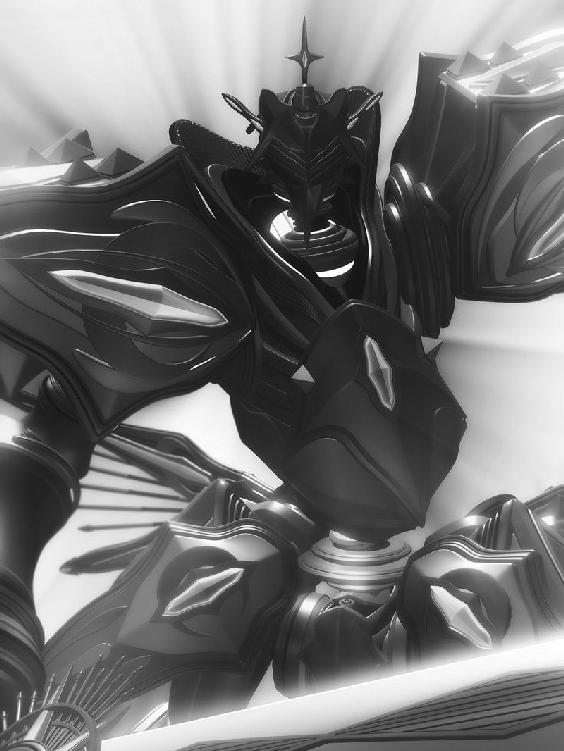
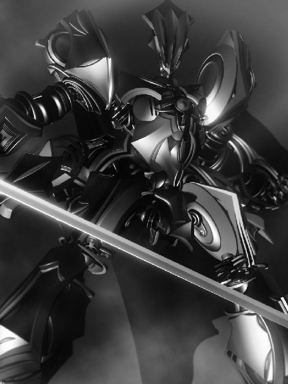

| 黄昏の君 ヴォルフィーネ・上 | |
| ときてっと | |
| ほんとうの物語シリーズ (2017) | |
黄昏の君 ヴォルフィーネ・上
プロローグ
―世が闇に覆われし時 救世の騎士 深き眠りより目覚める―
「それを語るには、私の身の上をお話ししなければなりません」
今にも震え出し、崩れ落ちてしまいそうな華奢な体。何事か言おうとして、その度に動くほっそりとした首筋。小さくさせた肩が緊張の為かびくりと震え、肩口を柔らかな長い髪が滑ってゆく。
愛らしくも美しい少女だった。
心に負った深い傷と、今なお彼女を苛む怯えの奥に垣間見える尊い輝き。
危うげな均衡を保ち、懸命に立つ少女に、ジュリオは尊敬の念すら抱き、ただ頷いている。
「聞こう」
少女の冷たく、しかしきっと柔らかな頬に、ぱっと色がついた。
陰り、濁った瞳が晴れれば、それは澄んだ太陽色をして。
潤んだその瞳でじっと見つめながら、少女が震える唇でゆっくりと、まるで今までずっと忘れていた言葉をひとつひとつ思い出すかの様な慎重さで、名乗る。
「私の名は、フィモシー・ソエル・エルオフィーラ」
フィモシーが名乗れば、世が色付く。
ジュリオは感嘆の思いでその声を聞いた。
「真昼の国の王女......フィモシー・ソエル・エルオフィーラ」
ああ、この方が......。
そうして、少女は語り出す。
まことの言葉で、ほんとうの物語を......。
第一部 ～真昼の国と月の国～
―これは、フィモシー王女がその心に無垢なる太陽の輝きを宿していたころのお話......
忌々しくも照り付ける天の輝き、自由を奪われし生命の象徴......空に浮かぶ太陽を掌で遮りながら、シェイダは思う。
約束された光のもと、ひと時も眠らぬ真昼の国をじっと見つめ、己に言い聞かせるように。
謳歌するが良い、今日と言う日を。じきに夜が来る事も知らずに。
お前達を照らす神の光は、今にも月の国のものとなる。
風が吹いた。
渇いた砂が巻きあがり、シェイダの乗る浮き船を覆い隠していた布が命を宿したかの様にはためく。
乗り合わせたもの全員が、戦いの時に備えるかの如く沈黙して待つ鎧奏騎の傍らに蹲り、一刻も早く風が凪ぐ事を祈った。
波打つ砂色の布が静まり、渇いた地面と同化する......何とも単純な目眩ましであったが、遠目にはそこに鎧奏騎を乗せた浮き船が隠れているだなどと思わないだろう。
「しかし、あの男の言う事は本当だろうか。俺達が攻め込むのと同時に、真昼の国を守護するメレス共が暴れはじめるだなんて」
「無論信用はしていない。尤も、ただでさえ陽の光のもと、燃えるような祭り騒ぎだ。俺達が攻め込んだ所で、民もメレスもそれと気づかぬかもしれんぞ」
シェイダの冗談に、騎士達は体を震わせた。その時を思い、武者震いする体を隠すように、笑い合う。
にっと口元を緩めて、シェイダは皆を見回した。
「我らの目的は太陽球の奪還。如何に真昼の国の者と言えど、民に剣は向けるな。せっかくの祭りに民の命が奪われたとあっては、エルオフィーラの姫も寝付きが悪かろう......何せ、七年ぶりの夜なのだ」
畏まった顔で頷く騎士達に顎を引いて、シェイダは再び布の隙間から見える先、真昼の国に目を向ける。
遠くまで響いてくる喧騒、歌声、祭りの熱気。
明日はこの七年もの間、沈まぬ太陽を掲げる真昼の国を統べるエルオフィーラ家の娘、フィモシー・ソエル・エルオフィーラが生まれて１０年目となる記念日である。
「この砂が落ち切った時、貴女も１０歳......詠み人となる為の試練に挑まねばなりません」
「はぁい」
「これまで何不自由なく暮らしてきた貴女にとって、試練は厳しいものとなるでしょう。けれどフィモシー、貴女もエルオフィーラの娘......立派な詠み人となっていずれはお父様の跡を継ぐのがさだめ」
「はいはいは～い！ だからせっかくのお祭りだけど、明日に備えてお部屋でじっとしておきなさいって言うんでしょ。もう、わかってるわ、お母様！」
ぷぅ、と頬を膨らませ、フィモシーは威嚇する猫のようにごろごろと喉を鳴らす。
母エレシーの手から砂時計をひったくり、いっそ早く明日になってしまえと乱暴に揺らした。
仕方がない子ね、と呆れと慈しみの混じった笑みを浮かべた後、母はフィモシーの頭をそっと撫でてくれる。
こうされると、フィモシーはいつだって穏かな気持ちになるものだ。先程まで腹立たしく感じていた気持ちも水面に生まれた波の様にじわじわと薄れ、輪郭がつかめなくなってしまう。
「貴女の上に、真昼の女神の祝福がありますように......」
大人しくしているんですよ。母の優しい声にこくりと頷き、一人部屋に残されたフィモシーは、深く深く溜息をついた。
「今日って私の誕生日なのに、このお祭りだって私を祝うものなのに、当の私が参加できないなんて、本当にがっかりっ!!」
砂時計をぽいっと放り出し、せっかくのお祝いだからとリルレーナが着せてくれたお祭り用のドレスが皺になるのも気にせずぺたんと座りこむ。
先程の母の言葉を思い出せば、薄れた筈の憤りがまたしてもぶり返してきて、フィモシーは餌をため込む小動物の様にほっぺに空気をため込んだ。
何不自由なくって、今！ まさに！ 不自由してるんですけど～っ!!
フィモシーが喉を鳴らせば、遠くから響いてくる低音と重なる。
きっとこの音楽に合わせて、街はさぞ陽気に踊り明かしているのだろうなぁと想像すれば、歯痒くて仕方が無い。
目が痛む様な強い日差しが差し込む窓の向こうをぼんやりと眺め、いつしかフィモシーは空想の世界で賑やかな街に繰り出していた。
皆が自分の誕生日を祝い、歌に踊りを披露してくれる。屋台のお菓子だって食べ放題。プレゼントだって山程貰えて......そんな想像をしていると、不意に窓がこんこんと鳴った。
弾けて消える空想を振り払い、はっとして体を起こせば、放り出してあった砂時計がいよいよ転ぶ。そんな風に適当にしていたから正確では無いけれど、じきに日が変わろうとしていた......。
「......だあれ？」
どうしてか、小声になる。
か細く、不安気に響いた自分の声に、フィモシーは笑った。
不安なんてまるで無いのに、おかしいの。こんな日に、こんな風にやってくる人、そう多く無い。
フィモシーの大きな瞳が、太陽の光を受けて、きらきらと輝く。
窓が開いて、するりと部屋に滑り込んできた彼に、フィモシーはもうすぐで歓声を上げる所だった。
「きっと退屈なされているだろうと思いましてね」
立ち上がった男は、しーっと唇に指を当てながら、悪戯っぽく微笑んだ。
「ヴィルヘム様！」
フィモシーがその名を呼べば、男......ヴィルヘムは慌てたように窓を閉める。
わっと口を押さえてごめんなさいと笑えば、ヴィルヘムもまた肩を竦めて。
細められる切れ長の目に、絹の様に流れる髪、太陽の光の中にあって輝くその姿に、誰しもが目を奪われる。
そしてその口から語られる物語の数々たるや......旅の吟遊詩人ヴィルヘムは、フィモシーの憧れだった。
「いついつ？ いつ帰られたの？」
「今さっきですよ、姫」
「わぁ、それって真っ先に私に会いに来てくれたって事だ！」
こくりと頷くヴィルヘムに、フィモシーは感激で頬を染める。
高鳴る胸に思わず目が潤みそうになっていると、おでこをピンと弾かれた。
別な意味で涙目になって見上げれば、意地悪な笑みを浮かべた吟遊詩人の顔がある。
「いずれは父君の後を継ぎ詠み人となられるお方だ。今のうちに仲良くしておいて損は無い」
「......う」
「......と言うのは冗談です。お久しぶりですね、フィモシー姫。またお綺麗になられたかな？」
「もーっ！」
頬を膨らませ、笑う吟遊詩人をぽかぽかと叩いてから、フィモシーはその体にぎゅっと抱き付いた。
一見した印象に加え、普段の柔らかな態度からは意外なほど鍛えられた逞しい体。
彼の匂いを胸一杯に吸い込めば、奇妙に懐かしい気持ちになる。
「１０歳の誕生日、おめでとうございます......姫」
「ありがとう、ヴィルヘム様が来てくれるなんて、最高のお祝いだわっ」
「ふふ......せっかくのお祝いの日に閉じこもってばかりでは退屈でしょう。どうです、少し外の空気をお吸いになられては」
「う～、でもでも、抜け出すと絶対絶対怒られちゃうからな～」
「なあに、流石のフィモシー姫も、まさか窓から抜け出すとは誰も思いますまい。見つからなければ良いのですよ」
後ろ手に窓を指差して、ヴィルヘムは片目を閉じて見せる。
フィモシーの目が、冒険心に輝いた。
ぎらぎらと照り付ける太陽の熱を冷ます様に、穏やかな風が丘の上の草をそっと撫でる。
笑い声を弾ませながら、フィモシーは鳥になったかの様に手を広げ、全身で風を受けた。
「あー、はらはらした！ 窓から抜け出すの、私癖になっちゃいそう！」
「いけません、姫。お怪我をされては大変だ。この様な遊びを教えたとばれたら、私が叱られてしまいます」
「ふふ、黙っていればばれっこないないっ！ それにしても、良く誰にも見つからず丘の上まで来れたものだわ。途中、お母様が通りかかった時は冷や汗をかいたけどっ！」
「奥様は私の事をあまり良く思っていないご様子ですから、あれには私も冷や冷やしましたよ」
「お母様は頭が固いの。ね、ね、それよりも！ 今度の旅ではどんな物語を見つけて来たの!? きかせてきかせて！」
フィモシーがせがむと、吟遊詩人ヴィルヘムは眩しそうに目を細めてそっと髪を撫でてくれる。
そうして城に背を向ける様に、丘の上へと腰を降ろすので、フィモシーも隣にぺたんと座りこんだ。
太陽のくれる熱よりもずっと柔らかな温もりを確かめる様に、フィモシーはヴィルヘムの身に頭を預ける。
「見知らぬ景色、そこで生きる命、人......多くのものとすれ違い、それらは私に見た事も聞いた事も無い世界を見せてくれる。この旅で、勿論私は多くの物語と出会った。そのどれもが、真実の物語。歴史に埋もれし、あるいはこれから刻まれるであろう......ほんとうのもの」
物語を詠むヴィルヘムの声は、不思議といつもの優しさが欠けて、冷たく感じられもした。
まるで何か別のものがこの謎めいた吟遊詩人に宿って、姿と声を借りて語っているかのような......奇妙な感覚。
それだけに、フィモシーはいつだって真剣に物語に入り込んだし、今もそうだ。
フィモシーはヴィルヘムの語る物語達が大好きだった。
それはこの世のものであったり、あるいは別の遠い世界の出来事であったり、どれもがフィモシーにとって未知のもので、どれもが太陽に等しく輝いて聞こえる。
今日は一体どんな物語を聞かせてくれるのかしら。
そう胸を高鳴らせていると、ヴィルヘムは少し考える様に間を開けて、空を眺めて囁く。
「今日は姫にとって特別な日......此処は一つ、黄昏の君の物語を詠みましょう」
「黄昏の、君」
それは、フィモシーも良く知る名。
もうすっかり覚えてしまって、詩と共に浮かぶ想像の中の情景は心に強く焼き付いている。
未知の物語では無いと言うのに、どうしてかフィモシーはヴィルヘムの声に心を囚われていた。
その唇が、静かに語る。
「かつてこの世界を滅びが襲った時のお話......」
古き時代、真昼の国が出来るよりも、ずっとずっと昔......。
世界を覆う滅びを前に、立ち上がった者がいた。
かの英雄は鎧を纏い、剣を手に、大いなる翼で空の果てを目指す。
例え滅びの中でその身が朽ちようとも、そこに救いがある事を信じて。
長い長い戦いの末に、大いなる翼は舞い戻る。
美しかった鎧は滅び果て、輝ける剣は打ち砕かれ、色を失ったその姿を哀れに思った眠れる太陽は、空を黄昏で染めて英雄を慰めた。
救世の騎士、黄昏の君。
彼は今もまだこの世の果てで眠り続けていると言う......。
「そして、黄昏の君を深い眠りから目覚めさせる事が出来るのは、太陽王の血を受け継ぐ詠み人だけ。フィモシー、貴女はこの物語の一番新しいページの上に立っているのですよ」
「......救世の騎士、黄昏の君......」
胸一杯に積もった感慨を吐き出すように深く息をすれば、何とも言い様のない気持ちでフィモシーは頷く。
詠み人の儀式なんて、古臭い伝統だなんて思っていたけれど、こうしてヴィルヘムの口から改めて聞かされれば、やはり重大な役目の様に思え、やる気さえ湧いて来るから我ながら現金なものである。
「太陽にすら届くと言われる大いなる翼。私もこの目で一度見てみたいものだ。さぞ、美しいに違いない」
「それは無理だよ、だって」
そうしてフィモシーが笑ったその時だった。
ずどん、と一際大きな鈍い音がして、次にがらがらと何かが崩れる音がする。
はっとして振り返って、その時フィモシーは初めて気づいた。
真昼の国が、今しがた抜け出してきた城が、煙を上げている事に。
遠目から見て、それは至極ゆっくりと動いている様に見える。
上体を反り、腕を上げ、引きずられる様に足が持ち上がる。ずしんと音を立て、渇いた埃を巻き上げて、見上げる程もあるだろう巨大な鎧が歩を進めた。
「あれなるは月の国のガスメイガス級重鎧奏騎、ディムラの涙。ギャレット家に伝わる方法でしか奏舵出来ぬとされる至高の一品」
ヴィルヘムが指差す先、一際美しい青い鎧を認めて、フィモシーは体を震わせた。
一体何が起こっているの。そればかりが頭の中を過り、考えが纏まらない。
「月の国、ギャレット家！ じゃあ、あれは......」
辛うじて漏れたか細い声に、ヴィルヘムが顎を引く。
「ディムラの涙の奏舵主は間違いなく月光王......！ 王自ら、この真昼の国に攻め込んできたのです！」
「月光王......っ」
半ば悲鳴の様に叫び、フィモシーはヴィルヘムに縋りつく。いやいやをする様に首を振って、その目からは涙が零れていた。
「おかしい、そんなのおかしいわ!? だって、いつの間に!?」
叫びながら、フィモシーは気付く。
祭りの喧騒に紛れて、月光王は大胆にも真昼の国に重鎧奏騎で乗り込んで来た。
フィモシー姫が窓から抜け出すだなんて誰も思わぬ様に、あまりに堂々としていたから逆に気がつかなかったのだ。
「けど、人の目は誤魔化せても、メレス達には判るでしょう!? メレス、そうだ......メレス達は!?」
フィモシーは目を凝らし、街を駆け抜ける獣の姿を探す。
例えば鳥、例えば馬、姿形は様々だが、メレスは普通の獣とは違う。
知性を持ち、心を持った聖獣達。
美しくも気高いメレス達は、人の言葉を解せども、決して懐く事は無い。
唯一、その国の王の血筋を除いては。
真昼の国に住まうメレスは、燃えるような毛並みを持つ狼だ。
普段、太陽王の言葉で街を守っているメレス達が、今は混乱した様に暴れ回っていた。
我を忘れ、まるでただの獣の様に......。
「姫、どちらへ......！」
「お城に戻る！ メレスにお願いする！ 戦って、あいつらを追い払ってって!!」
肩を掴まれて、フィモシーはもがく。
先程物語を詠んでいたたおやかな姿からは想像もつかないヴィルヘムの力に、一歩も踏み出す事が出来なくなりながらも。
そうしている間に、青い重鎧奏騎、月の国の王が駆るディムラの涙は城に近づき、乗り込んでいく。
動きからは想像もつかぬ程素早く、そして見た目以上に力強く、ディムラの涙がフィモシーの視界から消えていく。
その時になってようやく城の騎士達が鎧奏騎で応戦を始めるも、混乱するメレスに邪魔され、思う様に動けない。
「お父様、お母様!!」
ぽろぽろと涙を溢して、フィモシーは叫んだ。
太陽を自在に操る至宝、太陽球。
真昼の国と、砂漠を挟んだ向こうの月の国。どちらが勝るとも無い二つの大国は、その宝玉をかけて長く争ってきた。
月光王の狙いは間違い無く父の持つそれだろう。
あの重鎧奏騎が父の元に辿り着き、その巨大な剣を振るう様を想像し、フィモシーは声にならない叫びをあげる。
祭りの喧騒は、いつしか怒号と悲鳴に代わっていた。

崩れた壁を乗り越えて、シェイダはディムラの涙をゆっくりと屈めた。
関節と言う関節から蒸気が噴き出し、しゅうっと音を立てる。開いていく装甲を蹴りあげて、シェイダは王宮の広間へと降り立った。
腰に下げた剣の柄を握り、すらりと抜き放つ。
差し込んだ日差しが刀身に煌めき、眼前で待つ太陽王の顔を眩く照らす。
「お初にお目にかかる......太陽王、フォルストー・ソエル・エルオフィーラ」
名を呼ばれ、太陽王は僅かに眉を寄せた。
抜き放たれた剣からは苛烈な意志を感じさせ、やはり人の上に立つ者は気迫が違うとシェイダは笑う。
動揺も無く、怒りも恐れも無い。ただ正面からシェイダを見据えるその瞳。
流石この七年、民と太陽球を守ってきただけはある。
「名を、聞こう」
太陽王フォルストーの唇が動き、重い声が渇いた空気を震わせる。
ディムラの涙を背に、シェイダは剣を掲げた。
「我が名はシェイダ・ディム・ギャレット、亡き父に代わり、月の国を統べる新たな王！ 月光王シェイダなり!!」
「月光王......そうか、シリウスは逝ったか......」
「敵討ちに来たつもりは無い。我が望みは太陽球のみ！ 大人しく渡してくれれば、命までは取らん！」
「太陽の火を守る事がエルオフィーラ家に生まれたもののさだめ......夜が欲しくば、その剣で奪って見せよ！」
「望む所っ！」
駆ける、月光。
迫り、弾け、踊る剣。
太陽球を賭けての決闘が始まる。
夜闇を照らす閃光の様に速いシェイダの剣に、一撃一撃が当たれば必殺となるであろうフォルストーの剣。
どちらが勝るとも無い剣の動きで、周囲の空気は切り裂け、断たれ、鋭利になってゆく。
息をする間も無い剣戟に、顔を顰めたのはフォルストーである。
宿敵と見えるつもりで構えて来たシェイダと、祭りの最中にあったフォルストーでは、気持ちに差が出た。
シェイダの刃が太陽王を捉える。服が破れ、肉が裂け、フォルストーの腕から血が噴き出す。
太陽王が取り落とした剣を踏みつけて、シェイダは目を細めた。
「......渡せ、天の輝きを」
緊迫したフォルストーの表情が、ふっと緩む。
まるで心から愉快だと言う様に、目を細めて。
懐から取り出したるは、天の至宝。
空に浮かぶ光が一欠けら地上に落ちたかのような、輝ける太陽球。
「何故夜を望む、月光王」
「我らが月を際立たせる為に......とでも言おうか」
「ふむ......」
「お前達は、あまりに光の恩恵を受け過ぎた。その強き輝きで目がくらみ、あるべきものが見えていない」
「我らは長きに渡り争ってきた。真昼の国が太陽球を持てば世界は昼に。月の国が持てば世界は夜に......我らはさだめの元にある」
「太陽の火を決して絶やすな......か。もし、その火が消える様な事があれば......」
果たしてその時、何が起こると言うのか。
シェイダはフォルストーの差し出す太陽球にゆっくりと手を伸ばす。
先程まで切り結んでいた相手。しかし今では奇妙に友情めいた感慨さえあった。
これもまた、儀式なのだ。二つの国が。この世界が廻る為の儀式。
シェイダの指が、太陽球にそっと触れる。
その時である。
「なっ!!」
突如として現れた影が、フォルストーの手から至宝を奪う。
まるでゆらゆらと燃え盛るかの様な毛並みを持った狼。それは真昼の国に住まうメレス、炎狼ランヴィタール。
謀られた。一瞬血が上りかけて剣を掴み、シェイダはフォルストーを睨むが、驚いているのは太陽王も同じだ。
何が起こっている。悩むよりも先に二人同時に動いていた。
太陽球を咥えた炎狼に、シェイダの、そしてフォルストーの剣が迫る。
翻る狼。床を討つ剣。散る火花。俊敏に跳ねたランヴィタールが繰り出す鋭い爪がシェイダの首に迫る。
「ぬぅっ!!」
避けきれぬ。咄嗟の判断だった。
逆手で振り抜いた剣が、メレスの頭に吸い込まれていく。
見開かれる獣の瞳。体を大きく捻り、かわそうとする。
あっと思った時には既に遅い。まるで鈴を鳴らす様な、不思議と美しい音が響いた。
シェイダの剣が、メレスごと太陽球を貫いたのだ。
一刻も早く城へ。フィモシーはヴィルヘムの腕の中でそれだけを思いもがいていた。
月の国にディムラの涙がある様に、真昼の国には重鎧奏騎、楽園のジルアースが伝わっている。
あれさえあれば、お父様が月光王になんか負けるはず無い。
それなのに、あの勇ましい深紅の鎧が現れる気配が無いのはどういう事か。
父は城の中で動けなくなっているとでも言うのだろうか。
「......お父様が無理なら、私が行く！ 私が楽園のジルアースで、国を守る!!」
「いけません姫。第一、貴女は鎧奏騎に乗った事があるのですか」
「あるもん！」
「一歩二歩、戯れに歩くのとはわけが違う。あそこは戦場です。貴女は守る側の人間では無い......今はまだ、守られる側だ」
「......ヴィルヘム様......っ」
「安心しなさい、フィモシー。貴女の事は、たとえ命に代えてもこの私がお守りします」
膝をつき、フィモシーの目線でヴィルヘムは微笑んだ。
この微笑みをくれたのがこんな時でなければどんなに良かっただろう。唇を噛み締めながら、フィモシーは頬を撫でて涙を拭ってくれるヴィルヘムを黙って受け入れる。
美しい顔立ちが動揺で歪んだのは、その時である。
彼に似合わぬ、下品な舌打ち。
振り返れば、そこに闇があった。
「......何、なんなの......？」
この七年間一度も沈んだ事の無い天の光が、まるで黒い球状の黒点と化し、城からじわじわと色が失われて行く光景に、二人は声も出無い。
「何と言う事だ......」
メレスの血で濡れ、剣で貫かれた太陽球が、急速に光を失っていく。
天の至宝と呼ばれたものが、今やひび割れ、まるで二つの硝子片である。
王の嘆きは長くは続かない。失われた光が見る見るうちに周囲に広がり、まるで太陽球の骸が周囲の光を飲み込むかの様に、闇が滲み始めたのである。
王達が言葉を失っていると、闇はまるでのたうつ蛇のように頭を持ち上げ、凄まじい勢いでシェイダに迫る。
「いかん！」
思いがけぬフォルストーの行動に、シェイダは何が起こったのか理解できなかった。
「太陽王！」
闇に呑まれかけたシェイダを、フォルストーが身を呈して庇ったのである。
何故だ。そう尋ねる間もなく太陽王は闇に呑まれ......一瞬の間の後、その場に倒れ伏した。
死んだのか。心臓がどくんと跳ねるが、息はある。どうやら昏睡したらしい。
本能的にシェイダは悟った。この闇に触れてはならない。次の瞬間、駆け出している。
「シェイダ様！ こちらへ!!」
月の国の騎士が慌てた様子で城の外へと手招くのに、シェイダは頷き返すと、迫りくる闇に追い付かれぬ事を祈りながらディムラの涙に飛び乗った。
起き上がる鎧が体勢を整えるのも待たず、脚部にありったけの力を込めて跳ぶ。
城の外へと跳躍したディムラの涙は、すぐ傍にやって来ていた浮き船へと着地した。
揺れる船体。渇いた砂埃を巻き上げて船が走る。
「一体、ありゃあなんなんですか!?」
目を見開いて騎士が尋ねるのに、シェイダは首を振る事しか出来なかった。
今や城全体を覆い始めた闇が、じわじわと真昼の国を飲み込んでいく。
「......太陽の火を、絶やすな......」
シェイダの呟きは、民達の悲鳴にかき消された。
「姫、こちらへ！」
ヴィルヘムが叫ぶ。フィモシーは何度も何度も城の方を振り返りながら、なんなの、なんなの、と口の中で呟く。
城が。街が。真昼の国が、闇に包まれていく。
「これが夜なの？ 太陽球は月光王に奪われてしまったの？ だからこんな風になったの!?」
「判りません......しかし、これでは夜と言うよりまるで闇だ」
「闇......っ」
ヴィルヘムはフィモシーを伴い丘の上にひっそりと建つ給水塔へと走り寄ると、その扉を蹴り破らんばかりの勢いで開く。
埃っぽい床に目を凝らし、すぐに地下への入り口と思しき扉を見つけ出し、力いっぱい持ちあげた。
「此処から水路に通じています」
「そこから街に出るの？」
「いいえ、街では月光王の手下が待ち受けているかもしれません。これからお連れするのは、特別な通路。エルオフィーラ家のものしか知らぬ、秘密の地下道です」
「お父様とお母様はどうするの？ それにリルレーナ、ガイエン......城の皆だって!! 私だけ逃げるなんて出来ないよ!!」
「心やさしいフィモシー姫、どうかお聞きください。今日貴女を城から連れ出したのも、こうして地下道を行くのも、全ては太陽王、フォルストー様の命なのです」
「お父様の......？」
フィモシーが息を飲むと、ヴィルヘムは真剣な顔で頷いた。
まるで感情を欠いた、怖いくらいに真剣な目で。
「この私に、姫を最初の儀式の間までお連れする様に......と。今日は貴女の１０歳の誕生日。貴女は詠み人となるべく、三つの儀式に挑まねばなりません」
「だって、そんな、こんな時に......!? なんで、なんでそんな事をヴィルヘム様に頼んだの!?」
「信じられぬと言うのなら、こちらを......」
そうしてヴィルヘムが懐から取り出したのは、銀昌石の飾りものだった。
鎧奏騎の心臓ともなる銀昌石を丁寧に削り出し、まるで天に浮かぶ太陽の如き形に整えた美しい飾り。
それは、エルオフィーラ家に生まれたものが１０歳になる前の月に贈られるものに違いない。
フィモシーは自分の銀昌石を取り出して、ヴィルヘムが持つそれと並べてみた。
「フォルストー様からお預かりしたものです。これを、貴女をお連れする証としろと」
「お父様が、ヴィルヘム様に私の事を......？」
「はい」
「でも......」
銀昌石を見つめて、フィモシーは喉を鳴らす。
このままヴィルヘムと共に儀式へと旅立つか、それとも月光王の手先が待つ城に戻るか。
答えは出ている筈なのに、どうしても決心がつかない。
そんなフィモシーを優しく諭すように、ヴィルヘムは言うのである。
「姫は先程、勇敢にも月光王に立ち向かおうとなされた。ご自身で鎧奏騎を纏い、剣を取って国の為、民の為に戦うと。今の貴女では、それは無謀でしかない。けれど、貴女にはたった一つだけ月光王を退ける方法がある」
「それは......!?」
「この地下道の先に続く太陽神殿へと赴き、そこに祀られた宝具、竜の瞳を手にするのです。そこで貴女は最初の言葉を知る。それが詠み人の儀式のはじまり。竜の瞳が指し示す神殿を探し出し、残り二つの言葉を知った時、貴女は真に詠み人となる」
「......黄昏の君......！」
「そう、楽園の言葉を詠むのです。その詩で以ってなされる、黄昏の君の召喚。月光王の手に落ちた太陽球を奪還し、天の輝きを取り戻す事が出来るのは、貴女をおいて他に無い！」
「で、でも......例え詠み人となっても、むやみに楽園の詩を口にしてはならないって、お父様が......」
「真昼の国に永遠に太陽が昇らないかもしれないと言う時です。こんな時にその力を使わずして、いつ使うと言うのです」
ヴィルヘムの声は、フィモシーを強く支え、勇気づけた。
父も母も、国の皆も、今どんな目にあっているか判らない。
けれど太陽王フォルストーは、フィモシーの事を信じてヴィルヘムを遣わしてくれたのだ。
その信頼に応えてこそ、真昼の国の王女。太陽王の、エルオフィーラの娘。
「......ヴィルヘム様、おねがい......」
「なんなりと」
「ぎゅってして」
ヴィルヘムの逞しい腕が、フィモシーを抱き寄せる。
その吐息が耳元にかかり、優しげな囁きが聞こえる。
「どんな時でも、私だけは貴女の味方ですよ、フィモシー......」
こくりと頷き、フィモシーは決意した。
三つの儀式を乗り越え、詠み人となる。
黄昏の君を召喚し、きっと真昼の国から夜を追い払って見せる、と。
最近では殆ど使われた気配の無い、空気の止まった地下道をひたすらに歩き、ヴィルヘムの導きの元、太陽神殿へと辿り着いた頃には、フィモシーは緊張と疲労とでふらふらになっていた。
思えば、いつの間にかすっかり日も変わり、今日はフィモシーの１０歳の誕生日。
あの賑やかなお祭りは、思いもよらない襲撃によって台無しにされてしまった。大人しくしているんですよ。母の声が聞こえる様だ。
厳しくも優しいお母様。どうして言う事を聞かなかったんだろう。どうして部屋を抜け出したりしたんだろう。
あのまま部屋に閉じこもっていたら自分もどうなっていたか判らない。父が自分を逃がしてくれた。それは判っている筈なのに、フィモシーは罪悪感で押し潰されそうだった。
もしお母様に何かあったら。そう想えば、今にも膝をついてしまいそうになる。
先を行くヴィルヘムに置いて行かれないように、フィモシーは殆ど気力だけで歩き続けた。
そうして、ふと気付けば頭上で仄かに白く輝くものがある。
そこは神殿の最奥。輝くは、フィモシーの小さな体の何倍もあるであろう、巨大な銀昌石だ。
「これが......」
自分は今から、詠み人となる儀式に挑む。
それは、試練。この銀昌石に宿る意志の力を身に宿し、神秘の力を授かるのだ。
父もまた、１０になった年、此処に......この場所で聞いたのだろう。
楽園の言葉を......。
「さぁ、姫」
ヴィルヘムもまた緊張しているのか、酷く冷たいその声に促され、フィモシーは視線を落とす。
長い首を垂れて、まるでフィモシーの内面を見透かすかのように見つめる巨大な竜のレリーフに歩み寄り、その瞳を撫でた。
真昼の女神の化身とも、その使いともされる竜を象った浮き彫りに嵌めこまれた瞳を。
これこそが宝具、竜の瞳。
それは天空の様に澄んだ青をして、それ自体が仄かに光を放ち、フィモシーを照らす。
本来ならば、神殿から持ち出す事の許されぬもの。しかし、儀式に挑むフィモシーにはこの宝石の力が必要だった。
吸い寄せられるように手を伸ばし、そっと触れる。
まるでフィモシーが来るのを待っていたかのように瞳はレリーフから外れ、掌に収まった。
輝きがぼんやりと薄れ、まるでただの硝子細工の様。
けれどその内に宿す大いなる力は隠しようが無く、フィモシーは指先に痺れる様な感触を確かに感じた。
目を閉じれば、頭上に浮かぶ銀昌石の気配が増す。
聞こえる。
フィモシーは半ば夢心地でその言葉を聞いた。
銀昌石が発する、聞いた事の無い音。
それは言葉か、歌か、あるいは呻き声か囁きか......かつてこの世界に魔が満ちていた頃の音色......。
この楽園の言葉を聞き、それを自身の言葉として詠む事。
それが詠み人となる為に必要な儀式。乗り越えるべき試練。
体に沁み込み、骨を震わす様なその音に耳を傾ければ、フィモシーは次第に息苦しくなってくる。
頭の芯が痛み、閉じた眼球が暴れた。込み上げてくる吐き気は、緊張から来るものだろうか。
思わず、膝をつく。手にした竜の瞳を握りしめ、フィモシーは喘いだ。
辛い。苦しい。逃げ出したい。
そんな負の感情が次々と湧き出してくる。
どうして自分がこんな目に。そんな考えが浮かび、挫けそうになるのを、歯を食いしばって耐える。
お父様、お母様、城の皆......真昼の国に住まう人々の事を思う。
いつだって大きな存在だった父。小言を口にしながらもフィモシーの事を一番に考えてくれる母。
時には友達の様に、時には姉の様に世話を焼いてくれる侍女のリルレーナ。お腹がすいて部屋を抜け出して厨房に行くと、こっそりおやつを作ってくれる料理長のガイエン。
城の皆はフィモシーが何か言うたびに真剣に耳を傾けてくれたし、街に遊びに出かければ皆が笑顔で声をかけてくれた。
助けたいのです。フィモシーは銀昌石に語りかける。
きっと奪われてしまったであろう太陽球を月光王のもとから取り戻す為に、フィモシーは詠み人とならなければならない。
昨日までは、さだめでしか無かった。
けれど今は、フィモシーの意思で。
「......！」
何かが、聞こえた。何かが、視えた。
意味の無い音色でしか無かった楽園の言葉が、意味を結ぶ。
弾ける様な感覚と共に、フィモシーは最初の試練を乗り越えた事を知った。
そして、脳裏に浮かぶもう一つの形。
「誰かが......泣いてる......悲しんでる......？」
なんだろう、この感触は。
涙......悲しみ......いや、あるいは孤独だろうか......誰かが一人でそれに耐えている様な、そんな光景が浮かび、消えた。
「......姫？」
呼びかけられて、フィモシーははっとする。
振り返れば、銀昌石の灯りに照らされてぼんやりと浮かぶ、ヴィルヘムの顔がある。
終わったよ。
そう囁いたつもりで、笑みを浮かべ。
フィモシーは気を失った。
どんな時でも、私だけは貴女の味方ですよ、フィモシー。
夢の中で聞こえる、囁き。
それは優しくも悲し気で、どこか切ない声......。
目を開けると、見知らぬ天井。フィモシーは深く深く息を吐いて、切ない気持ちでいたのは夢の中の声の主では無く、自分自身であった事を知った。
ゆっくりと身を起こせば、体が軋む。自分は一体どれくらいの間眠っていたのか......。
横になっていたのは、上等なベッド。けれど狭い部屋にはそれくらいしか家具が無く、申し訳程度に置かれた棚の上に作りのもの花細工が飾られているばかり。
嗅いだ事の無い香が焚かれていて、フィモシーは急に不安になる。
此処は何処なの。立ち上がると、眩暈がした。疲れが抜けていない......。
「ヴィルヘム様......」
か細く囁いて、フィモシーは恐る恐る部屋を出る。
香の匂いが強くなり、長く続いた廊下は薄暗い。
左右に沢山の扉があって、時々その中からくぐもった声が響いてきた。
男のもの。女のもの。まるで獣の様な、奇妙な声だ。
ぺたり、ぺたり、とフィモシーは素足で廊下を歩いて行く。やがて、広々とした部屋に出た。
ソファーに身を沈めていたもの。椅子にしな垂れかかっていたもの。ピアノの鍵盤を戯れに撫でていたもの。
女達が一斉にフィモシーを見て、まるで猫みたいに目を細める。
「あら、ようやく起きたの、お姫様」
「体は平気？ 貴女、三日も眠っていたのよ」
「こっちへいらっしゃいな。まぁ、綺麗な肌、奇麗な瞳。ほんとうのほんとうに、王女様なんだねえ」
女達が入れ替わり立ち替わりフィモシーの前にやってきて、ころころと笑う。
困惑したフィモシーはもごもごと言い淀み、ようやくぽつりと声を出した。
「ここは、何処なの？」
「此処は常春の館だよ、かわいいかわいいお姫様」
「ヴィルヘム様はどこにいるの？」
「ああ、あの男なら今は......向こうの部屋さ。あの鳥の印がついている部屋」
ありがとうと擦れた声で呟き、フィモシーはゆっくりと元来た廊下を歩いて行く。
背中でくすくすと声がした。良いのかい、行かせちまって。可哀想に、あんなにふらふらで、もう少し休ませてやった方が良い。
扉についた鳥のレリーフを見上げ、フィモシーは心細げに喉を鳴らす。
ぎいっと音がして、扉が開く。中を窺うと、男にしな垂れかかる女の姿が見えた。
女は男の頬のあたりを指でつっと撫で、やはりくすくすと笑っている。
何をしているの。首をかしげて目を凝らして、ようやくつまらなそうな顔をしている男がヴィルヘムである事に気がついた。
ヴィルヘムの目が、億劫そうにこちらを向く。見開かれて。
「どきなさい」
その冷めた声がはじめ自分に向けられたものだと思って、フィモシーはびくりと身を竦ませた。
はぁい、と舌足らずな声がして、女に向けられた言葉だったのだと判ると、どっと汗が吹き出る。
「ちょっと借りてたよ」
悪戯っぽく笑みを浮かべ、女がフィモシーにそう囁き、部屋を出て行った。
起き上がったヴィルヘムは乱れた服を直し、フィモシーの前に膝を付く。
「姫、起きられて大丈夫なのですか」
「う、うん......まだちょっと、体が重いけど」
「無理もない。あの後、三日も気を失ってらしたんだ」
「ヴィルヘム様、此処は何処なの？ 常春の館って聞いたけど......」
「如何にも、此処は真昼の国から程近いラザレーの街にある娼館、常春の館......ごらんなさい」
言って、ヴィルヘムは一つだけある小さな窓を指差した。
板か何かが打ちつけられているのだと初めは思ったが、すぐに違うと知る。
外が、暗い。太陽の光が見えない。夜だった。
「......太陽球は、月光王に奪われた......私は、詠み人とならなければならない......」
自分の立場と使命を思い出し、フィモシーは拳を握って小さく呟く。
ヴィルヘムは頷いて。
「こんな場所に貴女をお連れした事を、どうかお許しください」
「ここは、しょーかん？ って、何をする場所なの？」
「女達が体を売る場所です」
至極当然の様に言うので、フィモシーはぱちぱちと目を瞬かせ、それから真っ赤になった。
フィモシーとてエルオフィーラの娘、いずれ真昼の国を治める王となれば、世継ぎを生む事も大事なつとめだ。
そう言う事も、先生から少し習った。さわりとほんの少しの心構えだけだから、勿論詳しくは知らないが、その意味するところは理解できる。
本と授業で学んだ知識から、館で何が行われているのか察しがついて、フィモシーは唸るのだった。
もじもじしながら、小首をかしげ。
「この街には多くの商人達が立ち寄る。彼らの中には、何処の国にも属さずあちらこちらへ旅をする者も多い。彼らは情報を持っています。そしてその情報は、流れ流れてこの館に集まってくる」
「皆格好を付けたがるからね。女の前では、男ってのはぺらぺらお喋りなもんさ。それが判っているから、私らの口は堅い。賢くあろうって訳だよ。お姫様がうちに居るだなんて外に漏らす奴はこの館に一人もいやしないし、それでいて外の情報は入ってくる」
いつの間に現れたのだろう、扉にしな垂れかかる女はそう言って笑った。美しく、妖艶で、うんと幼くも、その逆にも見える。何処か浮世離れした人だった。
ヴィルヘムは急に不機嫌そうな顔になり、けれど肯定の様に小さく顎を引く。
「真昼の光芒が届く領内とは言え、何処に月の国からの追手が居るか判りません。この常春の館は、色々と都合が良かった」
「私の紹介はしてくれないのかい」
「彼女はエンリユイ。この館の女主人で......昔からの、私の知り合いです」
「はじめまして、お姫様」
差し出された手をおずおずと掴むと、エンリユイはいっそう笑顔になってぶんぶんと腕を振る。
強めの香水の匂いが香と混じって、フィモシーはくらくらした。
「この常春の館はね、この辺じゃあちょっとしたもんなんだ。国を問わず、お偉いさんもお忍びで顔を出す。あんたのお父上も来た事があるよ」
「お父様が......!?」
エンリユイは大袈裟な仕草で頷いて見せた。ヴィルヘムが目に見えてむっとする。
「勿論あの方が若い頃の話さ。あの頃は、私もまだ下働きでねぇ......太陽王だけじゃないよ。月光王だって来た事がある。此処では立場なんて関係無い。フォルストー様とシリウス様は、此処じゃ案外仲良しだったよ。二人とも、うちの娘達なんかより、客としてやって来る男達の自分語りの方を、何が楽しいのか嬉しそうに聞いていてねえ。お互い似た様な立場、似たような悩みもあったんだろう。そりゃあ気が合う風で......でも、ある時同じ娘に入れ込んでね。あの時は大変な騒ぎだったけど、今では良い思い出さね」
「エンリ！ それくらいにしておきなさい!! このお方は真昼の国の姫君なのですよ!!」
怒りを露わに叫ぶヴィルヘムに、エンリユイは悪戯っぽく目を細め、首を縮めた。
あのヴィルヘム様がこんな風に怒鳴るだなんて。フィモシーは驚いて声も出無い。
「あんたがそれを言うかねえ、おお、怖い。ごめんよ、お姫様に聞かせる話じゃ無かったね。忘れておくれ」
「そんな事よりも、情報だ！ 私は対価を支払っているのだぞ!!」
「あんただって楽しんだだろうに......まあ良いさ、約束だからね。心して聞いておくれよ、お姫様」
エンリユイの声色が硬くなるのに、フィモシーはごくりと喉を鳴らす。
真昼の国の事だ、と聞かずとも判った。
「太陽が黒点と化して三日......真昼の国はまるで時間が止まったかの様な有様だそうだ。街も、人も、メレスでさえ、皆深い夢を見ているみたいに倒れ伏し、動きを止めているって話だ。様子を見に行った奴らの中にも、ばったりと倒れてその場でぐうぐういびきをかき始めた奴が居る。声をかけても、叩いても、さっぱり目覚める気配が無い。そして、街を覆う闇はじわじわと広がりつつある......このままじゃ、世界全部が飲み込まれかねないよ。どうもこりゃあ、普通の夜じゃ無いって話だ」
「......そんな」
ぎゅっと目を瞑れば、涙が滲む。
フィモシーの暗い瞼の裏に、父の顔が、母の顔が、城の皆の顔が浮かぶ。
ふと、懐に重さを感じて手を入れれば、すっかりフィモシーの熱を吸った竜の瞳があった。
涙を拭い、そうだ、と頷く。
黄昏の君の召喚さえ叶えば、眠りの中にある真昼の国だってきっと目覚める。
もう一度、太陽を輝かせる事さえ出来れば......。
「おやおや、何処へ行くんだい、お姫様」
「次の儀式へ！ 一刻も早く、詠み人となる為に!!」
お腹に力を込めて叫んだつもりが、思ったよりも力が入らず、へろへろになりながらそれでもフィモシーは拳を握る。
館の女主人エンリユイは困った風な笑みを浮かべ、肩を竦めてみせた。
「一刻も早く、だなんてお姫様にしては勇ましいお言葉だね。まあもう何日か休んで行きな。その間に良い馬を用意してやるよ」
「う、ぐぅ」
「ふふふ、美味しい料理も必要だね。三日も何も口にしていないんだ、そんなんじゃ出る力も出無いだろう」
きゅるきゅると鳴るお腹を押さえ、フィモシーが真っ赤になって頷くと、エンリユイは可笑しそうにころころと笑い、そっと髪を撫でてくれる。
その時になってようやく緊張が解けたのか、フィモシーはほっと息を付き、そうするとやっぱり力が抜けて、その場にぺたんと尻もちを付いてしまった。
それからもう三日間、フィモシーは立ち上がる事も出来ず、ふかふかのベッドに身を沈め、天井を見上げて過ごした。
とにかく体が気だるくて、とても旅に出る力が無かったのである。
不思議な程消耗しているのは、やはり儀式のせいだろうか。
フィモシーは時折竜の瞳を取り出して、ぼんやりとそれを眺めたものだ。
不思議な青い硝子球。かつて父もまたこれを手に、詠み人の儀式に挑んだのだ。
三つの儀式を全て終えたなら、瞳は神殿に返すのが決まりだ。
けれど今のフィモシーには、これを使って黄昏の君を召喚すると言う重大な使命がある。
その事を思い出すたびにフィモシーの気持ちは逸り、同時に体に力が戻っていく気がした。
ヴィルヘムはとにかく常春の館が気に入らないらしく、終始不機嫌な顔を見せていたが、フィモシーは意外と此処が気に入っていた。
女達は入れ替わり立ち替わりフィモシーの部屋を訪れて世話を焼いてくれたし、初めは纏った雰囲気から少し苦手に思っていたエンリユイも、話してみればとても優しく、強張った気持ちが解れていくのを感じる。
あの物腰の柔らかな吟遊詩人がどうしてここまで嫌悪感を露わにするのか、フィモシーは不思議なくらいだった。
もう三日経つとフィモシーはすっかり元気になり、女達とお喋りをして、一緒にお菓子を食べて、時には料理を習ったりもした。
女達は聡明で、博識で、そして自分を美しく見せる術に長けていた。
この館で、女達は学ぶのだそうだ。知恵と気品と狡猾さを身につけ、色香に寄ってくる男達を手玉に取る。
そこにはフィモシーの知らない世界があった。暗く、淀み、しかしぎらぎらとした輝きのある世界......。
彼女達はそれぞれの中に、それぞれの輝きを持っている。フィモシーは暇さえあれば彼女達に話しかけた。
旅に出る準備が整った、とヴィルヘムが告げたのは、すっかり皆の名前を覚えた頃だ。
「全部終わって、太陽がまた昇ったら、私もう一度ここに来る！」
その時はお礼もしなくっちゃ、と元気良くフィモシーが言えば、エンリユイも女達も途端に厳しい顔になって首を振った。
思いがけぬ反応に困惑するフィモシーに、エンリユイは旅服を着せてくれる。そうして、穏やかだがどこか厳しい声で言うのだった。
「こんな所に帰ってきちゃいけないよ。綺麗なままこの館を出る事が出来た娘は、二度と迎え入れない決まりなんだ」
「でも、お礼......」
「お姫様が太陽を取り戻してくれる事が一番さ。そうすれば、あんたが元気に戻って来たんだって事が私らにもすぐに判るからね」
そう言ってエンリユイはフィモシーの頭を優しく撫でて、それから綺麗な細工の付いた短刀を持たせてくれる。
「可愛い可愛い真昼の国のお姫様。旅をするんなら、身を守る道具は持っていかなくちゃね。良いかい、フィモシー。男は信用するんじゃないよ。例えあんたに優しく見えても、心の底で何を考えているか判ったもんじゃない」
「う、うん......？」
「ヴィルヘム坊や、私から言っとくよ。あんた、しっかりお姫様をお連れするんだよ。この子を守ってやるんだよ」
「無論です」
「どうだかね」
エンリユイは肩を竦めて、最後にフィモシーの髪を丁寧に束ねリボンで結んでから、ぎゅっと抱きしめてくれる。
私も、私もと女達がそれに続いて、フィモシーはすっかり香水の匂いでくらくらになってしまった。
「いってきます！」
元気いっぱい声を上げ、友達になった皆に手を振って、フィモシーは旅立つ。
ヴィルヘムの引く馬に乗り、太陽の見えない夜空の下を、次なる儀式へ向けて......。
街の外に出ると、一面が渇いた砂の大地。緑豊かな真昼の国からほんの少し離れただけで、辺りは殆ど砂漠だった。
かつて滅びがこの世を飲み込んだ名残とも、救世の騎士が振るった大いなる剣が滅びごと大地に宿る生命を吹き飛ばした跡とも言われている。
先の見えぬ景色が、まるで永遠と続いている様で、フィモシーは心細くなり、何度もヴィルヘムに呼び掛けて、跨った馬の背を撫でてその存在を確かめた。
太陽の昇らぬ空。今は厚い雲に隠れて、その名残の黒点も見えない。殆ど真っ暗だ。
それでも雲間から仄かに光が射すのは、一体どう言う仕組みだろう。誰も見た事の無い空の向こうを思い、フィモシーは束の間の夢想に耽った。
「ごらんなさい、姫。オアシスが見えた。今日はあそこで休みましょう」
ヴィルヘムが指差す先に、確かに生い茂る木々が見えた。
吟遊詩人は引く事をやめ、馬に飛び乗る。フィモシーを背中から抱きしめる様に手綱を取り、馬を走らせた。
二人と荷物を抱えていると言うのに、馬は軽やかに疾駆する。水が飲めるのが嬉しいのだろう。フィモシーも顔を綻ばせた。
近づいてみると、そこは砂の中の泉である。草木が生え、地が潤い、水の匂いがした。
太陽の無い夜の気温は普段よりもぐんと下がっていたが、それでもずっと移動していると汗ばむ程にはある。
フィモシーは泉を前に、早速馬から飛び降りて駆け出した。初めの頃はおっかなびっくりだったけれど、背の高い馬から降りるのにももう慣れた。
「わ、つめたいっ！ きてきて、ヴィルヘム様！ とっても冷たい水！」
「恐らく地下から湧き出ているのでしょう。私も旅の途中、何度か寄った事がある。明るければ、青い空が映ってまるで大きな鏡の様に美しいのですが......」
ヴィルヘムの言葉に、フィモシーは泉に差し入れていた手をそっと抜いた。
ぐわんぐわんと、揺れる波が小さくなっていき、その後には静寂がある。
泉に映るのは、暗い空。それは静かで、切なく、けれども美しかった。
「十分に綺麗だわ。私、夜って......もっと怖いものだと思ってた」
フィモシーの囁きに、吟遊詩人はこくりと頷く。
真昼の国が太陽球を手にして七年。フィモシーはかつて世を覆っていた夜の事を覚えていない。
ヴィルヘムはきっと覚えているのだろう。その頃の暗闇は、今のこの世界と同じ深さをしていたのだろうか......。
黙っていると本当に寂しくなりそうだったので、フィモシーは元気いっぱいの笑顔を浮かべヴィルヘムに向けて手を広げる。
「ぬがして～っ!!」
「......姫、そのくらいご自分で出来る様になりませんと」
だっていつもはリルレーナが手伝ってくれるんだもん。頬を膨らませるフィモシーに、ヴィルヘムはやれやれと首を振る。
フィモシーだって子供じゃ無い。今着ているのは繊細なドレスじゃなくて旅服だから、一人で脱ぐのを試してみる良い機会だとは思うのだけど、何だか甘えたい気分だったのだ。
それから、泉を見つめてリルレーナの事を思う。彼女もまた、決して覚めぬと言う深い眠りの中に囚われているのだろうか。
こんな時、リルレーナが傍に居てくれたらどれだけ心強かっただろう。あの日、城を抜け出す時、彼女を誘っていれば......。
あり得ない想像を、首を振って跳ねのけて、フィモシーはエンリユイから貰った短刀だけを手に、泉に体を沈める。
冷たくて、気持ちが良い。体に籠った熱や、疲れが、綺麗な水に溶けて消えていくかの様だ。

「気持ちいいよ、あ、魚もいる！ ヴィルヘム様、こっちこっち！」
少し深い所まで泳ぐと、水の中を泳ぐ小魚達が淡い光をきらきらと反射して、まるで宝石の様だった。
丁度火を起こした所だったヴィルヘムが手を振るフィモシーに気付き、ゆっくりと首を振る。
「水浴びは後でさせていただきます。さぁ、姫。あまり水に浸かっていると風邪をひいてしまう」
「はーい」
元は何処からこの泉にやってきたのだろう、フィモシーが動くと、魚達がわっと散った。泉から上がると、水に濡れた体がぶるっと震える。確かにずっと入っていたら風邪をひいてしまうだろう。
ヴィルヘム様は私の事、良く見ていてくださるわ。フィモシーは濡れた長い髪を絞りながら、満たされた様な、幸せな気持ちになった。
「一度方角を確かめましょう。何しろこの暗さだ、何処で道を見失っているか判らない」
干し肉とパンの食事を終え、ヴィルヘムが言うのにフィモシーはこくりと頷く。
大事に手に握っていた竜の瞳をそっと撫でて、願いを込める。旅服は洗濯して木にぶら下がっている。少し肌寒い。
「道を、お願い......」
竜の瞳が熱を持つ。青い硝子球がぱっと弾ける様に輝いたかと思うと、次の瞬間、空に光の線が浮かんだ。
線は二本。それぞれ別の方向を指し示している。
この先に、次なる儀式の場所がある。
巨大な一枚の浮石の上に建造されたと言う第二第三の神殿は、真昼の国を中心に、渇いた砂の大地を常に移動し続けているのだ。
「見つかるかな、神殿」
「不安がる事はありません。エルオフィーラ家に生まれた者、皆が乗り越える試練です」
けれど、今度ばかりは訳が違う。
フィモシーには太陽を取り戻すと言う使命があるのだ。
その不安を感じ取ったのか、ヴィルヘムがいつもの穏やかな笑みを浮かべた。
「私がついております。どんな時でも、私だけは貴女の味方ですよ、フィモシー」
「......うん」
こくりと頷くフィモシーに、ヴィルヘムも頷き返して。
目を閉じ、吟遊詩人は物語を詠み始める。
青い瞳の乙女を失い、悲しみに嘆く王。
次第にその悲しみは世をおおい、世界は混沌の中に落ちる。
立ち上がるのは、一人の騎士。
王の忠実なる剣にして、遠方からの異邦人。
王をいさめ、敵を屠り、騎士は光の中を駆ける。
傷つき、けれども屈せず、救世の騎士は滅びと対した。
黄昏の君の昔話......彼は今も、次なる主君を待っている......かの騎士を目覚めさせるのは、太陽の血がもつ熱さだけ......。
優しげな声を聞いていると、フィモシーはだんだん瞼が重くなってきた。
ヴィルヘムの膝の上に頭を預け、夢見心地で耳をすませる。
吟遊詩人の詠む物語は、いつしか色を変えている......。
邪悪なる竜は夢の王。かの者は夢を渡り、夢を喰らう。
悪逆非道なその行いに、遂に太陽はお怒りになられた。
今では名も伝わらぬ太陽の化身。慈愛に満ちた真昼の女神。そのお方は眩い光で竜を射抜き、大地の奥深くに封じたと言う。
真昼の国の民が見る悪夢は、大地に封じられた闇竜が見せる幻影なのだ......。
「......フィモシー、貴女は私には眩しすぎる」
何処か遠くで、誰かの声がする。
耳元で囁かれる、これはヴィルヘム様の声......。
「愛おしい姫よ、どうか私に......」
その先の言葉は、音にならない。
代わりに、柔らかな感触がある。
唇に触れる、吐息。
心臓が跳ね、フィモシーはもうすぐで目を開けそうになりながら、必死で夢に縋りつく。
夢？ これは夢......？
胸の奥で跳ねる未知の鼓動に酔うフィモシーの耳に、そのまどろみの奥から優しげな声が響く。
「お父様と、出会った日の事......？」
それは記憶。記憶の中の母の声。
その日フィモシーは、母に父との馴れ初めをせがんだのだ。
そうですね、と間をおいて、母エレシーは何処か眩しそうな眼で言ったものだ。
「私がこの国に嫁いできたのは、１2の時......親同士が決めた結婚に、私は不安で胸が張り裂けそうでした。お顔こそ知ってはいましたが、一度も話した事さえ無い相手......緊張で気が重く、出来るなら私は逃げ出してしまいたかった......」
言葉とは裏腹に、穏やかな声。
「王宮について、もういよいよ引き返せぬと泣きそうになる私を迎えたのは、芳しい花の香り。あの方は、私の為に城中を飾り立てて迎えてくれたのです。不安げな私を見て微笑んで、優しく手を取って下さった......私はそして、貴女のお父様、フォルストー様に恋をした。貴女を授かったのは１４の時。これでもう私の恋も終わりかと思いましたが、あれから今日この日まで、私の心はあの方にとらわれたまま......フィモシー、私の可愛い娘。貴女もきっと、そう言う相手と出会う日が来る。フィモシー、愛しい子。貴女の上に、真昼の女神の祝福がありますように」
遠ざかっていく、母の声。
はっと気づくと、ぱちぱちと薪の爆ぜる音。
勿論、辺りは夜のまま......傍に立ててあった砂時計を火にかざせば、十分な時間眠っていたらしい。
「お目覚めですか、姫」
「う、うん......」
「支度が済んだら、出発しましょう。今日こそは神殿に辿り着かねば」
微笑むヴィルヘムにこくりと頷き、フィモシーはじわりと汗をかく。
唇にそっと触れてみて、あれは夢ではないと言う確信を得た。
貴女もきっと、そう言う相手と出会う日が来る......。
夢の中で聞いた声が、フィモシーの耳に残って囁いていた。
竜の瞳が指し示す方角を目指し、もう何日になるのか。
見据えた向こうに、ゆらりと歪む像がある。
初めは蜃気楼かと思ったが、近づくにつれて鮮明になるその形に、フィモシーは太陽の光を全身に浴びた時の様な気持ちになった。
「神殿だ！」
第二の儀式が眠る、太陽神殿。
伝え聞いた通り、それは巨大な浮石の上に聳えていた。
「しっかりつかまっていてください、姫！」
ヴィルヘムが鞭を打つと、二人を乗せた馬が勢い良く駆け出す。
渇いた砂を巻き上げて、馬は軽やかに跳ぶと、見事神殿を乗せた浮石の上に降り立っていた。
フィモシーの手にした竜の瞳が、ぱちぱちと爆ぜる様に輝けば、重い石造りの神殿の扉が、音を立てて開いて行く。
ヴィルヘムを見やれば、彼はフィモシーを勇気付ける様に頷いてくれた。
馬を残し、建物に一歩、踏み入れる。
「......此処に、第二の試練が......」
気合いを入れる様に拳をぎゅっと握れば、神殿の奥から柔らかな風がふわりと吹いてきて。
そのあまりの心地良さに、フィモシーはふと気が遠くなり......。
「お嬢様、お嬢様。そろそろお目覚めのお時間ですよ」
「う～ん、うー、あれれ!?」
かけられた声に驚いて、跳び起きる。見回せば、良く見知った部屋。
真昼の国の城の中。自分のベッドで眠っていた......？
一体なぜ、どうして此処に。確かにそんな疑問が湧いた筈なのに、次の瞬間にはその違和感が霧散して、フィモシーはくたっと首を折りベッドの上に突っ伏した。
頭の奥がじんと痛む様に、眠気が重い。
「まぁ、お嬢様ったら」
リルレーナはくすくすと笑って、窓を遮っていた厚手のカーテンを勢い良く引く。
一瞬、視界が白む様な眩さを感じれば、目の奥が痛んで涙が滲む。
ぎゅっと目を閉じたままもぞもぞとベッドを抜け出し、ようやく馴染んだ視界にピントを合わせると、窓からは青い青い空が見えた。
天高く昇る、太陽の輝き。ぽかんと口を開けて、フィモシーは立ち尽くす。
「今日も良いお天気ですねぇ」
リルレーナがのんびりと言うのに、フィモシーは頷く他無い。
「......なんだっけ」
その日、フィモシーは一日中夢心地な気分だった。
空は明るく、温かで、のんびりとした陽気だった。
午前中は部屋で本を読んだ後、リルレーナとお喋りをした。今日の話題は街で流行りのお芝居の事。有名な作家が書いた物語で、特に女性からの人気が高いのだとか。
「どんなお話なのかなぁ、気になる気になる！」
「ふふ、それでは今度、お勉強がお休みの日に出かけましょう。勿論お嬢様だとばれない様に、変装をしてのお忍びです」
「えー、大袈裟じゃない？」
「そこらのお店を見に行くのとは違います。お嬢様が隣の席にいらっしゃると気付いたら、その方は気が気でなくお芝居どころではありませんもの」
「うー、そっかぁ。でも、男の子の格好以外のやつね！」
お城の侍女達は皆フィモシーに優しくしてくれたけれど、リルレーナとは特に仲が良い。
フィモシーは彼女の事を姉の様に慕っていた。
「わー、楽しみだなぁ。そうだ、今のうちにお父様とお母様にお許しを貰っておかなくちゃ」
「あら、いけませんわお嬢様。フォルストー様と奥様は......」
「え？」
「ですから......」
笑顔を浮かべて、リルレーナが何か言う。
唇は確かに動いている筈なのに、その声は何処か遠くから響いて来るように感じられ、意味を掴む事がどうしても出来ない。
「だから、今はお会いにはなれませんの」
目を細め微笑むリルレーナが、急に見知らぬ別の誰かの様に思え、フィモシーはその違和感を押え込むようにぎこちなく笑い、頷いている。
何か。
何かしなくちゃいけない事があったんじゃ無いっけ。
急にそんな事を思い出して焦っていると、目の前に次々と運ばれてくる料理の数々。
「さぁ、フィモシー王女。今日のは私の自信作。どうぞお召し上がりください」
「わぁ、私の好物ばっかり！ 今日って何かの記念日だっけっ」
「何を仰います、今日は......ではありませんか」
料理長のガイエンが満面の笑みで言うのに、フィモシーはあれっと小首を傾げる。
さっきまでリルレーナとお喋りしていた筈なのに......不思議に思ったのもほんの一瞬、くぅ、と鳴るお腹には逆らえず、フィモシーは美味しそうなごちそうをぱくぱく口に運んだ。
「う～、おいしい！」
食べても食べても、次々と運ばれてくる好物達。ガイエンは今日は特に機嫌が良いらしく、何時にも増してにこにことしている。
美味しいものはもう少し食べたいと思うくらいが良いのです。あまりに多過ぎては、ありがたみが無い。
それが口癖の料理長にしては、えらく気前が良いものだ。大好物を沢山食べて、大満足のフィモシーである。
「お腹いっぱい！ お父様とお母様も一緒に食べれば......良い、のに......」
呟いて、またしてもフィモシーは首を傾げる。
必ず一緒に食事をする筈の父と母が、ごちそういっぱいの今日に限って席を外しているのは何故だろう。
思わずガイエンに尋ねると、料理長は先程のリルレーナと同じ仮面めいた笑みで言うのである。
「お二人は......でございます。それよりも王女、こちらのデザートは如何かな？」
そうして運ばれてくるデザートの数々。アイスクリームに沢山の果物、宝石の様にきらきらして見えるそれらに、けれどフィモシーは不安を覚える。
「あの、ガイエン。私、もうお腹いっぱいで......」
「まぁまぁ、そう仰らず！ ささ、一口だけでも召し上がってくださいよ」
「う、うーん」
そこまで言われると断り切れず、フィモシーはアイスクリームをすくったスプーンを一口舐める。
ひんやりとした感触が舌に触れた途端、まるで溶けていくアイスクリームの様に不安も溶けて、フィモシーはまたまた上機嫌になった。
「あー、こんな毎日がずーっと続けば良いのに！」
「まぁ、それは名案ですわ、お嬢様」
「ううむ、それは良い考えですな、王女」
それからと言うもの、フィモシーは毎日の様に街で上演されるお芝居に通い、毎日の様にごちそうを食べた。
我儘を言っても、咎める者は誰も居ない。瞬く間に真昼の国の城はフィモシーだけのものとなる。
「う～ん」
うんと冷やした丸ごとの果実に齧り付きながら、フィモシーはどうしてか居心地の悪い気持ちで首を捻っていた。
甘い果肉が口の中で蜜を出し、この上なく幸福な筈なのに、ちっとも楽しくないのは何故だろう。
何か重大な事を忘れている筈なのに、それが何であったのか思い出せない。
一刻も早く。
時折そんな言葉を思い出す。
一刻も早く。
......だなんてお姫様にしては勇ましいお言葉だね。
あれは誰の言葉だったか......。
「何かお悩みですか、お嬢様」
「お悩みって言うか、忘れものって言うか......」
王宮のテラスから真昼の国をぼんやりと眺めて、フィモシーは溜息をつく。
何かが、おかしい。何かが、足りない。けれど、それが何なのか判らない。
空を見上げれば、太陽の光。眩く世界を照らすこの光があると言うのに、世界に何が欠けていると言うのだろう。
元はと言えば、太陽を取り戻すためにフィモシーは頑張っていたのだから、今の状況に不満等あろう筈もない。
あれ、と思う。
「......太陽を、取り戻す......？」
青い空をぼんやり見つめながら、フィモシーは呟いている。
おかしい、と思った。
失われた太陽球を取り戻す。それがフィモシーの使命だった筈。
それには三つの儀式を終えて、詠み人となる必要がある。
その末に、フィモシーは黄昏の君の召喚に挑む......それが旅の目的だった。
「......旅？ って、」
なんだっけ。
「お嬢様、そろそろお出かけになりませんと、今日の公演が始まってしまいますわ」
「王女、おやつでもどうです。ほら、王女の大好物は皆揃っている」
にこにこと笑みを浮かべ、フィモシーに手招く、誰か。
「......あなた達......」
誰？
目の前に居るのは、確かにリルレーナで、確かにガイエンだ。集まってくる人々も、皆見知った者ばかり。
けれど、違う。何かが違う。
友達の様に気さくで、姉の様にフィモシーを見守ってくれるリルレーナ。
何だか調子が出ないで居ると、すぐにそれを見抜いて遊びに連れ出してくれるけれど、その後には必ずお勉強も大事ですよと諭してくれる......。
ガイエンのモットーは腹八分目。どんなに美味しい料理だって、美味しく感じられる量と言うものがあるのです。それが彼の口癖の筈。
こんな風にただ甘やかすだけだなんて、全然彼ららしくない。
「いけませんわ、お嬢様。あまり深く考えては」
「そうですとも、良いでは無いですか、好きなものを好きなだけ、なんだって自由にすれば良い」
「お嬢様、リルレーナの事がお嫌いになってしまいましたか？ 私はいつだってお嬢様の事を想っています。この太陽輝く真昼の国で、永遠を過ごしましょう」
私はいつだってお嬢様の事を想っています。
どんな時でも、私だけは貴女の味方ですよ。
その時になって、初めて気づいた。
城から見える景色。真昼の国。
そこには、人々の営みが見当たらない。
忙しなく行きかう人々も、穏かに群れているメレス達も、誰も居ない街。
「此処でずっと楽しく平和に暮らしていけたら、それはそれで幸せなのかもしれないけれど......」
いつの間にか取り囲んでいる、良く見知った、けれども見知らぬ誰かたちを、フィモシーはぐるりと眺める。
「此処にはお父様もお母様も、城の皆も、ヴィルヘム様だって居ない......ほんとうのリルレーナや、ほんとうのガイエンも居ない。だって、皆今も眠ってるんだ。太陽の輝きが無くなったほんとうの真昼の国で、覚めない夢を見てる」
「フィモシー」
「私、また、お父様とお母様に会いたいもん。いつも私を気遣って、優しくしてくれる皆を、今度は私が助けたいって思う！ だって、リルレーナの事もガイエンの事も、私大好きだから!!」
叫びと共に、光が弾けた。
先程まで明るく輝いていた太陽は今は無く、ただ深い闇の中にフィモシーは居る。
いつの間にか、竜の瞳を握りしめていた。身につけているのは綺麗なドレスから、旅服に戻っている。
エンリユイから貰った短刀がちゃんとそこにある事を確かめて、フィモシーは心強く思った。
自分は、此処まで旅をしてきた。これがほんとうの、現実なのだ。
もし、城で何不自由なく暮らしてた自分がこの闇の中に放り出されていたら、きっと心細くて泣いてしまっていただろう。
けれど、今のフィモシーは気付く事が出来た。
この闇の中にあって、自分自身が輝いている事を。
それに、今の私は夜がそれ程悪いものでは無いと言う事も知っている。
「私は、太陽王の娘！ エルオフィーラの娘！ フィモシー・ソエル・エルオフィーラ!!」
名乗れば、頭上で輝くは銀昌石。
フィモシーは聞いた。第二の楽園の言葉を。
耳から、脳に直接入って来るかのような計り知れぬ存在感。
その音色を、自分の言葉として理解した時、フィモシーは二つ目の儀式を終えている。
「......また！」
誰かの気配を感じた。一人、孤独で居るその人......。
誰なの、と呼びかけても、返事は無い。もう少しで正体を掴めそうだと言う所で、その気配はぱっと弾ける様に飛び散ってしまう。
「姫、姫......フィモシー!!」
呼びかけられて、フィモシーははっと我に返る。
頭上に浮かぶ大きな銀昌石の光に照らされて、フィモシーは竜の瞳を両手で包み、立ち尽くしていた。
心配気にこちらを覗き込んでくるヴィルヘムに大きく頷けば、吟遊詩人は心底ほっとした様に胸を撫で下ろす。
「心配しました。もう二時間程も、貴女はこの場所に立ち尽くしていたのですよ」
「たった、二時間......」
フィモシーが呟くのに、ヴィルヘムは目を丸くする。彼にとっては永遠に思えるほどの時間だったのかもしれない。何でもないと首を振って、その時初めてフィモシーは足が棒の様に強張っている事に気がついた。
「姫、儀式は......」
「うん、終わったよ。残り一つの儀式を終えれば、私の中の楽園の詩が形になる。もう少しで、詠み人になれる」
竜の瞳を手にしたフィモシーを、ヴィルヘムは驚いた様な顔でまじまじと見つめた。
どうしたの、と首を傾げれば、吟遊詩人は大事な宝物を眺める時の様に目を細めて。
「何処か......お強くなられた様だ。私にはただ立ち尽くしている様にしか見えなかった時間で、貴女は多くのものを得たのですね」
「うん！」
「私には......貴女が羨ましい。太陽の様に眩しい、貴女が......」
そう囁くヴィルヘムの胸中は、フィモシーには判らない。
何処か切なげで、何処か寂しそうな彼の顔を見ていると、儀式の最後に垣間見えたあの孤独がヴィルヘムのものでは無いのかとさえ思えてしまう。
そう言えば、自分はこの人の事を全然知らないんだ。
今更のようにフィモシーは気付いた。
美しく気高い旅の吟遊詩人。フィモシーは彼に物語ばかりをせがんで、彼自身の話を聞かせてもらった事が無い。
今日、眠る前、聞いてみようかな。
神殿の出口へと歩きながらフィモシーはそんな事を想う。
それから、あの日の事......。
眠っているフィモシーの唇に触れたものの正体も......。
神殿を出ても、辺りは暗いまま。フィモシーは渇いた空気をいっぱいに吸って、それからふと目の前に金色の輝きがある事に気付く。
「危ない、フィモシー!!」
ヴィルヘムの叫び。はっとして。
フィモシーは目の前に迫ったメレスの牙を、呆然と見つめた。
白刃一閃、闇を断ち。
次に放たれるのは悲鳴と血飛沫。
鋭い刃に貫かれ、最後に一声の生の名残をこの世に残すと、メレスの体はどさりとその場に崩れ落ちる。怯えた馬の嘶き。
真昼の国に住まう、炎狼ランヴィタールだ。
むせかえる様な匂いと、頬に一筋かかった生温かい血とに腰を抜かしながら、フィモシーはそして、ようやくその人の事を見上げた。
繊細な彫刻を思わせる冷たい美貌、けれどその瞳には静々と澄んだ意志を持ち、その青年はフィモシーの事を見下ろしていた。
「姫、お怪我はありませんか、姫!!」
ヴィルヘムが駆け寄るのに、フィモシーは未だどくどくと高鳴り続ける胸を押さえ、こくりと頷く。
炎狼ランヴィタールが、エルオフィーラの血を継ぐ私の事を襲うだなんて。
それをこの人が助けてくれたんだ。フィモシーは青年を見上げ、震える唇で何度も礼を言おうとする。
「メレスは、この世の汚れを祓うもの。大地を侵す滅びを清め、暗がりより湧き出でる瘴気を浄化する。太陽の光が消えた事で、この世に不浄の気が満ちているのだ。ただでさえ自然の力に敏感な獣達......急激な変化で、メレス達もざわめいている」
「あ、あの。助けてくれて......ありがとう......私は、私の名前は、」
「フィモシー・ソエル・エルオフィーラ」
青年に先を越されて、フィモシーは危うく舌を噛む所だった。
はにかんで、こくこくと頷けば、青年も微笑む。思いのほか優しげな笑みに、けれどヴィルヘムは目を見開いた。
「......月光王」
その囁きが、フィモシーの胸を射抜く。
青年の口が動くのに、目が離せない。
「如何にも、我が名はシェイダ・ディム・ギャレット。探したぞ、真昼の国の姫君よ」
穏やかな声に、フィモシーは弾かれた様に立ち上がって。
エンリユイから貰った短刀を抜き放ち、月光王へと突き付ける。
「月光王......！ お、お父様......お父様は!? お母様は!? どうなったの......どうしたのっ!!」
「......む」
フィモシーの剣幕に、月光王シェイダは一瞬呆気にとられた顔をして、どう言う訳だか頭を下げた。
これはすまない、と前置きしてから、メレスの血で濡れた剣を一振りの後鞘に戻す。
そう言う事じゃ無い、ともうすぐでフィモシーは怒鳴ってしまう所だった。
「私を追って来たの。私を殺しに来たの......!?」
「如何にも、俺はお前を追ってきた。無論の事理由があるからだ」
「やっぱり、私を......」
「それは違う」
きっぱりと言って、シェイダは思いがけずフィモシーの前に膝を付く。
真剣な瞳が、フィモシーの直ぐ目の前にある。
澄み渡った、美しい瞳だ。
「俺は真昼の国を憎く思った事など一度も無い。無論、姫......お前の事も」
「......、」
「先に真実だけ述べておこう。お前の父も母も、今は深い眠りの中に居る。全ては太陽球が失われた事が切っ掛けだ」
「太陽球が、失われた......!?」
如何にも、と頷く月光王に、フィモシーは思わず口元を押さえ悲鳴を飲み込む。
奪われたのでは無く、失われた......。
ヴィルヘムが暗い瞳でシェイダを睨み付けた。
「気付いていたか、太陽が沈むのと入れ替わりに空を淡く照らす、我らが月がこの空に見えぬ事に。この世を覆う暗闇は、真実の夜に非ず。世界を漆黒に染める、正しく闇......」
「夜では無く、闇......」
「そう。あの日、姫の１０歳の誕生日に、我らは真昼の国へと攻め込んだ。太陽球を賭けた決闘......俺と太陽王フォルストーとの一騎打ちの場に、邪魔ものが紛れ込んだのだ。それは燃える様な毛並みを持つ、狼のメレス」
「炎狼ランヴィタールが!? そう言えば、あの日メレス達は何かに混乱している風だったわ......」
「太陽球が失われたのはその時だ。そして、あの闇が湧き出たのも......俺は闇に呑まれる寸前、太陽王に救われたのだ」
「お父様が!?」
父が、月光王を救った。
それはきっと、何か考えがあっての事では無いだろう。
敵とは言え、それはさだめによって決められた関係。
フォルストーは目の前で危機に陥ったシェイダを見て、庇わずには居られなかった。
フィモシーは、すぐにシェイダが嘘を言っている訳では無いと悟る。
勇敢で立派な太陽王。お父様ならば、咄嗟にきっとそうしただろうと言う確信があった。
「俺はずっとお前を探していた。闇が生じたあの日、儀式を控えたお前が既に城を出ていた可能性に賭けたのだ」
「......私......？」
首を傾げるフィモシーに、シェイダは深く深く頷いて見せる。
その時になってまだ短刀を握りしめていた事に気付き、フィモシーは慌てて刀を鞘に収めた。
「太陽球が失われた今、この世を光で照らす事が出来るのは、エルオフィーラの血を継ぐお前ただ一人......三つの儀式を乗り越えた末に見出すと言う楽園の詩で、救世の騎士、黄昏の君を召喚し、その血で以ってかの者を目覚めさせ、大いなる翼で太陽に直接火を灯す他に術は無い」
「フィモシー、この男の言う事を聞いてはいけない。この男は月光王。長く真昼の国と敵対してきた月の国の王なのです。貴女は、貴女自身の内にある言葉を信じるべきだ」
「姫、俺と共に来い。どうか、この世界を暗がりから救ってくれ......っ」
ヴィルヘムの刺々しい声と、シェイダの切実な言葉。
フィモシーが悩んでいると、痺れを切らしたかのように吟遊詩人が声を荒げた。
「月光王が太陽の心配などするものか！ フィモシー、この男は貴女を利用しようとしているのです」
「ほう、利用しようとしているのはどちらかな」
「......なっ!?」
「ふん、鎌をかけたつもりがどうも心当たりがあるらしい。貴様、姫の従者にしては妙な男だ。どうして俺が月光王だと知っていた」
「......、私はっ」
言い淀むヴィルヘムに、シェイダはにやりと笑んで立ち上がる。
一触即発の状況に、フィモシーは大いに慌てた。
「ヴィルヘム様は、旅の吟遊詩人で、あの日私を城から連れ出してくれたのっ！ あ、です......」
「吟遊詩人？ それがどうして姫を城から連れ出すと言うのだ」
「それは、その～、貴方が攻めて来るからって、お父様が......」
「太陽王は俺が攻めてくる事に気付いていた風では無かったがな」
「え？」
「成程、大体事情は判った。おい、吟遊詩人。知らぬ様だから教えてやる。我らが月は......」
そうして、シェイダは空を見上げた。
夜では無く闇に染まった空を。
「我らが月は、太陽の光があってこそ輝くのだ。俺はその事を知っている......お前達と違って、な」
「貴方は、あの日太陽球を奪って世界を夜にするつもりだったんでしょ？ それなのに......」
矛盾した言葉だ。
フィモシーの指摘に、けれど月光王は首を振る。
穏やかで、優しげな笑みを浮かべ、まるで小さな子供に教えを説く様に、シェイダは言うのだった。
「俺はこの世の理を正したいだけだ。お前達から太陽を奪うつもりなど毛頭無かった。姫......俺と共に来てほしい。いや、お前の旅に、俺達を使って欲しい。共に太陽を取り戻そうでは無いか」
「......はい」
頷くフィモシーに、ヴィルヘムは目を見開いた。
何か言いかけて口を開くが、結局それは声にならず、もどかしげに拳を握る。
そんなヴィルヘムに、シェイダは一転冷たい視線を向け。
「従者、いや吟遊詩人よ。お前の役目は此処で終わりだ」
「馬鹿な、このお方は真昼の国の姫君！ 貴方と共に行かせられる訳が無いっ!!」
「二度同じ事を言わせるな。それとも、この無垢なる姫君に全てを晒す覚悟があると言うのなら別だ。聞こうでは無いか」
「......ぐっ」
「待って、ヴィルヘム様は此処まで私を守ってくださったの！ だから一緒に......っ」
「姫、こちらへ......」
苦しげに言って、ヴィルヘムはフィモシーの手を引く。
にやりと笑みを浮かべるシェイダを背に、声を潜めた。
「先程あの男は俺達と言った。どうやら近くに仲間が潜んでいる様です。この状況で、彼らに従わないと何をされるか判らない。姫、此処は月光王に従う振りをしてやり過ごしましょう。幸い次なる神殿の方角は記憶しております。最後の神殿で、私は貴女を待つ」
「ヴィルヘム様......」
「どうか十分にお気をつけて。太陽を取り戻すのに貴女が必要だと言うのなら、月光王が姫を傷つける事は無いでしょう。けれどもし、もしも危険を感じたなら......」
判っている、とフィモシーは短刀をそっと撫でる。苦しげな顔で、ヴィルヘムは頷いた。
「相談は終わったかな」
「うん！ 私、貴方と行く！ 少なくとも、貴方の言う事に嘘は無いと思ったから」
「勇ましいお姫様だ。会ったばかりの俺を信じるか」
「貴方の事はまだ信じきれないけれど、貴方を救ったお父様の事は信じているから」
「良い返事だ！ 来い、フィモシー！ この月光王がお前の助けとなってやろう!!」
月光王シェイダが差し出す手を、フィモシーは強く握り。
そして、失われた太陽を巡る新たな旅が幕を開けた。
月光王シェイダの持つ浮き船、そよ風のエリューナはこれまでフィモシーが目にしてきた船の中でもとりわけ大きく、大勢の騎士達と鎧奏騎を乗せて尚軽快に砂の上を走った。
甲板に集められた騎士達はフィモシーの事を物珍しそうに眺め、口々に驚きの声を上げる。
「このお方が真昼の国の姫様だって!? まだほんの子供じゃないか!!」
「俺ぁ、太陽の姫って言うからもっと気の強い女を想像していたが、こんな小さくて可愛らしい女の子とはなぁ」
「この愛らしい王女様が厳しい試練を乗り越えてきたと言うのだから、大したものだ」
騎士達に見つめられ、フィモシーは身を縮める。
もっと敵意を向けられる事も覚悟してきたが、好奇の視線はあれど思いの外皆の顔は明るく、その事に少しだけ安堵する。
そんなフィモシーの様子を愉快そうに眺めて、月の国の王は騎士達に告げた。
「これより我らは真昼の国の姫君の旅をお助けする事となった。そう言う訳だからお前達、一番上等な船室を今すぐに空けろ」
「ええ!? 一番上等なって......そりゃあ俺らの寝床じゃ無いですかい」
「お前達は甲板なり通路なり、鎧奏騎を揺り籠にするなり好きに寝ろ」
「そ、そんなぁ」
「まさか真昼の国の世継ぎの姫を甲板や通路や鎧奏騎で寝かせる訳にも行くまい」
「そりゃぁ......そうですが」
渋々と言う風に騎士達が頷くので、フィモシーは逆に恐縮してしまう。
やって来てそうそう、妙な事になっているなと思いながら。
「船に乗せてもらうのは私の方だもん。私、何処でも眠れます！」
「やや、そう言う訳にはいきませんぜ」
「お姫様で無くとも、こんな小さな女の子をそこらで寝かせる訳には行きません」
「小さいと言っても、姫はもう１０歳。立派に試練へ挑む身だ。口を慎むべきだぞ、お前達」
「あ、いや。気を悪くしないでくださいね、お姫様」
頭をかく騎士に、フィモシーはぶんぶんと首を振る。
この人達、本当に月の国の人なのかしら。
何だか想像とは随分違っていて、フィモシーは拍子抜けしてしまった。
月光王からして、一国を治める王の姿とはまるで違う。
「あの、月光王様」
「シェイダ、だ」
月光王シェイダは、フィモシーを見下ろして目を細めた。
「シェイダと呼べ、フィモシー。此処では皆、俺をそう呼ぶ」
「シェイダ......様？」
そうだ、と月光王シェイダは頷き、そう言えば自分もいつの間にか呼び捨てにされている事にフィモシーは気付く。
何となく、肩から力が抜けていった。
常春の館では、父フォルストーと先代月光王シリウスは友人であった......エンリユイのそんな言葉を不意に思い出す。
私も、案外仲良く出来るかも。そんな事を思う。
「さて、フィモシー。太陽神殿の在り処は秘宝竜の瞳によって示されるとの事だが」
シェイダの言葉にフィモシーはこくりと頷き、竜の瞳を取り出して見せる。
騎士達がおお、と声を上げるのに、少しだけ迷った。
太陽神殿は真昼の国の民にとって神聖な場所。
その在り処を、月の国の民の前で易々と明らかにしてしまって良いものか。
逡巡の後、フィモシーは意を決する。
「道を......」
囁きと共に光る竜の瞳。光線が遥か遠くを指し示す。
今は信じよう。父の行動を、シェイダの言葉を。
最後の神殿目掛けて、闇の中。
乾いた大地を、月の国の船がゆく。
その日、浮き船そよ風のエリューナでは、フィモシーの歓迎パーティーが開かれた。
パーティーと言っても、振る舞われる料理は保存食を使った簡素なものと果実酒程度。
それでも旅の最中にあってはごちそうである。
フィモシーは月光王の騎士達とよく言葉を交わし、彼らが普通の人々である事を改めて知った。
真昼の国では、月の国の民と言えば夜闇に生き、光とは相容れぬ存在としばしば言われたものだが、こうして向き合ってみれば違う所を探す方が難しい。
フィモシーは父の事を思い出していた。思えば父は、月の国の民を悪く言う事は一度も無かった。
ただいつも、太陽と月が争うのはさだめであると言うばかりで......。
父はフィモシーの何倍もこの世の事を良く知っていて、その言葉には音になって響くよりもずっと多くの意味が込められていたのだとフィモシーは気付く。
「何処でも眠れるのでは無かったか、フィモシー」
うんと薄めた筈の果実酒でほんのりと熱を持つ体を冷ます様に、揺れる浮き船の甲板からゆっくりと流れていく景色をぼんやり見つめていたフィモシーに声がかかる。
振り向けば、声の主、シェイダは静かに歩み寄って。
「旅の間、眠るときはいつも近くにヴィルヘム様が居てくれたの。それで、色々な物語を詠んでくれた......」
「どうやら俺は、フィモシーから子守唄を取り上げたらしい。む、それは......？」
首を傾げるシェイダに、フィモシーは指先で転がしていたものを取り上げて見せる。
それは神殿で襲い掛かってきたメレスの牙。冷たくなった躯から、一本外してきたものだ。
「真昼の国に帰ったら、埋めてあげるの。お墓......作ってあげられなかったから」
「......そうか」
謝られたらどうしよう。
そう思っていたので、ただ頷くばかりのシェイダにフィモシーは少しほっとする。
それから小さく溜息をついて、空から落ちる淡い光に牙をかざした。
「私がもっとちゃんとしていたら、あの子に呼び掛ける事が出来たのかな。そうしたら、正気に戻す事も......」
「メレスは俺達とは違う生き物だ。想いを通じる事が出来ても、真に判り合えるとは限らない」
「......でも、」
でも。
その先の言葉が見つからない。
何か出来る事があったかも。そんなの、悲しい。色々な言葉が喉まで出かかり、けれど結局は声にならず、消えゆくのみ。
こちらを見つめてくる澄んだ瞳を見上げ、フィモシーは知らず尋ねている。
「あの日、シェイダ様達が攻めてきた時も、ランヴィタールは騒いでいた。あれも闇のせい？」
「それは違う。メレス達は太陽球が割れる前から妙だった」
少しだけ迷う素振りを見せた後、月光王シェイダは口を開く。
「お前の１０歳の誕生日に、俺達は真昼の国に攻め込むつもりだった......俺と、直属の騎士達、この船に乗っているあいつらの事だ......少数精鋭で作戦を練っていた時、何処から話が漏れたのかは知らぬが、旅の男がふらりとやってきてこう言った。姫の誕生日に、メレス達が群れを崩す。暴れ出すメレス達で混乱が生じ、そこに攻め込む隙が出来る......と」
「その人って......!?」
「判らん......仮面で顔を隠した妙な男だった。無論、俺は信じなかった。しかし、どの道攻め込むのだ。男の言う事が真実ならば、それはそれで都合が良い」
「その人が、メレス達を暴れさせたの？ でも、どうやって？」
「恐らくは、な......方法は、メレス達にしか効かぬ毒でも使ったか......あるいは匂いや音で誘導したか......」
メレス達は賢い。そんな方法で群れが一斉に暴れ出すとは思えない。
フィモシーがうんうんと悩んでいると、やがてシェイダはふっと表情を崩す。
冷たい面立ちに、うんと人間味のある優しげな笑みを浮かべる。
「すまなかったな」
「え？」
「誕生日、台無しにして。それだけは、謝っておこう」
「う、う～......」
やっぱり、謝られてしまった。
この人は月の国の王。真昼の国とは、太陽球を賭けて争うのがさだめ。
だから、こんな風に謝られると、フィモシーは何と答えれば良いのか判らなくなる。
うーうー唸った後、照れ隠しの様にフィモシーは真面目な顔になって、わざとらしく声を上げた。
「そう、闇！ あの闇はなんなの？ お父様は、闇に呑まれて眠ってしまったんでしょ？」
「それも判らん......何か、とてつもなく邪悪な......名状し難きものである事は確かだ」
「私、考えたんだけどね、ヴィルヘム様が詠んでくれた物語が答えなんじゃないかと思うの」
首を傾げるシェイダに、フィモシーは身ぶり手ぶり、一生懸命に物語を詠む。
かつて名も伝わらぬ太陽の化身、真昼の女神に大地へと封じられた闇竜の物語を。
闇竜は太陽の輝きによって封じられていたのだから、太陽球が壊れた今、戒めを解かれ、闇となって甦ったのでは無いか......。
フィモシーの考えを聞いたシェイダは、一瞬きょとんと眼を開けて、それから腹を抱えて笑い出す。
久しぶりに、フィモシーは頬を膨らませた。
何もそんなに、笑う事無いのに！
「はっはっは、いや......いやすまん。そうか、物語が現実となったか」
「私、真剣にお話ししたのに!!」
「フィモシーは素直な良い子だな......うむ、しかしその着眼点は悪く無い。物語と言うのは完全な創作とは限らない。特に古くから伝わるものには、何かしらの真実が隠されているものだ」
「そうなの？」
「そうだな......この場合は、確かに太陽球が失われた事が鍵なのだろう。太陽の光で普段は抑えられていた何らかの現象が真昼の国を包み、その結果民達は皆眠ってしまった......」
「光で分解される毒、とか？」
「そういう考えもある。あるいは本当に......闇竜が居るのかもな......あの時、闇は確かに俺を飲み込もうと迫ってきた。あれは......何だったのだろう」
空を見上げて、シェイダは呟く。
深い思考の渦に身を沈めるかの様な、心を囚われた声だった。
父が助けなければ、シェイダは今此処には居なかった。
その事を思えば、フィモシーも不思議な気持ちになるのである。
「フィモシー、お前に兄弟は居るか」
「ううん、いないよ」
「俺には居る。三人の兄は、互いを認めず、いがみ合ってばかりだった。昔は今ほどでは無かったのだがな。俺も少しは可愛がってもらっていたものだが......父が床に臥せて七年......奴らは次の王は自分だと声高に主張するばかりで、父を案ずる事も、民を慈しむ事もしなかった。だから俺が蹴散らしてやったのだ。誰よりも強い力で、徹底的に捩じ伏せた。俺はそうして王になった......」
「シェイダ様......」
「誰も信じられなかった。城のものも、騎士達も、皆心の底では俺を疎ましく思っているのでは無いかと。この船に乗っている者達は皆、元はごろつきだ。行き場を失い路頭に迷っていた奴ら......中には悪人も居たが、決して邪悪では無かった。差し伸べる手さえあれば、立ち直れる。俺はそう言う奴を見出し、俺直属の騎士としたのだ」
初めは暗かった声色が、やがては少年の様な溌剌としたものに変わり、最後には相手を包み込むような優しい声で、シェイダはフィモシーに囁く。
「ギャレットの一族はごろつき共にも及ばぬ愚者ばかりだ。フィモシー、お前の様な純粋さが......少しでも兄達に残っていればな」
「......できるよ」
呟いてから、フィモシーは胸が高鳴っている事に気付く。
こんな事を、あろう事か月光王に言って怒られはしないだろうかと少しだけ心細くなりながらも、勇気を出してフィモシーは告げた。
「仲直り、出来るよ。だって兄弟だもん。私、お父様の事もお母様の事も大好き。時々は、喧嘩する事もあるけど......でも、最後には仲直り出来る。家族だから。それって、特別な事だから......」
「......優しいな、フィモシー。俺もそう願う」
深く頷き、シェイダはフィモシーの頭にそっと手を乗せた。
温かく、大きな手だった。
「端まで競争！ よーい、どんっ!!」
言うや否や、フィモシーはモップを滑らせ走り出す。
暗い空の下、そよ風のエリューナの甲板の上。慌てながらも続く騎士達に大きく差を付けての一等賞だ。
「姫～、ずるいですよー」
「えへへ、だって普通にやったら私ビリだもん。不意打ちだよ～」
「姫さんには参ったなぁ」
暗い闇を吹き飛ばすような笑みが重なり、弾ける。
すっかりフィモシーは騎士達と打ち解け、こんな風に笑い合えば、ずっと昔からの知り合いの様に錯覚する程だ。
それはあの日、シェイダの吐露する言葉を聞いたせいかもしれない。
差し伸べる手さえあれば立ち直れる。良い言葉だ、とフィモシーは思った。
「あ～、どうせ仕えるんなら、食えない坊ちゃんよりも可愛らしい姫さんが良いよなぁ」
「聞こえているぞ」
げ、と顔を青ざめる騎士。声をかけたのは、ディムラの涙を整備していたシェイダである。
鎧の装甲を持ち上げ、甲板に降り立つと、月光王は珍しく悪戯っぽく意地悪気な笑みを向けた。
「そこまで言うなら、どこへなりと行くが良い。丁度此処には、次の雇い主になってくれそうな可愛らしい姫も居る」
「そ、そんな～。冗談じゃないですかい、シェイダ様～っ!!」
「俺も、冗談だ」
がっくりと肩を落とす騎士に、フィモシーはころころと笑った。
それから、ディムラの涙が気になってモップを滑らせ近寄ってみる。
見上げる程もある美しい重鎧奏騎。青い装甲は、成程夜を思わせた。
「弱点でも探るつもりか、フィモシー」
「じゃくてん？？」
「お前が次の太陽王となったなら、鎧奏騎で俺と戦う事もあるかもしれんぞ」
「太陽球なくなっちゃったのに？」
「む、それもそうだな......」
抜けた声を上げる月光王に、今度は騎士達の笑い声が上がる。
その時になって、フィモシーはようやく気付くのだった。
太陽球が失われた今、最早真昼の国と月の国に争う理由は無い。
こんな風にフィモシーが月の国の人々と仲良く出来るのも、そのお陰かもしれなかった。
闇も、悪い事ばかりでは無いかもしれない。ふとそんな事を思いかけ、フィモシーは首を振る。
自分には為さねば成らぬ使命がある。その事を、一時も忘れてはならないのだ。
仕舞い込んだ竜の瞳を服の上からそっと撫で、フィモシーはぎゅっと拳を握った。
「見ろ、フィモシー。キャラバンだ」
遠くを指差してシェイダが言うのに、フィモシーは考えを中断して顔を上げる。
言われて見やれば、向こうに何隻かの浮き船と、馬を駆る人々、灯りの数々があった。
街から街へ、国から国へ、何処へも属さず旅を続ける隊商である。
暗い闇の中、ちらちらと揺れる灯りが美しく、フィモシーはほうっと息をついた。
「食料と酒......それとこの娘に合う旅服を見繕ってくれ。服は一番上等な奴だ」
「シェイダ様!?」
「真昼の国の姫君に、いつまでもメレスの血がついた服を着せてはおけん」
そよ風のエリューナを降りるなり商人達に注文するシェイダに言われ、フィモシーは身を縮める。
このくらい何とも無いのにな、と自分の姿を見回して、やっぱり着替えた方が良いかもと急に恥ずかしくなった。
「姫さん、その短刀も取り替えたら如何です？ 綺麗な細工ですが、戦いには不向きでしょう。商人に売れば、切れ味の良い代わりの短刀を買ってお釣りが来る」
「これは良いの、友達から貰った宝物なんだ」
「あ、こりゃあ失礼しました」
頭をかく騎士を、別な騎士がぽかりと叩く。
おかしな顔で舌を出して見せるので、フィモシーはお腹を抱えて笑ってしまった。
商人が持ってきた服を受け取って、シェイダに礼を言った後船の影で早速着替える。
髪をほどき、汚れた旅服を脱ごうとするのだが......。
「あれ？ あれれ？ うわーん、シェイダ様～っ!!」
「どうした、フィモシー」
「......こんがらがっちゃった」
「むぅ」
「ぬがして～っ」
「よし、任せろ」
頷く月光王であったが、その顔はだんだんと渋くなり......。
「......こんがらがってしまった」
「もっと酷くなってるよ！」
「女の服の構造は難しいな......」
「なんだいあんた達、手伝ってもらわないと服も着られないだなんて、よっぽど良い所のお生まれなのかね」
結局、騒ぎを聞き付けた女商人に着付けてもらうフィモシーである。
先程までの混迷っぷりが嘘の様にあっさりと首が通って、フィモシーは着せてもらった新しい旅服を披露する様にくるりと回った。
「ありがとうシェイダ様。かわいい？」
「うむ。正に太陽の如き眩さだ、フィモシー」
「大袈裟な人達だねぇ。太陽といやぁ、この空はどうしちまったんだろうねぇ」
女商人が空を見上げて溜息を吐くのに、フィモシーとシェイダは顔を見合わせて眉を顰める。
今この瞬間も闇は広がり続けているのだろうか。いつの日か、その闇がこのキャラバンを飲み込む事もあるかもしれない。
そうならぬ為に、フィモシーは一刻も早く次なる神殿を探し出さねばならないのだ。
「商人さん、此処に来る途中、太陽神殿を見ませんでしたか。私達そこを目指しているの」
「太陽神殿かい？ この辺をずっと旅していると、時々見かけるよ。あの神殿も、私らと同じであっちへこっちへ流れているからね。ついこの間も見たばかりさ。もしかしたら蜃気楼だったかもしれないけどね」
「ほんと!?」
女商人の言葉にフィモシーは顔を明るくする。
この近くに神殿が来ている。このまま竜の瞳の示す方角に進み続ければ、数日のうちには辿り着く事が出来るかもしれない。
そうしたら、ヴィルヘム様とも合流できる......。
もし神殿にヴィルヘム様が辿り着いていなければ、彼を待とう。
もし無事に試練を乗り越える事が出来たら、その時はシェイダ様に頼んでヴィルヘム様も船に乗せてもらおう。
もう真昼の国と月の国が争う理由は無いのだから、皆で帰路につきたいものだ。
シェイダ様もその騎士達も、皆気の良い人ばかりだ。ヴィルヘム様が物語を披露すれば、きっと皆夢中になる。仲良くできるはず......。
フィモシーは胸を躍らせた。
「フィモシー、来い」
商人と話し込んでいたシェイダが呼ぶのに、フィモシーは想像の世界から現実へと舞い戻る。
手招く月光王は、見せたいものがあると言って歩き出した。
「見ろ、月夜花だ」
「わぁ、きれい」
それは渇いた土の上にひっそりと生える、一輪の花。
まるで仲間達からはぐれたかの様にただの一輪風に揺れ、その様は可憐な乙女を思わせ、寂しげで儚く、しかし美しい。
フィモシーが手を伸ばすとシェイダはそっとその腕を掴み引きとめ、何処か憂いを帯びた眼で花を見つめる。
「この花は、普通にはなかなか種を付けない。ほんの短い期間花を咲かせ、あとはただ枯れてしまう事が多いのだ」
「珍しい、花なのね......」
「しかし、ある時期にだけは多くの種を付ける。それは、月の光が一際強く照らす、夜......」
「夜......月の光で？」
フィモシーが驚けば、シェイダは深く頷き返した。
「太陽の輝きが生命の源である様に、月の光もまた、等しく我らに必要な輝きなのだ。フィモシー、俺はこの世の理を正したい」
その言葉は、以前にも聞いた事がある。
シェイダの切実な眼差しを見つめ、フィモシーはぎゅっと握った拳を胸に置く。
「かつて一日は、昼と夜とに分かれていたと言う......朝の訪れと共に人々は目覚め、夜の訪れとともに人々は眠る。そしてその狭間に、黄昏があった。それは、真昼の国と月の国が争わずにすむ、正しい世界の在り方だと俺は思う」
「昼と、夜......太陽と、月」
「フィモシー、夜は怖いか」
シェイダの言葉に、フィモシーはううんと首を振る。
それは、もうずっと前から気付いていた事。
「夜は、怖くない。静かで、穏やかで、優しい時間......黄昏の君を召喚して、大いなる翼で太陽に辿り着く事が出来たら、私考えてみる。シェイダ様の言葉。昼と夜の事、太陽と月の事。一番良い、世界の在り方について」
「......ありがとう、フィモシー」
微笑むシェイダに、フィモシーも笑って。
ヴィルヘム様にこの事を尋ねたら、何と言ってくれるだろう。フィモシーは考える。
最後の試練の眠る場所。
三つ目の太陽神殿は近い。
真昼の国を出て、馬を駆り、次には浮き船へと乗り換え旅を続け、遂にフィモシーは最後の太陽神殿へと辿り着いていた。
闇の中、渇いた大地をゆっくりと滑るように移動するその建物は、まるで聳え立つ巨大な岩の怪物の様でもある。
船を横に付け、甲板からまずはシェイダが神殿へと乗り移る。差し出された手を取り、フィモシーもそれに続いた。
「神殿へは、エルオフィーラの血を受け継ぐ者以外入れん。俺達は此処でお前を待とう」
シェイダの言葉にフィモシーは少しだけ疑問を覚えたが、今はそんな些細な事に考えを割く時では無い。
もう目の前に迫った最後の試練。最後の儀式。今はただ、その事だけに集中しよう。
フィモシーはシェイダを見て、騎士達を見て、ぺこりと頭を下げた。
「此処まで連れてきてくださって、ありがとう。私、がんばってくるね」
「ああ、信じている」
信じている。
その言葉が、何よりも嬉しく、何よりも心強い。
この世には色々な言葉が溢れているけれど、最後に人を勇気づけるのは、こう言う単純な言葉なのだ。
フィモシーは涙ぐみながら、皆に背を向け、神殿へと足を踏み入れた。
暗がりを進めば、見えてくる淡い輝き。
頭上に浮かぶ銀昌石の光が、フィモシーを招き入れる様に一際強く輝いたかと思えば、次の瞬間。
「良く此処まで辿り着きましたね、フィモシー」
良く聞き馴染んだ様で、一度も聞いた事が無い様な不思議な声。
フィモシーは強い光に眩んだ眼を瞬かせる。次第に視界が馴染んできて、目の前に立つ、一人の少女を見た。
「......あなたは......」
にっこりと笑み、小首を傾げるその人。
それは紛れも無く、もう一人のフィモシーだった。
自分自身の写し身と対峙して、フィモシーは目を丸くし、しかしすぐに納得している。
これが最後の試練。最後の儀式。
「その通り。私は貴女自身の心。そして、少し未来の貴女。この試練で、貴女はほんとうの強さを示さねばならない。かけがえの無い、貴女自身が持つ、力を......」
「それは、どうしたら示せるの？」
自慢では無いが、力に自信がある方では無い。
少しだけ心細くなりながら、フィモシーはけれど拳をぎゅっと握りしめる。
此処まで来て、何を弱気になる事があると言うのか。
そう、此処まで、来たのだ。
遠く真昼の国を離れ、フィモシーはこの神殿までやってくる事が出来た。
自分は強くなった。少なくとも、色々な事を知る事は出来た。
「......それで良いのです、フィモシー」
「え？」
ふわりと笑みを浮かべた、鏡の自分に、フィモシーは驚く。
今の自分よりも少しだけ大人びている様に感じられるその人が言う言葉に、耳を澄ませた。
「貴女は旅をしてきた。この神殿までやってきた。貴女にとって、決して楽な道のりでは無かったでしょう......道中感じた不安。お父様とお母様を案ずれば、寂しくもなった。貴女は、自分一人の力で此処まで辿り着いたのですか？」
ふるふると、フィモシーは首を振る。
「ううん......ヴィルヘム様、常春の館の皆......シェイダ様とその騎士達......色々な人に助けてもらった。お母様、お父様......リルレーナやガイエン、城の皆......真昼の国の人達......皆を思うから、此処まで来る事が出来たんだ」
「そう、それが貴女の手に入れた強さです。この旅こそが、貴女にとっての試練だった。今はその真の意味には気付けないかもしれない。けれどフィモシー......もう一人の私。覚えておいて、貴女の胸に宿る、ほんとうの力の事を。そして、貴女が私になったなら思い出して。無垢なる太陽の輝きが、色さめた未来をも照らしてくれた事を......」
もう一人のフィモシーが、光に溶ける。
太陽の光にも似たその輝きを浴びながら、フィモシーはそして、最後の楽園の言葉を聞く。
ああ、これは、自分の言葉だ。
フィモシーはそして、全てを悟った。
これまで聞こえてきた楽園の言葉が、自身の内から響いていた事を。
これが未来に詠う、自分自身の声である事を。
家族の為に、友の為に、フィモシーを愛してくれる皆の為に詠む、楽園の詩。
「......ヴォル......フィーネ......？」
悠久の時を超え、摩耗し、本来の形を失いながらもフィモシーの内に響いたそれは、清らかな歌の一節であった。
フィモシーはその音色を胸に刻む。
ヴォルフィーネ。
貴女にそう聞こえたのなら、それが名よ。
最後に名残の様に響く声に、フィモシーは頷き。
かくして、真昼の国の姫君は全ての儀式を終えたのである。
「......竜の瞳が、光ってる......」
服の下から仄かに漏れる光に気付き、竜の瞳を取り出して、フィモシーは驚きの声を上げた。
青く輝く竜の瞳。戯れに詠ってはならぬとされる楽園の詩を、今こそ詠むのだと言う様に、竜の瞳は輝いていた。
初めは、月光王を打ち倒す為に。次には、太陽に火を灯す為に。目的は変われど、手段は同じ。
遂に求めていた黄昏の君を召喚する準備が整ったのである。
よし、と意を決し、フィモシーは踵を返し、そして。
「きゃっ!?」
突然肩に手を置かれ、悲鳴を上げる唇を、そっと塞ぐ指。
彼は、フィモシーを見つめ、微笑んで。
「ヴィルヘム様!?」
「貴女が辿り着くよりも先に、私もこの神殿に居たのですよ。その柱の陰から、全て見守らせていただきました。姫、遂に最後の儀式を終えられたのですね」
「うん！」
嬉しさがいっぱいに胸に広がり、フィモシーは弾ける笑顔で頷いている。
良く見える様に竜の瞳をかざしてみれば、ヴィルヘムもまた優しげに笑った。
「外でシェイダ様が待ってるの。行こう、ヴィルヘム様！ 黄昏の君を召喚して、この世界に太陽を取り戻すんだ!!」
ヴィルヘムの手を取り、フィモシーは駆け出す。
暗がりから、やはり光の射さぬ闇へ出る。神殿から外に踏み出すと、シェイダ達が笑顔でフィモシーを迎えてくれた。
「やった、やったよシェイダ様！ 私、最後の儀式を無事に終えて、詠み人になった!!」
「おお、流石だフィモシー！ それでこそ、眩く世を照らす真昼の国の姫......！」
時折見せる少年の様な笑みでシェイダが手を広げるのに、フィモシーは思わず抱きついている。
喜びのまま、くるりとその場で二人回って、それからシェイダはヴィルヘムに気付き眉を顰めた。
「吟遊詩人......？ 何故、神殿からお前が......」
「随分、姫と仲良くなったのですね、月光王」
困惑するシェイダに向けられる、ヴィルヘムの冷たい言葉。
やっぱり、どうにもこの二人は仲が悪い。
ヴィルヘム様を除者にしたのはシェイダ様だし、ヴィルヘム様はヴィルヘム様で初めからシェイダ様に敵意を向けていたし、それもその筈。
本当は仲良くできる筈なのにな、と少しがっかりしながらも、フィモシーは元気良く頷いて。
太陽さえ輝けば、きっと二人とも笑顔になるのだ。此処は自分が頑張らねばならないぞ、と意を決する。
「おお、フィモシー。詠むのか、楽園の詩を......！」
「そうです、姫。詠みなさい、詠うのです。この世界に光を取り戻す事が出来るのは、貴女と、貴女の招く救世の騎士、黄昏の君だけなのだから......！」
ヴィルヘムが、シェイダが、騎士達が見守る前で、フィモシーは胸に手を置いて。
そして、詠む。そして、詠う。
古から伝えられた楽園の詩を。
自分自身の言葉で以って。
遥か彼方から、招かれしもの
時を超え、距離を超え、此処にきたる
舞い降りし、大いなる翼
その声は久遠に響き、世を包む
気高き竜、白銀の君
嘆きの果てに、音を知る
救世の騎士、黄昏の君
その剣は闇を断ち、その翼は天舞う音色......
鳴り響け、久遠に届け、我がもとで
「フィモシー・ソエル・エルオフィーラの名の元に招かん！ 闇を断ち、天舞う音色！ 汝、救世の騎士......ヴォルフィーネっ!!」
竜の瞳、輝いて。
叫ぶフィモシーの眼前に、風が吹く。
光が嘶き、天空が轟いた。
空気が爆ぜれば、現れ出でる、闇の中にあって尚暗い......それは、巨大な......巨大な鎧。
「こ、これが......!?」
誰もが目を見張った。
竜の瞳から解き放たれたものを見上げ、声を、体を震わせながら、シェイダがごくりと喉を鳴らす。
「これが救世の騎士......！ 黄昏の君とは、鎧奏騎の事だったのか......!!」
それは正しく、鎧奏騎だった。
漆黒の装甲に金の装飾が美しく、散りばめられた深紅の結昌は見る者を圧倒させる程鮮やかで。
これが救世の騎士。これが黄昏の君。フィモシーがヴォルフィーネと名付けた、大いなる翼。
「......やったんだ」
呟けば、涙が滲んだ。
もうすぐで崩れ落ちそうになる所を、ヴィルヘムに支えられる。
詠めた。楽園の詩を。召喚する事が出来たのだ。黄昏の君を。
これで、太陽を取り戻す事が出来る。
早くお父様に会いたい。早くお母様に会いたい。みんなに会いたい。
フィモシーは零れそうになる涙をごしごしと拭って、それから笑顔で、この上ない笑顔で......ヴィルヘムを見上げた。
「ヴィルヘム様、私！」
「......良く頑張ったね、フィモシー」
頷き、微笑んで、そしてヴィルヘムは、フィモシーの手から竜の瞳を取り上げる。
「本当に、良く頑張ってくれた」
え......？
何が起こったのか判らなかった。
とん、と体を押され、フィモシーは背中から倒れていく。
どうして、そんなに冷たい顔をしているの。どうして、そんなに私を睨みつけているの。
ヴィルヘム様、どうして......。
フィモシーの大きな瞳から、先程とは違う味の涙が溢れた。
急に足元の支えが無くなったかの様な、奈落へと通ずる感覚を、誰かがぎゅっと抱き留めてくれる。
フィモシーの肩を抱き、月光王シェイダは声を荒げた。
「何をする、吟遊詩人！」
「シェイダ様......」
ぽろぽろと涙を溢すフィモシーに頷き掛ける月光王。
それを見て、ヴィルヘムはいよいよ穏かな仮面を脱ぎ棄てた。
嘲る様な、およそ彼らしくない表情に、フィモシーの悲しみは深い傷となって心を砕く。
竜の瞳を掲げ、黄昏の君を前に、その唇が動いた。
「黄昏の君の召喚が叶った今......フィモシー、貴女は用済みだ......とでも言えば良いのですか、月光王」
「......貴様っ!!」
荒くなる呼吸。激しく胸を上下させながら、フィモシーは必死でヴィルヘムを見つめる。
嘘だ。何かの間違い......そうに決まっている。
震える指を組み、何度も何度もそう願う。
夢なら、醒めて......と。
「馬鹿な事はやめろ、吟遊詩人ヴィルヘム......！ 貴様がそれを手にして何になる！ 黄昏の君を従える事が出来るのは、太陽の加護を受けしエルオフィーラの血を引く者だけなのだぞ!?」
「血で示せるのなら、幾らでも示してやるわあっ!!」
シェイダの言葉に、ヴィルヘムはそう叫び。
あろう事か、抜き放った剣で自らの腕を傷つけたでは無いか。
騎士達のどよめき。息をのむ月光王。フィモシーは叫びを飲み込み。
そして、噴き出した血が漆黒の鎧奏騎を深紅に濡らす。
「......馬鹿な......」
皆、目を見張った。
まるで捧げられた血に歓喜するかのように。
黄昏の君の胸が開き、装甲が持ち上がって行くでは無いか。
ヴィルヘムは笑った。
勝ち誇った様な、それでいて寂しげな、孤立した笑み。
「......私は、ラザレーの街......常春の館で育った......」
吟遊詩人が語るは、自らの物語。
それは、これまで真実を覆い隠していた偽りのヴェールを裂き、全てを白日の下に晒していく......。
「娼婦であった母は、さる高貴な血を引く男に見初められ、私を身籠った......母は喜び、そして嘆いた......娼婦の自分が後の太陽王の子を宿したと知れたら、あの方にどれ程の迷惑がかかるか判らない......と」
「太陽王......!?」
フィモシーの悲鳴染みた叫びに、ヴィルヘムはその時だけ、いつもの優しげな顔に戻り、顎を引く。
その顔が語る真実に、フィモシーは体の力が抜けていくのを感じた。
「男には何も告げず......母は館を去った。やがて生まれた、幼い私を抱えての生活......とても楽なものでは無かったろう......疲れ、弱って行く母が再び館に戻ろうと決意した時、彼女はもう手遅れだった......母を失った私は常春の館で育ったのだ。憎悪と、嫌悪を胸に......」
「ヴィルヘム......さ、ま......」
「私は父に復讐する事を誓った。それだけが、私の生きる糧だった。誰からも愛され、誰からも慕われる太陽王。母が死んだ事も知らず、私が此処に居る事も知らず......憎かった！ この手で、殺したいくらいに......!!」
もうやめて。
フィモシーはいやいやと首を振り、もう聞きたくないと涙を流す。
けれど耳を塞ごうにも、どうしても手に力が入らない。どうしてか、ヴィルヘムの声から耳を反らせない。
吟遊詩人が吐露する、物語を語る時とはまるで違う、彼の心情が浮き彫りとなった鋭利な言葉が、フィモシーの胸に深く深く突き刺さった。
「私は吟遊詩人となり、太陽王に近づいた。初めて父の顔を間近で見たあの日の事は......忘れられない」
驚く程穏かで、慈愛に満ちたその声に、月光王も騎士達も、聞き入っている。
ヴィルヘムは頬に一筋の涙を溢し、言うのだった。
「父は私を一目見て......全てを悟ってくださった。私を認め、受け入れ、そしてこれまでの事を詫び、この銀昌石の飾りものを私に授けて下さった......」
吟遊詩人が懐から取り出したのは、旅立ちの日、給水塔で見せられた、あの飾りだ。
エルオフィーラ家に生まれた者が、１０歳になる前に贈られる、銀昌石......。
あれは、父から預かったものでは無く、彼自身のものだったのだ。
「憎しみは、それこそ太陽の輝きの中に溶けていくかの様に、私の中から消えていった......太陽王は私に王宮へ自由に出入りする許しを下さり、そして私は......フィモシー、貴女と出会ったのです」
「......わたし？」
はい。
ヴィルヘムは頷く。
「眩いばかりの光を纏う、太陽の姫。愛らしく、真実誰からも愛される貴女の存在に、私は心を奪われた......フィモシー、貴女は私の安らぎそのものだったのです。貴女と出会い、こんなにも温かな気持ちがあるのだと、私は知った......例え兄である事を明かせずとも、傍で見守り続けようと私は誓った......誓った筈だった!!」
「......っ」
「けれど、貴女があまりに眩すぎるが故に、私は......苛まれる様になった！ 光が眩ければ眩い程、影は濃くなってゆく......同じ太陽王の血を引く者でありながら、何故私は貴女と対等になれないのか！ 何故貴女の様に輝けぬのか！ 生まれさえ違えば、私も貴女と同じ光の中に居たと言うのに......!!」
黄昏の君が動く。
軋み、唸りを上げ持ちあがるその巨腕がヴィルヘムを掬い上げ、開いた胸の奈落へとその身を誘う。
鎧奏騎と一体となった時、ヴィルヘムは歓喜の声を上げていた。
「しかし、これで証明された！ 私もまた、太陽の子なのだと......!! 我こそが救世の騎士！ 我こそが黄昏の君！ 私は貴女を超え、父を超え、真昼の国の王となる......!!」
起き上がる鎧奏騎、黄昏の君を前に、フィモシーは悲鳴を飲み込み、その時だった。
耳元で囁かれる、強き声。
「負けるな、フィモシー」
シェイダの言葉に、フィモシーははっとする。
「お前は此処まで旅をして来た。幾多の試練を乗り越え、詠み人となった。そんなお前が、この程度の事で涙を流してどうするのだ！」
「シェイダ様......!!」
フィモシーが呼びとめる間も無く、シェイダは駆け出している。
浮石を跳び下り、そよ風のエリューナへと。
「ディムラの涙で出る！ そこの思い上がりに知らしめてくれる!!」
「無茶だ、シェイダ様！ 相手は伝説の黄昏の君なんですよ!?」
「救世の騎士など恐るるに足らず！ 我こそはシェイダ・ディム・ギャレット！ 月の国を統べる、月光王なり!!」
名乗りを上げれば、重鎧奏騎ディムラの涙が起き上がる。
その青い装甲は闇の中にあって夜の様に輝き、抜き放たれた剣は黄昏の君を白く照らした。
「貴様が黄昏の君だと言うのなら、この俺にも証明してみせろ！ 吟遊詩人風情が、我が刃を阻む事が出来るのならな！」
「言わせておけば、良い気になるなよ......月光王......っ!!」
救世の騎士、黄昏の君が背負った剣を抜き放つ。
しゃあん、と鈴が鳴る様な音色がして、短かった刀身が一瞬で長大に育った。

渇いた砂の大地に降り立ち、二騎の鎧奏騎が向かい合う。
ごう、と風が鳴り、続けざまに剣が唸った。
刃がぶつかり、吹き零れた火花がフィモシー達を明るく照らす。
「あの日！ 俺達の前に現れた男も！ メレス達を狂わせたのも！ 貴様だったのだな......ヴィルヘムっ!!」
「名を覚えてもらえるとは光栄だ......！ その通り！ 愉快だった！ あの純粋な獣達に、私は告げたのだ！ もう二度と、太陽は昇らぬと......！ 私がそう言葉にするだけで、メレス達は目に見えて怯えた！ 王の血を引く者の言葉しか聞かぬ筈の聖獣が私の言葉に惑うのを見て、私は喜びを感じたものだ！ やはり！ 私は！ 王となるさだめなのだと......!!」
剣を振り上げる漆黒の騎士。迎え撃つは、青き騎士。
それはまるで、物語の様な戦いだった。
月光王の駆るディムラの涙が煙を吹く。それを目眩ましに切り込むのを、ヴィルヘムの駆る黄昏の君が剣で阻む。
フィモシーはただ、震えながらその光景を見つめていた。
脳裏に響く、優しい声。
フィモシー......。
それは、フィモシーの好きな、大好きな......彼の声。
私だけは貴女の味方ですよ......。
どんな時でも......
どんな時でも、私だけは貴女の味方ですよ、フィモシー......。
「あの言葉は、嘘だったの!? ヴィルヘム様......ヴィルヘムさまぁっ!!」
反響する、記憶。
ヴィルヘムが詠んでた物語達。あの日、オアシスで交わした言葉。
覚えている。
フィモシーは思った。
覚えている。これまで彼と過ごした日々の事も、離れていた時の事も。
全て、偽りの無い真実......フィモシーにとっては、かけがえの無い、想い出。
覚えておいて、貴女の胸に宿る、ほんとうの力の事を......。
もう一人の自分が、胸の中で囁いた気がした。
「いけない、姫さん!!」
フィモシーは駆け出している。
騎士達が制止するのも聞かず。掴む手をすり抜けて、フィモシーは走った。
「ヴィルヘム様！ シェイダ様!! やめて......もうやめて!!」
二人が争う理由なんて、無いんだ。
いつの間にか涙は止まり、震えも無く、フィモシーはただぶつかり合う二騎に向け、駆けている。
太陽球は失われ、真昼の国と月の国が争う理由は最早無い。
誰も傷つかなくて良い。それがほんとうの在り方なのだ。
フィモシーは悟った。あの日シェイダが語った言葉が、自分にとっても真実である事を。
この世界の、真の姿についてを。
差し伸べる手さえあれば。その言葉が、蘇る。
「やめて......やめて、にい様ぁ......っ!!」
金属のぶつかる雷鳴の様な音と共に。
ディムラの涙の剣を受けた黄昏の君が、膝を付く。
血を吐く様に深紅の輝きを放ち、その胸が喘ぐ様に開いて。
崩れ落ちてくるヴィルヘムに、フィモシーは声も無く駆け寄っていた。
「にい様......ヴィルヘムにい様......っ」
「......フィモシー」
「血が......にい様、血が......っ!!」
「私を、兄と呼んでくれるのですか......私は、貴女を騙していたのに......」
額から血を流し、けれど穏かな瞳でフィモシーを見上げ、その腕の中、ヴィルヘムはそう囁いた。
違う、違う。何度も口にしながら、フィモシーは首を振る。
「騙してなんかないよ......！ にい様は、ずっと私を見守ってくれたもの！ 私を導いてくれたもの！ 嘘はあったかもしれないけど、にい様の優しさは嘘じゃ無かった......！ 嘘だなんて、信じない......!!」
「フィモシー、優しい子......私は......っ」
「にい様......っ!?」
激しくせき込むヴィルヘムを、フィモシーはぎゅっと抱きしめる。
仲直り出来るよ。
いつかシェイダに言った言葉。
今ならば判る。それがどれだけ無責任な言葉だったか。けれど今でも、信じている。それが間違いでは無い事を。
「ヴィルヘム様！ 私のにい様......！ 一緒に帰ろう......！ 真昼の国に！ それで、ずっと私の傍にいて、ずっと物語を詠んで聞かせてよ......！ 私、ヴィルヘム様の事、だいすきだよ......！」
「私も......同じ気持ちです、フィモシー。私は......ずっと、いつだって、貴女の......味方でありたい......そうあれる強さが、私は......欲しかった......」
震える手で差し出される、竜の瞳。
フィモシーはそれをヴィルヘムの指ごと手で包んで、何度も何度も頷いた。
そっと肩に手を置かれ、振り向けばシェイダの眼差しがあって。
「傷つく事でしか自分を現わせないとは、難儀な男だ。おい、お前達、この愚か者を手当てしてやれ。此処で死なれては俺がフィモシーの兄を殺したようで、気分が悪い」
「了解でさぁ！ ほら、姫さん、あんまり怪我人を無理させちゃいけねえ」
「にい様、大丈夫？ こんなに血が出て......ねえ、大丈夫だよね!?」
「大丈夫大丈夫、こんなの掠り傷でさあ。血が出てるから大袈裟に見えるだけで、ほら、傷は深く無い。大体、人間ってのは案外丈夫に出来てるもんです」
「お願い。お願いね。どうかにい様を治してあげて......！」
「そ、そんなにすぐには治りませんよぉ」
苦笑しながらも、騎士達は傷ついたヴィルヘムを助け起こす。
兄は苦しげに顔をしかめながらも、震えるフィモシーを見て気丈にも微笑んだ。
そして、竜の瞳を指差して。
「......黄昏の君を、纏うのです、フィモシー。救世の騎士を目覚めさせるための血は、私が注いだ。私が目覚めさせたあの鎧を、貴女が纏うのです。そして、大いなる翼を......！」
「ヴィルヘム、お前まさか......その為に自ら......!?」
シェイダは眼を見開き、ヴィルヘムが自ら剣で傷つけた腕を見て、深く息をつく。
ヴィルヘムはそんな月光王を見て自嘲気味な笑みを漏らし、静かに首を振った。
「......私は貴方が思う様な人間では無い......」
「ふん、そう言う事にしておこう」
「月光王よ、私が頼めた義理では無いが......」
「判っている。フィモシー、太陽へはこの俺も同行しよう。この世界に光を取り戻すまであと少し。事の顛末を、俺も見届けたいのでな」
そう言ってシェイダは沈黙している黄昏の君によじ登り、開いた胸に体を滑り込ませ、フィモシーに手を差し出した。
その手を取り、フィモシーもまた鎧に身を投じる。大人二人には窮屈だが、フィモシーの小さな体ならばなんとか収まりそうな広さだ。
「にい様、私行ってくる。にい様が目覚めさせてくれたこの鎧で、太陽に！」
「どうか気を付けて、フィモシー......っ！」
「帰ったら、また物語を聞かせてね！ ぜったいぜったい、約束だから！」
頷く兄に、フィモシーは満面の笑みで返して。
握った竜の瞳に、祈りを込める。
「お願い、ヴォルフィーネ！ 私を......私達を太陽へ導いて!!」
深紅の結晶が光を放ち、黄昏の君が再び起きる。
装甲が閉じ、鎧が立ち上がれば、光は増して。
皆が見守る中、漆黒の鎧奏騎は、眩い輝きの中で、白銀の姿へと染まってゆく。
高まる光。響く音色。その光が去った時、フィモシーの纏う黄昏の君ヴォルフィーネは、大いなる翼を広げた白き竜へと変じていた。
「白銀の......飛竜......！ 救世の騎士、黄昏の君が秘めし、真の姿......これが大いなる翼、ヴォルフィーネ！」
空へ。
フィモシーの願いを受けて、竜は飛ぶ。
その翼から薄緑の燐光を放ち、天に浮かぶ黒点へと目掛けて、羽ばたいた。
闇を貫く一筋の矢となって、飛竜と化したヴォルフィーネは天を駆ける。
迸る燐光が軌跡となって尾を引き、それはさながら空を流れる光の川だ。
「言うなれば竜鎧騎と言ったところか......大いなる翼とは良く言ったものだ」
「ねえ、シェイダ様。ヴィルヘムにい様は大丈夫だよね？ 平気なんだよね？？」
「そう心配するな、フィモシー。俺などは、昔馬から落ちて頭を切った事もあるぞ。それはもう血が吹き出て、仕方がないから縫ったんだ」
「縫う!? 体を!?」
フィモシーが驚けば、ヴォルフィーネがぐらりと傾ぐ。
慌てて舵を取れば、背中に触れたシェイダの胸から、どくどくと高鳴る鼓動が伝わってきた。
「ご、ごめんなさい......」
「うむ、人の心配をする前に自分の事だぞ、フィモシー。何しろ此処は空の上。墜落したら、それこそ形も残るまい」
「......こわくなってきたかも」
「下を見るな。上を見ろ。さあ、黒点はもうすぐだ！」
ごうっと風を切り、速度を上げる竜鎧騎ヴォルフィーネ。
闇の中に浮かぶ、より暗い黒点。かつて太陽だったものが、次第に近く......大きくなってゆく。
それはまるで、光を吸収する奈落の様な塊だった。丸く、空に空いた穴......。
「ヴォルフィーネ、私達あそこに行きたいの！ 太陽に連れてって！ わかる？ ヴォルフィーネ!!」
フィモシーの言葉が通じたのだろうか。
中空に浮かび静止したヴォルフィーネが、首をもたげる。
迸る熱量。竜のあぎとから、凄まじい輝きが黒点へ向けて放たれた。
「......っ!!」
空が白み、その時だけ世界に陽の光が戻った。
瞬きの後、それこそ熱が冷める様に光は薄れ、思わずぎゅっと閉じた眼が痛みを伴い開かれると、フィモシーは驚きで声を上げる。
「シェイダ様......見て！ 太陽が......黒点が......無くなってる......!!」
先程まで空に浮かんでいた黒い球体が、今は無く。
代わりに、浮かぶものがある。
「......船、か......？」
それは、巨大な船だった。
ほっそりとした船体に、鳥の様な翼が二対。
驚くべき事に、こんなに空高く、微動だにせず浮かんでいる。
「こんな高くを飛べる浮き船があったとは......これが太陽の正体なのか......？ 我々を照らしていた、天の輝き......」
雲を突き抜け、ヴォルフィーネは船を見下ろす。
ゆっくりと旋回しながら距離を縮め、遂に白銀の飛竜はその船体へと降り立った。
「......此処が、太陽......来たんだ、私達、太陽に！」
「見ろ、フィモシー」
高揚に頬を染め、飛び跳ねんばかりの気持ちで船を見渡していると、シェイダがフィモシーの肩を叩く。
見やれば、その先の扉が音も無く開いて行く所だ。
「入れって、言ってる？」
だろうな、と頷き歩きはじめるシェイダの服をぎゅっと握り、フィモシーは先程とは違った高鳴り方をする胸を押さえ、その後に続く。
慎重に、慎重に扉を潜れば、ぱっと視界が白んで、すぐにそれが光ではなく、本当に真っ白な部屋なのだと気付いた。
振り返れば、扉は無い。さっきそこから入って来た筈なのに......。
不安になってシェイダを見ると、月光王は言葉を失い、立ち尽くしていた。
その視線の先に、あるもの。
それ以外に何も無い白い部屋。何処までが天井なのか、何処までが壁なのかも判らぬ空間に置かれた、奇妙な形の寝台......。
眠るのは、体をすっぽりと覆う程に長い髪をした、一人の女性......。
その頬に零れる一筋の涙を見て、フィモシーは直感した。
儀式の後に垣間見たあの悲しみ。あの孤独。
あれは、この人のものだ、と。
フィモシーがひとつ歩み寄れば、空間に波紋が生じるかのように不思議な音がして。
その人の睫毛が、ぴくりと揺れた。
ゆっくりと開かれる瞼の奥から現れるのは、潤んだ金の瞳......。
その人は起き上がって、まずはシェイダを。そして、フィモシーを見る。
唇が動き、声がした。
その言葉はまるで美しい楽器の奏でる音色の様で、意味の判らない響きでしか無い。
けれど次第に、それがフィモシー達の言葉へと滑らかに置き換わり、最後には明瞭とした声で、その人は言うのである。
「......まっていました、太陽の姫。そして、月光王......」
「......貴女、は......？」
「私は、エルデイル......この太陽の船を司る、導く者......」
その言葉に、フィモシーははっとする。
にい様が詠んでくれた物語。あれはほんとうの事だった。お母様の祈りも。
この人が、かつて闇竜を封じたとされる、今では名も伝わらぬ太陽の化身......。
真昼の女神、その人である。
「エルデイル......様」
フィモシーが呼べば、その人、太陽の化身エルデイルは、慈愛に満ちた表情でふわりと笑み、そして頷いたのである。
「よく来ましたね、フィモシー。そしてシェイダ......貴方達が来るのを、待っていましたよ」
「待っていた......だと!? 太陽の光が失われ、世が闇に呑まれようと言うのに、貴様はそれと知りながら、俺達が来るのをただ黙って見ていたと言うのか!?」
食ってかかる勢いでエルデイルに迫るシェイダの腕を、フィモシーはぎゅっと抱き止める。
せっかく此処まで来たのに、真昼の女神に会えたのに、ここで喧嘩になっては叶う願いも叶わない。
怒りを露わにするシェイダと、必死でそれを止めようとするフィモシーを愉快気に眺めて、エルデイルは頷いた。
「怒らないで、月光王......私は眠っていたのです。この太陽の船で、夢を見ていた。貴方達を見ていたと言うのは、まどろみの中での事......フィモシーが黒き闇を祓ってくれたから、こうして目覚める事が出来ました」
「エルデイル様！ 私達、太陽を取り戻すために此処に来ました！ 太陽球が壊れて、真昼の国は闇に呑まれてしまった......もう一度世界に光を灯すには、エルデイル様のお力が必要です！」
「そう......太陽球は壊れてしまったのね......」
寂しげに呟き、エルデイルは寝台から降りる。
太陽の化身たるその人が歩んでくるのを、フィモシーは震えそうになるのを抑え、ただ待った。
「良いでしょう......貴方達が願うなら、私はもう一度輝きましょう。この世界を照らし、育み、慈しむ光となる」
「ほんとうに!?」
「はい。私の願いを聞き入れてくれるのなら......」
そうしてエルデイルはフィモシーとシェイダの顔を見つめ、穏やかな声で言うのである。
「シェイダ、そしてフィモシー。貴方達の兄をこの私に贄として差し出すと言うのなら、叶えましょう。その願い......」
「え......？」
一瞬、何を言われたのか判らない。
幼い少女の様な笑みを浮かべ、小首を傾げるエルデイルに頬を撫でられ、フィモシーはそのあまりの底知れなさに恐怖した。
後退り、いやいやと首を振る。
「今、なんて......、」
「フィモシー、貴方には兄がいますね。太陽王と娼婦の間に生まれた吟遊詩人......そしてシェイダ。貴方の三人の兄......たった四人を太陽の贄とする事で、大勢の人を救う事が出来るのです」
「馬鹿な......」
「何を悩む事があるのです、フィモシー。一度は貴女を裏切った兄。そしてシェイダ、貴方が最も憎む三人の兄......真昼の国の民を思えば、これから闇に呑まれていくであろう者達を思えば、安いものではありませんか」
細められる、金の瞳。
震えるフィモシーが見上げれば、シェイダは青ざめた顔で唇を噛む。
握られた拳に爪が食い込み、血が滲んでいた......。
「......贄となった人間はどうなるのだ」
「燃え尽き、灰も残らず消え去るでしょう。しかしその犠牲は、世界に繁栄と秩序を齎す。もう一度、あの闇を封じましょう。今度は二度と解けぬ封印を以って......この私が照らしましょう」
「......出来ん」
絞り出すような、声。
「実の兄を差し出すなど、俺には出来ん......！」
「では、世界が闇に呑まれても良いと言うのですね」
「そうは言わない！ しかし、」
「貴方は争ってばかりの兄達が憎かったのではありませんか。だからこそ、力で捩じ伏せ、征服した......」
「家族は、特別なもの......」
シェイダの苦しげな声に、フィモシーは喉を鳴らす。
「あまりにも甘い、子供の考え......しかし、俺はどうしてか今、あんなに愚かしく思っていた兄達の......顔が見たい！」
「シェイダ様......っ」
「太陽の化身エルデイルよ、兄達の代わりに、この俺が贄となろう。この俺の身を焼き、世界を照らして欲しい。フィモシーの分もだ！ 半分で良い！ これまでの半分で良いから、俺達に光を......！」
「だめ！ そんなの絶対に駄目......っ！」
シェイダが兄の、誰かの身代りになるなど、考えられない。
フィモシーはぽろぽろ涙を溢しながらシェイダの前に立ち、彼を庇う様にエルデイルを見た。
底知れぬ輝きを放つ金の瞳。こんなにも深い存在を、フィモシーは未だかつて見た事が無い。
怖かった。
「ではフィモシー、貴女はどうします。兄ヴィルヘムを差し出しますか？」
「できません！ にい様は......私の憧れの方は、私の本当のにい様だった......！ 貴女には、あげられない......！」
「では、貴女が代わりの贄となりますか？ 愛する兄の代わりに、その身を民の為に焼かれると？」
「それも......できない......できません......」
「恐ろしいのですか？」
勿論怖い。フィモシーは頷く。
けれど、本当に怖いのは、もっと別の事。
言葉が次々と浮かんできては、泡の様に弾ける。その破片をかき集める様にして、フィモシーは言うのだった。
太陽の化身、金の瞳のエルデイルに向けて。
「私、ずっと幸せでした。お父様、お母様......皆に優しくされて、けれど真昼の国が闇に呑まれ、旅に出て、判ったんです」
「何を知ったのです？」
「生きると言う事を。私が過ごしてきた日々は、それぞれがかけがえの無いものだった事を。私はただ過ごしていたんじゃない。毎日を生きてきた。そして与えられた優しさは、尊いものだった事に気付いた......皆に愛されていたって事に」
竜の瞳を握りしめ、銀昌石の飾りものを握りしめ、フィモシーは涙を拭い、嗚咽を飲み込む。
フィモシーは立った。強く、立った。
震えを押え込み、涙に耐え、計り知れぬ存在に立ち向かう。
「にい様を犠牲にするだなんて、考えられない！ まだ話していない事、聞いた事の無い物語が、沢山沢山あるから！ 私が代わりになる事も出来ない！ 私が贄となる事で、世界が救われても、その救われた世界を生きる私を愛してくれた人達が、悲しむから！」
お父様、お母様、リルレーナ、ガイエン、城の皆、真昼の国の民、メレス達、エンリユイや常春の館の皆、シェイダ様に彼の騎士達、旅で出会った人。
そしてにい様......私を愛してくれた人達。これから、きっと見つけるであろう、私を愛してくれるただ一人のお方。私が恋をするであろうお方も。
私が犠牲となる事で世界が救われても、皆はきっと幸せにはなれない。
皆を悲しませる様な事、出来ない。
フィモシーの言葉に、エルデイルは暫く眼を閉じて、聞き入る様に胸を抑える。
フィモシーとシェイダにとって、永遠とも思える長い時間。
そして、目を開けたエルデイルは、金の瞳で二人を見つめ、それから心ある人の顔で、微笑んだのである。
「太陽の様に、眩しい子......」
「......え？」
「かつて、救い様の無い時代がありました。戦乱が世を包み、私はその時、人を見限った......」
遠くを見る様に、エルデイルが語り出す。
その表情は辛く、寂しげで、やはりあの孤独はこの人のものなんだとフィモシーは思う。
「迫る滅び、渦巻く混沌......虚無の奈落に、それでも立ち向かったものがいた。彼は今では、救世の騎士と呼ばれているけれど、黄昏の君は......世界を救う事は出来なかった」
「黄昏の君が、世界を救えなかった......!?」
「天空を舞い、時すらも超える大いなる翼。その力で、彼は世界の壁を超えた。その先に救いがある事を信じて......けれどそれは過ちでした。彼の行いに失望した私達は、人を導く事をやめたのです。残されたのは、ただ滅ぶだけの世界......けれどそんな時、壁の向こうから彼が戻ってきた。最早朽ち果てた体で、それでも彼方の世界で見出した確かな光を伴い......私は機会を与える事にしました。黄昏の君が持ち帰った輝きを太陽球として人間に贈り、人の手でこの世を治める事を期待した」
「......お前の期待を......俺達は裏切っていたのか......太陽球を賭けて争い、さだめを言い訳にして......挙句にそれを失うなど......っ！」
歯噛みするシェイダに、エルデイルは首を振って、優しく微笑みかける。
「自分を責めてはなりません。あれから、悠久の時が流れました。私は......少し、眠り過ぎた......」
「エルデイル......」
「フィモシー、貴女に教えられました。人を思う心、愛すると言う事、その輝きの尊さを。それはかつて、デュオンと呼ばれた心の力。一度は失われたその力を、この世界は、人は、取り戻す事が出来た。とうに答えは出ていたのに、試す真似をしてごめんなさい」
「じゃあ......！」
「贄など、必要ありません。フィモシー、貴女の願いを叶えましょう。私は貴女を信じます」
エルデイルの言葉が、ゆっくりとフィモシーの胸に沁み入ってくる。
やり遂げたと言う喜びと、全てのものに対する感謝とで、フィモシーはいっぱいの気持ちになりながら、シェイダを見上げた。
「......フィモシー、お前が決めろ。お前ならば、一番良い答えが出せる。俺はそう信じる」
「......はい」
頷いて、微笑んで待つエルデイルをじっと見つめて。
「......太陽の輝きを、もう一度ください！ そして、世界に昼と夜を戻してください！ 朝日と共に目覚め、夜の訪れと共に眠る......私が望むのは、そんな世界！」
「叶えましょう、フィモシー。そして、どうか私の願いも聞き入れてください」
「エルデイル様の、お願い......？」
「私は、再び私自身が人と歩む事を望みます。どうか、私のお友達になってください、フィモシー」
フィモシーは頷く。心からの笑みで。
この人も、寂しかったんだ。ただ世界を孤独に照らし続けるさだめに、眠る事でしか耐えられなかった。
フィモシーはそっと、その手を取る。美しく、温かな指に触れる。
エルデイルは少しだけ驚いた様に目を見開き、それから笑って、フィモシーをぎゅっと抱きしめてくれた。
闇に浮かぶ、太陽の船。
その二対の壮麗なる翼が、ゆっくりと開かれて行く。
金色の輝きが辺りを包み、放たれた光が、漆黒の闇を何処までも明るく染め上げた。
闇が晴れ、夜が、明ける。
長い長い、夢の中。
太陽王フォルストーは、記憶の中にある想い出の世界に囚われていた。
儚げで、いつも不安そうな顔をしていたあの娘が目の前に居る。
走り去って行く背中。何度手を伸ばしても、届かない。
何故だ。フォルストーは叫ぶ。喉が潰れそうになっても、血を吐きながら叫び続けた。
どうして私の元を去ったのだ。何も言わず、突然に。
彼女が何を想っていたのか、誰を選んだのか、選ばなかったのか、今ではもう、確かめる事は出来ない。
恐れていた。彼女を追いかけた末に、得られるものが拒絶だったなら耐えられない。だから、探せなかった。
夢の中であっても、同じ事......。
走り去るその背が、光に呑まれて......。
「あなた！ ああ......あなた、フォルストー様......良かった、ほんとうに......」
「エレシー......」
ぼんやりとした視界に映る、最愛の妻の顔。
名を呼べば、彼女は頷きながらフォルストーが身を起こすのを手伝ってくれる。
体が妙に気だるく、かと思えば心は晴れやかな、不思議な気持ちだった。
「私は......月光王との戦いで......？ いや、違う。あの後、闇が襲いかかって来たのだ......」
「ええ、私もその闇に呑まれて......恐らくは、この真昼の国全てが眠っていたのですわ......」
「うむ......長い、長い夢だった......」
二人は未だ夢を引き摺った足取りで、寄り添いながら歩く。
外に出ると、空は息を飲むほど美しい色に染まっていた。
「これは、黄昏......いや、夜明け、か......」
夜の青と、昼の朱とが混じる、薄明かりの空。
次第に青く明るく晴れ渡る神々しい光景の中に、二人は一際眩い輝きを見つけた。
息を飲む。
帰って来たのだ、と不思議と直感した。
「あれは黄昏の君......大いなる翼！」
あんなに小さく見えていた白銀の飛竜はあっという間に目の前に迫り、城に大きな影を落とすと、ゆっくりと降りてくる。
その背に見える、三つの影。一番小さな影が、ぴょこんと飛び上がって。
「お父様、お母様!!」
「フィモシー......っ！」
竜の背から飛び降りるや駆け寄ってくる娘。飛び込んでくるフィモシーを、二人はぎゅっと抱きしめる。
「お父様、お母様、私詠み人になったよ！ ヴォルフィーネで太陽まで行って、真昼の女神様と友達になって、この世界に昼と夜とを取り戻したよ！ 私、たくさんたくさん、がんばったよ......！」
涙ぐみながら言うフィモシーに、二人は何度も何度も頷き返す。
この子は、とても壮大な冒険をして来たのだ、と一目で判った。
誇らしい気持ちで、フォルストーはもう一度、深く頷く。
「良く頑張ったな、フィモシー。見違えた様だぞ、さっきまでとは別人だ」
「お父様もお母様も、長い間眠っていたんだよ。この真昼の国全部が、闇に囚われていたの」
「その様ですね......フィモシー、貴女が助けてくれたのね......」
「私一人の力じゃないよ！」
そうして、フィモシーはヴォルフィーネを振り返る。
白銀の飛竜の前に立つ、二人のかけがえの無い人に走り寄り、その腕を取った。
「にい様とシェイダ様が助けてくれたの！ にい様とシェイダ様が居なかったら、私詠み人にはなれなかった！」
「フィモシー、貴女......」
ほんの少し眼を見開いて、息を飲む母エレシーに、フィモシーはヴィルヘムの腕を胸に抱き、満面の笑みを浮かべる。
エレシーは小さく息をついた後、まるで叱責を恐れるかの様に俯いているヴィルヘムの前に立ち、その頬をそっと撫でた。
「ヴィルヘム、こんなに傷だらけになってまで、良くフィモシーを守ってくれましたね。本当に、本当にありがとう......」
「奥様、違うのです......っ、私は......！」
「良いのです......貴方達を見ていれば判ります。何かとても大変な事があったのだと言う事。それを、力を合わせて乗り越えたのだと言う事」
「......っ」
「私からも礼を言うぞ。良くぞフィモシーを、この国を救ってくれた」
「陛下......」
微笑んで、静かに首を振るフォルストーに、ヴィルヘムは震える声で囁いた。
「......父上......っ」
ヴィルヘムが深く深く頭を下げる。ぽたぽたと零れる涙が地面を濡らした。
そんな彼の頭を、エレシーはそっと撫でる。慈しむ様に。まるで、我が子の様に。
肩を震わせ、なかなか顔を上げられないで居る兄にフィモシーはぎゅっと抱きついて、それを見た父フォルストーが二人ごと力強く抱きしめてくれるのに、笑い声を上げた。
それからフォルストーは、少し離れた所から親子の様子を眺めていた月光王を見やり。
「月光王、シェイダ」
「礼は要らん。借りを返しただけだ」
「......そうはいくまい、国の危機を救われたのだ」
「ふむ、そこまで言うのなら礼の代わりに姫を貰おう。我が月の国と真昼の国の和平の証として、フィモシーを我が妻として迎えたい」
「なっ!? 月光王......っ!?」
「シェイダ様!?」
一転、眉を吊り上げるヴィルヘムと、顔を真っ赤にするフィモシーに、シェイダはむうっと唸り。
「どうして俺の冗談はいつも通じないのだ」
「冗談に聞こえないのですよ、貴方のその顔は......！」
「じょ、じょうだん......」
若者達のやり取りに、フォルストーは心からの笑みを浮かべる。
まるで昔を懐かしむ様に目を細め、亡き友を想い、そこに理想の関係がある事に感動を覚えた。
「しかし和平と言うのは冗談では無いぞ、太陽王よ。何せ太陽球が失われ、世界に昼と夜とが戻ったのだ。我々が争う理由は無くなった」
「昼と夜が......？」
「そう！ 私達、仲良く出来るんだよ!!」
「とは言え、簡単では無いぞ、フィモシー。俺達は長年争ってきたのだからな、急に仲良くできるものでは無い」
「また貴方は、水をさす様な事を......」
「大丈夫だよ、シェイダ様、にい様！ 私達、もう仲良しだもん！ 皆だって、すぐ仲良くなれる!!」
そうしてフィモシーが二人に飛びつくと、シェイダは驚き、ヴィルヘムは顔を顰めて。
「あいたたた、傷が......」
「にい様!? ごめんなさい～」
少しの間の後、その場に居る者全員の笑い声が響いて。
そこへ、続々と城から皆が顔を出す。
不思議そうにフィモシー達を見て、それから羽を休めている飛竜に気付き、目を丸くした。
「お嬢様、ああ、お嬢様......っ！ お部屋にいらっしゃらないから、私、私心配で......っ」
傍に駆け寄るや否や、リルレーナが涙を流しながらフィモシーをぎゅっと抱きしめる。
いつもは慰めてくれる側のその侍女を、フィモシーは頭を撫でながら抱き返してあげた。
帰って来たんだ、と実感する。皆を助けられたんだ、と。
今ではすっかり青く澄み渡った空に輝く太陽を見上げ、フィモシーはエルデイルに感謝した。
あちこちから聞こえ始める、人々の声。真昼の国が、起き始める......。
止まっていた機械が何かの拍子に動き出し、突然軽快な音楽が鳴り響いた。
そうだ、あの日、闇が真昼の国を飲み込んだのは、フィモシーの誕生日を祝う祭りの最中だった。
眠っていた街は、祭りの日のまま目覚めたんだ。その事に気付き、フィモシーはぱっと顔を明るくして。
「今日は、世界に昼と夜とが戻って、真昼の国と月の国が仲直りした記念日！ お祭りしよう、にい様、シェイダ様......！」
フィモシーは何か言いかける二人の手をぎゅっと握り、走り出す。
駆けていく三人を見下ろすヴォルフィーネは朝日を浴び、まるで彼らを見守る様に輝いていた。
第二部～王女と女神と闇の竜～前編
荒廃した大地が見える。
渇き、褪せ、命が失われた世界にただ一人、その男は立っていた。
靡く黒髪、風を撫でる外套。寂しげなその姿。
顔立ちは......どうした事か、ぼんやりと揺らいで判然としない。
その人がふとこちらを振り向く。
昏く深いその瞳。最早そそぎきれぬ悲しみの色と、同時に優しさと穏やかさとを見た時、フィモシーはその声を聴いた。
「フィモシー・ソエル・エルオフィーラ。その心に無垢なる太陽の輝きを宿した真昼の王女......」
あなたは。
あなたは誰なの？
名を呼ばれてどきりとしながら、フィモシーは問いかける。
囁きは声にはならず、その時初めて自分が自分では無く、ただ広い視点としてその場所に居る事に気づくのだった。
夢。
これは夢。
黒髪の夢の君は優しい眼差しをなお細め、静かに静かに言うのだった。
「覚えておくんだ。君の胸に宿る、ほんとうの力の事を。そしていつか思い出して。私はいつも君と共にある事を。君の内なるデュオンと共に......」
声が、ゆっくりと覚めてゆく。
解けていく輪郭に必死で縋るが、それは夢の出来事......フィモシーはそして、自身の姿を取り戻し、温もりの中で目を覚ました。
気が付くと、見慣れた天井。ベッドから体を起こして、うんと伸びをする。
窓から差し込む陽射しが床の上を伸び、柔らかく広がっていた。
晴れた空の、朝。
夜が明けて、また一日がはじまる。
真昼の国と月の国。天の至宝、太陽球をかけて争うさだめの二つの大国。
真昼の国がそれを持てば、世界は昼に。
月の国がそれを持てば、世界は夜に。
けれどそれもほんの少し前までの事......。
フィモシーは真昼の国の王女として生まれ、１０歳の誕生日、掟に従って旅立った。
世界に遍く在る楽園の言葉。人々が忘れてしまった真実の声を聴き、それを自分のものとして、民へと伝えるエルオフィーラに生まれし者のさだめ。詠み人となる為に......。
そして、戦いのさなか失われてしまった太陽球の力を取り戻す為。闇竜のもたらす眠りに囚われた真昼の国を救う為に......。
３つの神殿を巡り詠み人となったフィモシーは、多くの人の力を借りて遂に伝説に語られし救世の騎士、黄昏の君を楽園の詩でもって召喚し、その大いなる翼で天に隠されし太陽の船へと辿り着いた。
そこで出会ったのは、一人孤独に耐える今では地上に名も伝わらぬ真昼の女神......エルデイルその人であったのだ。
真昼の女神エルデイルの課した試練を乗り越えたフィモシーは、地上に昼と夜とが戻り、世界が正しく在る事を願い、エルデイルはそれを聞き入れてくれた。
そうしてフィモシーとエルデイルは友達になり、深い闇の眠りについていた父と母、真昼の国の民達は夜明けと共に目覚めたのである。
大いなる翼で舞い戻ったフィモシーを皆は大いに褒め称え、国の誇りと詠ってくれたものだったが......。
「王女！ フィモシー王女様！ 頭がふらついていますよ、足取りはもっと軽く、お上品に！」
「う、う～......」
浮石で支えられた城の空中庭園。行儀作法の先生の鋭い眼光を天高く輝く太陽の光と共に遮って、フィモシーは唸る。
真昼の国に帰って来たフィモシーを待っていたのは、勉強、勉強、また勉強。
学問から処世術、王族としての振る舞い方。もう何十年も執り行われていないヘンテコな儀式の手順を暗記させられたかと思えば、一通り合格を貰っていたはずの行儀作法の授業まで復習と言う名目で前にも厳しく再開され、フィモシーはあの目くるめく冒険の日々が恋しくて恋しくて堪らない。
吟遊詩人ヴィルヘムに連れられて歩いた秘密の地下道。全然見て回る余裕が無かったラザレーの街。多分きっと、常春の館なんてもう二度と遊びに行くことが出来ない裏の世界。あの美しいオアシスの泉は今はどんな風だろう......ヴィルヘム様は晴れた日の昼間はとっても綺麗だって言っていたなぁ......何処までも何処までも続く広々とした砂漠を、馬に乗って渡った。月の国のシェイダ様と勇敢なその騎士達......フィモシーの知らない男の友情、その作法みたいなものが彼らにはあった。そよ風のエリューナから見える景色、闇の空を流れてゆく雲の速さ......黄昏の君ヴォルフィーネ、その大いなる翼で駆けた日の事......全てがまざまざと思い出せる、ほんの少し前フィモシーに起こった現実。まるで物語の様な冒険......そう、冒険だ。
あの時は本当に必死で、お父様とお母様をお救いしなくちゃって、真昼の国を取り戻さなきゃって精一杯だったけれど、思えば自分はほんとうに素晴らしい体験をしたものだった......。
そしてフィモシーが取り戻したもの。
「大好きなお父様お母様、愛しいにい様、真昼の国......そして先生のお説教!!」
嘆くフィモシーである。先生はご立腹。
「フィモシー王女様、貴女も立派に詠み人となられたお方。そしてこの国をお救いになられた英雄！ それがちゃんとした歩き方一つ満足に出来ないでどうするのです!?」
「はぁ～......ぃ」
「まぁ、何と言うお返事！ 返事は......」
「はいっ！」
「そう！ それで良いのですよフィモシー王女......！」
背筋をピンと伸ばしたのも、けれど一瞬の出来事。フィモシーはふぅっと息を吐いて背中を丸め、そうすると一度は笑みを浮かべた先生はまたもや目を吊り上げる。
唇を尖らせて、フィモシーはか細く鳴いた。
「だって注文が多いんだもん。私は一生懸命やってるのに......」
「それでは、私がお手本を見せましょう、フィモシー。良く見ていて」
それまでフィモシーと先生のやり取りを傍で眺めてくすくすと笑っていた母エレシーが優雅に立ち上がり、フィモシーの前までやってくる。
太陽の輝きを受けて煌く金の髪が尾を引く様に靡き、こちらをじっと見つめる水を閉じ込めた宝石の様な青い瞳は奥深く澄んで、フィモシーは思わずほうっと息をついた。
先生達が厳しくなるのと反対に、母は何だか以前にも増して優しくなった様にフィモシーは感じる。
お小言が減ったし、何をする時もまずフィモシーの意見を尊重してくれる。それだけじゃなくて、何か張り詰めていたものが無くなった様な、柔らかさが一段と増したような......大人としての立ち振る舞いの中に、少女めいた無邪気さを取り戻したような......上手く言えないがそんな雰囲気。
軽やかな足取りでいつの間にか目の前に居た母を見上げて、フィモシーは笑顔になった。
これ以上ないお手本だ。母を見ていると、いつだってフィモシーは憧れを抱く。いつか自分もこんな風になりたい。そう感じる。
お勉強は、ちょっぴりやっぱり嫌だけれど。
感嘆するフィモシーの頬を愛おし気に撫でて、エレシーは目を細めた。そうして優しく諭す様に言うのである。
「フィモシー、私の可愛い娘。貴女は本当に立派になりました。詠み人の儀式で多くのものを乗り越え、黄昏の君すら纏って見せた。だからこそ、皆は貴女に多くのことを期待します。貴女は何れお父様の跡を継いで王となるさだめ。皆が厳しくするのも、その期待あってこそ......皆が貴女の事を想い、考え、見ていてくれるのよ。その事に感謝しなければなりませんよ。学ぶことを楽しんで、フィモシー」
「......はい、お母様......！」
母に優しく諭されると、いつだってフィモシーは幸せにふんにゃりとしてしまう。
若くしてフィモシーを生んだ母は娘であるフィモシーから見ても凛として綺麗で、時に可憐で愛らしく、遠くからの来訪者などは母娘を見て姉妹と間違う事もあって、それが密かにフィモシーの自慢なのだった。
「今日のお勉強はこのくらいにしておきましょう。この事を良く考えて、貴女自身の答えを見つけなさい」
「エレシー様！ 少し王女様を甘やかし過ぎではないですか!?」
「先生は私にも厳しくお作法を教えてくださいましたね。その事はとても感謝しています......けれど私は、フィモシーにはのびのびと生きて欲しい。いつも笑顔で、元気に、そう......自由に育って欲しいのです。誰かに押し付けられるのでは無く、自分自身で学ぶ事を選んで欲しい......そう思います」
エレシーの言葉に、フィモシーも先生も感動した。
と同時に、ぐっと胸が詰まりお腹が痛くなるフィモシーである。
ここまで言われたら、お勉強する以外に道はない......！
思いがけぬ重圧にカチコチになるフィモシーを見て、エレシーは微笑む。
「綺麗な歩き方も良いけれど、私は貴女が元気良くぴょこぴょこ飛び跳ねる姿も大好きよ。とっても可愛らしくて」
「えへへ......」
母娘のやり取りを見て、先生は深く深く溜息を吐く。
仕方がありません、今日の授業はここまで。王女様はお一人で良く復習しておく様に！ と言いつけた所で、先生は何かに気づいたような顔をして、肩を竦めた。
「親子と言うのは似るものですね、フィモシー王女のお転婆はお父様譲りかしら」
フィモシーとエレシーは顔を見合わせて、先生の視線の先を揃って覗く。
空中庭園から見下ろすずっと先、注意深く辺りを窺い、誰かから隠れる様にこそこそと歩く父フォルストーの姿が遠く見えた。
抜き足差し足、近づいて。もう手が届くと言う所で、フィモシーは駆け足で父を追い抜き飛び出した。フォルストーは驚いた様に目を開き、それからふっと笑みを浮かべる。
大きな手が、フィモシーの頭を優しく撫でた。
「抜け出して来たのか。いけない子だ」
「えへへ、今日のお勉強はもう終わったんだよ。お父様はひと休み？」
「誰にも言ってはいけないよ」
人差し指を唇に当て、フォルストーは小さく頷く。秘密の約束、とフィモシーは頷き返し、そうして二人は歩き出す。
真昼の国を統べる者として尊敬を集め、誰からも慕われる太陽王。その父がこんな悪戯っぽい笑みを浮かべるだなんて知ったら、皆驚くに違いない。フィモシーがくすくすと笑うと、フォルストーは小首を傾げ、そんな父を見上げながら、ぎゅっと手を繋ぐ。
そうして二人は城の裏手、木漏れ日が漏れる森の入口へとやって来る。この先を抜けて丘を登ると思い出深い給水塔が。その脇にそれれば豊かな緑の森が広がる。
父の気配に気づいたのか、近くで草を踏む音。見やれば、草木の間から知性を帯びた輝く瞳が覗いていた。真昼の国に住まうメレス。燃える炎の様な毛並みを持つ、美しき聖獣......炎狼ランヴィタールである。まずは立派な体躯の親狼がゆっくりと姿を現し、続いてその足元を小さな小さな子狼達がころころと転がる様に付いてくる。その姿があんまり可愛らしくて、フィモシーは歓声を上げていた。
「わぁ、見て見てお父様！ この子達、この間まで生まれたてでふにゅふにゅしてたのに、もう毛が生えそろってる！」
フィモシーがしゃがんで手を広げると、子狼達がわっと飛びかかって来る。何匹かまとめて抱きしめると、柔らかさと温もりとお日様の匂いがした。
「健やかに育っている様だな」
親狼は母親だろうか？ その背中をそっと撫でながら、フォルストーは尋ねる。
メレスは特別な獣だった。滅びを清め、瘴気を浄化する力を持つとされ、その知性は人に匹敵すると言う。
メレスは人を知り、人に慣れるが、決して懐く事は無い。唯一、その国の王の血筋にだけ従い、言葉を聞くと言う。
正に今、太陽王フォルストーの言葉をランヴィタールは聞いていた。決して懐かぬとされる炎狼が喉を鳴らし、穏やかな表情を見せている。
と、その瞳が不意に俊敏に動いて、何かを捉えた。まるで獲物を見つけた時の様な反応だが、その先に居るのは子狼だ。
何匹かの好奇心旺盛な子狼が、短い足で向こうへ駆け出そうとする。母親は軽やかに跳躍したかと思うと、その前に立ちふさがって子狼達を森へ押し戻そうとした。
ランヴィタール達は普段森を棲み処としていたが、昼間には街中を歩き回り、人々の暮らしに溶け込んでいるものだ。まだ小さいから、子狼達を街へやるのは心配なのかしら。フィモシーが首を傾げると、フォルストーは何事か考え込む様に口を開いた。
「近頃街に寄り付かないメレス達が増えている。子が生まれたばかりと言うのもあるが、先の一件が原因だろうと私は思う......」
腕の中でもぞもぞしだす子狼を離してやりながら、フィモシーはあっと思った。
先の一件。それはこの真昼の国が深い眠りに包まれたあの時の事を言うのだろう。
フィモシーが詠み人となり、黄昏の君を纏った......そして旅の吟遊詩人として正体を隠し、儀式に同行したヴィルヘムが、フィモシーの実の兄であると言う真実を知ったあの時の事。
ヴィルヘムは己に流れる王の血の正当性を証明するため、メレス達に太陽の陰りを予言し、純粋な炎狼達はその言葉で怯え惑ったのである。
その不安は、炎狼達の中で未だ消えずにいるのかもしれない。
賢く、気高く、そして純粋なメレス達は、人間の引き起こす何事かを敏感に感じ取っているのかも知れなかった。
父が公務を抜け出してきたのは、そんなメレス達が気がかりだったからなのだ。
「許せとは言わない。しかし......ヴィルヘムがお前達に闇を囁いたのは私が原因に違いないのだ。どうか、判ってはくれまいか」
フォルストーの言葉に、ランヴィタールは低く喉を鳴らして答えた。
それから子狼達を連れて、ゆっくりと歩き出す。
街の方へと......。
「お父様、ついて行こう！ 私達がこの子達を安心させてあげないと！」
フィモシーの言葉に父は頷き、そうして人と狼は親子で歩き出すのだった。
王宮を抜けると、街は活気で溢れていた。連れだって歩くフィモシーとフォルストーを見つけ、皆は口々に声をかけてくる。二人を慕う民の声に、フォルストーもフィモシーも誠実に答えた。久方ぶりに街へと現れたランヴィタールの親子も民達の目を引いた様だ。特に短い足でぱたぱたころころと歩く子狼達は抜群の人気で、皆微笑まし気に眺めている。最初は警戒していた親狼も、次第に緊張を解き、子狼達が無邪気に散らばるのを好きにさせる様になっていた。
やがて、子狼達が何かに惹かれる様に同じ方角を見たかと思うと、耳をぴくぴくさせる。そうしてころころ駆け出すので、親狼と共にフィモシー達も後に続いた。
式場の前に人々が集い賑わっている。祭り事好きなランヴィタールだ、この騒ぎに惹かれたのだろう。今しがた誓いを交わし、夫婦になりたての二人が幸せな顔で建物から出て来ると、人々が笑顔でそれを迎える。現れたランヴィタール達に気づいて、それがますます皆を幸福な気持ちにさせた。
フィモシーもフォルストーも、二人の幸せを祝う。花婿は感極まった声を上げ、花嫁は涙ぐみ、それから二人はフィモシーに祝いの言葉を詠んでくれぬかと伺う様に言うのだった。
「でも、私......お父様の方が良い言葉を詠めるんじゃないかしら」
慌てるフィモシー。父を見上げれば、穏やかな目で娘を見つめるばかり。
迷っていると、花嫁はフィモシーの手をとって、瞳を潤ませ頷いた。
「お姫様......この国が深い眠りに落ちた時、貴女は勇敢に困難へと挑まれた。救世の騎士様のお力をその身に纏い、この国を救い、何より立派な詠み人となられた......貴女様はわたくし達の誇りですわ。是非お姫様に詠んで頂きたいんですの。わたくし達の......未来を」
その場に居る皆が花嫁の言葉にただ静かに頷き、フィモシーは胸がいっぱいになって、目を閉じる。
そして聞いた。人々の内なる音。そして聴いた。楽園の言葉を。
その音色はフィモシーの中で光を伴い渦巻いて、やがてフィモシー自身の言葉となって喉を震わせる。
息を吸い込んで、それらが崩れてしまわぬよう大事に大事にしながら、フィモシーは詠うのである。
楽園の詩を。
太陽が見守る輝ける日々のなかで、この出会いはほんとうのもの
二つの音色はとけあい響き、やがて新たな歌を生む
欠片と欠片、ひとつなぎ 果てなき道をゆく者よ
幸福も痛みも共に越え、未来が陽の中にあらん事を......
「どうかお幸せに......お二人の上に、真昼の女神、エルデイル様の祝福がありますように......」
最後にフィモシーが祈ると、花嫁の目から大粒の涙がこぼれた。
それを見た皆が瞳を潤ませて、フィモシーもなんだかじんとした気持ちになる。
沢山の祝福の言葉と拍手を背に、フィモシー達は歩き出す。ありがとう、お姫様。ありがとう......花嫁の感謝の言葉とふわふわした感覚がずっと残っていて、森の傍まで来てもその余韻が覚めなかった。多分今なら先生も納得の歩き方が出来ているんじゃないかしら。そんな事を思うフィモシーである。
「はぁ～、なんだか大変なお散歩になっちゃった。とっても緊張した～」
「皆の笑顔と感謝を覚えておきなさい、フィモシー。それがお前が得た......ほんとうの力だという事を」
「はい、お父様！ でも、あの二人本当に幸せそうだった。愛する人と結ばれるって素敵なことね。この子達も......愛し合うお父さんとお母さんから生まれて来たのね」
足元にじゃれついてくる子狼を抱き上げて、フィモシーはほうっと息をつく。
貴女もきっと、そう言う相手と出会う日が来る......いつかの母の言葉を思い出し、気付くとフィモシーは父に尋ねているのだった。
「お父様は、ヴィルヘムにい様のお母様......そのお方を愛していたの？」
フィモシーの言葉に、フォルストーは初め驚いた様に息を飲む。
それから遠くを見る様に目を細め、穏やかな表情で深く深く頷いた。
「愛していた......私が愛を知ったのは、その人だった。けれど私達は未熟だった......お互いに、愛し合いながら信じられずにいた。愚かだった......」
父の声から深い愛情と後悔とが感じられ、フィモシーは何故こんな事を聞いたのだろうと少し胸が痛むのと同時に、やはり尋ねて良かったと思うのである。
兄の母......父が初めて愛したと言うその人は、どんなお方だったのだろうと思いながら......。
「お母様の事は？」
「勿論愛している。エレシーとお前はどちらも私にとってかけがえの無い宝だ」
「お母様は、お父様を一目で好きになったって言ってたよ」
「親同士が決めた結婚だった。私はヴィルヘムの母の事もあり、もう人を愛する事は無いだろうと何処か諦めた気持ちでいたものだ......。けれど遠くから嫁いでくる娘を不幸にしたくは無い。精一杯の事をした。そして、私の前にエレシーは現れた......緊張に震え、何処か怯えた様にやって来た彼女は、それでも健気に私を見上げたのだ。その真摯な眼差しを受け止めた時、私は......私はエレシーに心を奪われていた。彼女の内なる音が聞こえたのだ。楽園の言葉が......」
フィモシーは父と母の出会いを想像し、なんて素敵なんだろうと溜息をつく。
二人が心からお互いを信頼し、愛し合っている事は聞かずとも判る。母を見る時の父の愛し気な表情。父を見る時の母は今でも恋する乙女の様で本当に可憐だ。
いつか私にも、そういう相手が現れる......そう考えるだけで、フィモシーの胸は高鳴るのだった。
「私のお相手は、お父様が決めてくださるの？」
「ああ、そうだな......実は縁談は山の様に届くのだよ。その中から、何れはお前に相応しい方を選び出さねばならない。けれどフィモシー、私は......」
そうして父はフィモシーの頭を、その大きな手で優しく撫でてくれる。
お日様みたいな温もりを感じて、フィモシーは目を細めた。
「私は、お前にはもっと自由に生きて欲しいと願う......。生涯を共にする相手を、お前自身で選び出して欲しいと思うものだ」
「私自身で？」
首を傾げて、フィモシーは考える。
お母様がお父様と出会って結婚したのは１2の時......１０を超えたフィモシーが、自分自身でお相手を見つけ出すとなれば、これはもうのんびりはしていられない。
うーんと悩むと、やっぱり初めに浮かんでくるのはあの方である。
絹の様に流れる銀の髪に包まれたたおやかな姿は実は仮初......そのうちには力強さと逞しさを備え、なによりも人目を引く美貌と人々を物語の世界に誘う声......実の兄ヴィルヘムは、フィモシーの憧れの人だった。
ヴィルヘム様とご結婚出来たらこんなに幸せな事は無い。
でもでも、にい様はにい様だから、結婚しなくても私の特別。
ヴィルヘムが実の兄であると知った時、フィモシーは本当に嬉しかった。このお方と血の繋がりがあるだなんて。そう思うだけで幸福で、これまで与えてくれた愛情には、実は深い絆があったのだと気づいて胸がいっぱいになったものだった。
兄の事を考えると、フィモシーの頬はゆるゆると緩む。
そうして次に浮かぶのは、月光王シェイダの顔。
シェイダもまた、ヴィルヘムとは違った美しさを持つ方である。
腕の良い職人の手になる彫刻の様な、一見冷たく見える綺麗な顔立ちの中にはしかし情熱と優しさを秘め、静々と澄んだ意思が宿る瞳は何より鋭く深い色を湛える。夜の様な髪の間からあの瞳で見つめられると、フィモシーは何だか心が落ち着いて、ほっとした事を覚えている。
続いて浮かんでくるのは旅で一緒だった月光王の騎士達......シェイダと共に連想された彼らだが......結婚相手とするとちょっと違う。
皆立派で勇敢な人ばかりだけれど、なんだかちょっと違うんだよな～と言う気持ち。
それからそれから、とフィモシーは知っている男の人を思い浮かべては、うーんと唸った。
「悩むような相手がいるか、フィモシー」
可笑しそうな声色でフォルストーが尋ねるのに、フィモシーはうんうんと唸りながら、尚唸る。
「ゆっくり考えると良い。お前が良いと言う人を見つけられる事を、私は願っているよ。思えば私とエレシーは幸福な出会いをした......お前の前にもいつか必ず、そういう人が現れる......」
父の声は願いと共に、何か確信めいた色があって、フィモシーは大きく頷く。
ころころと笑えば、ランヴィタールの親子達がそれに合わせて踊る様に森の中へと駆けて行った。
フィモシーの憧れの人、吟遊詩人ヴィルヘムは今、真昼の城のフィモシーの部屋と同じ塔に一室を与えられ、そこで日々を過ごしていた。
フォルストーはヴィルヘムがエルオフィーラの血を継ぐ者である事を皆に明かしてはどうだと言い、エレシーは強くそれに賛成していたが、当のヴィルヘム本人は頑なに首を横に振る。
「この国の未来を担うお方。太陽王を受け継ぐお方はフィモシー姫ただ一人......私はあの日、フィモシーの中に光を見た。眩いばかりの輝きを。フィモシーこそが、この国の太陽なのです。私はその妨げとなりたくない。どうかこの気持ちをご理解ください、父上」
兄の言葉に、父は暫く目を閉じて何か考える様にしていたが、やがて深く頷いて、この話はそれきりとなった。
それだから、ヴィルヘムの真実を知っているものはこの城でもほんの一握り。多くの人は、彼をフィモシーお気に入りの賓客として扱った。
「それでね、それでね！ 私なんだか感動して、幸せな気持ちで、誰かを想う事って本当に素敵だな～って思ったの！」
「それは良い経験をしましたね、フィモシー。貴女から祝いの言葉を贈られたいと思う人々も、きっと増える事でしょう」
「う～、それは緊張～っ」
ドレスが皺になるのも構わず、フィモシーは枕をぎゅっとして兄のベッドに身をうずめる。ヴィルヘムは何か荷物を整理していた手を止めてそれを窘めたが、表情は穏やかだった。
兄と一緒に居る時、フィモシーはいつもあの旅の事を思い出す。
二人で一緒に砂漠を渡った日の事を。
あの時はいつも近くにヴィルヘムがいて、フィモシーの事だけを見つめてくれていた。色々な事があったけれど、それが今も良い思い出のままである事が、フィモシーは何よりも嬉しいのだ。
「しかし、自由......ですか」
「えへへ」
ヴィルヘムの言葉にフィモシーははにかんで、父と母の言葉を思い出している。
自由に......と。
それが自分へ向けられた愛情と信頼の何よりの証であると思えば、フィモシーの心はいっぱいになって、今にも駆け出してしまいたくなった。
がんばらなくちゃ。そんな気持ちになるものだ。
ぎゅっと手を握って気合を入れるフィモシーを可笑しそうに見つめ、ヴィルヘムはそっと頭を撫でてくれる。こう言う時のヴィルヘム様は、お父様に良く似ているわ。上目遣いに兄の事を見上げながら、フィモシーは思った。
「それで、誰か良いお相手は見つかったのですか」
「う～、それは～」
お勉強よりも何よりも、目下のところそれが一番の悩みである。
果たして１2の誕生日までに、運命のお方は現れるのかしら。それは向こうから来てくれるもの？ それともこちらから探しに行かなきゃいけないのかな？ 考えれば考える程判らなくなって、フィモシーは大いに焦る。
それに。
フィモシーはヴィルヘムを見上げて、思うのだ。
やっぱり一番の憧れはこのお方なのだ。もしヴィルヘム様が自分を愛して下さるのなら......そう思うと、なんだか胸がどきどきとして、フィモシーはいけない事を考えている様な気持ちになり恥ずかしくなる。
ヴィルヘム様が結婚のお相手だったならな～。
軽口めいてそんな事を言ってみようと思ったが、どうした事だろう。
緊張で口が上手く開かない。舌が絡まったように行き場を失くし、もぐもぐとするフィモシーである。
そんな妹をどう思ったのか、ヴィルヘムは笑みをこぼす。
「ふふふ、まぁ何も１2までにだなんて焦る事はありません。お相手はゆっくり探せば良いのですよ」
「ほんと？」
「ええ......しかし姫の婚約者選びは近々行われるかもしれませんな」
「こんやくしゃ？」
「結婚の約束をする相手の事ですよ。近頃行儀作法のお勉強が厳しくなったのもそのせいでしょう」
「あ～っ」
そう言う事だったのか～！ フィモシーは大いに納得した。
自分の知らない所で、色んな物事やその準備が進んでいるのだなぁ～、と感心するばかり。
「婚約者か～」
このまま相手が見つからなかったら、お父様がその人を連れてくるのかなぁ。
フィモシーは未だ見ぬその人を想像する。
何となく年上の男の人を思い浮かべるのは、それがフィモシーの理想だからだろうか。
でも歳なんて時間と共にとるものだ。どうせなら同い年くらいの男の子が一緒に歳を重ねる分、お得かもしれない。そう言えば自分は同じ年頃の男の子を良く知らないなと気づいて、そんな未知の相手に何を話しかけたら良いんだろう？ と心配になる。
それにしても。
「ねぇヴィルヘム様。さっきから何をしてるの？ お部屋のお掃除？？」
お掃除なら誰かを呼んで手伝って貰えば良いのに。首を傾げるフィモシーに首を振り、ヴィルヘムはまとめ終った大きな荷物を机の上に乗せぽんぽんと叩く。
「旅の支度ですよ、フィモシー」
「たび？」
「近く、私は真昼の国を発つつもりです」
「え～っ!?」
ベッドにごろごろ投げ出した体を転がす様に、フィモシーは慌てて立ち上がり、兄の体へと縋りつく。
どうして、どうして、どうして！ いやいやと首を振りながらフィモシーは駄々をこねた。
「やだやだ、行かないでにい様！ どこへ行くの？ どうして行くの？ ずっとずっと傍にいてくれるって言ったのに!!」
縋るフィモシーの言葉に、ヴィルヘムは柔らかな笑みを浮かべるばかり。
そうして部屋の隅に立てかけてあった銀昌楽器ソリュータを取り上げて、優しく撫でる様に音を奏でた。
五本の弦はそれぞれ太陽、光、水、炎、そして夢を表し、それらに対応した銀昌石が煌く様な音を立てる。その見た目にも美しい楽器は鎧奏騎工房の見習い職人の手になるもので、この楽器を完成させて初めて、職人は一人前と認められ、鎧の建造に携われるのだ。
銀昌楽器を手にした兄の姿は、正に吟遊詩人と呼ぶのが相応しい。血よりも何よりも、心の底にその生き方が根付いているかのような......。
「貴女にさだめがある様に、生き方の自由がある様に、私にも吟遊詩人としての性がある......という事ですよ、フィモシー」
「でもでも私......寂しいよ、にい様。もっとたくさんお話ししたいし、いつだって私の事を見ていて欲しい。それに夜も......にい様が物語を詠んでくれないと、気持ち良く眠れない......」
「そう、物語。物語なのです......フィモシー」
まるでお芝居の様に大袈裟に言って、弦を弾くヴィルヘムである。
へ？ とフィモシーは目を丸くする。
「貴女に毎夜語って聞かせたお陰で、私の持つ物語は今にも底を尽きようとしている！ ここらで一つ、物語の補充に行かねばなりません！ それに......」
「それに？」
そこでヴィルヘムは一度言葉を飲み込んで、今度は真剣な顔でフィモシーの事を覗き込んだ。
何か大事なお話なんだわ、とフィモシーも黙り、胸元で指を組む。
「この国を深い眠りに落とした闇、を......覚えていますね」
兄の口から出た思いがけぬ言葉。
忘れる筈はない。あの日城を、この国を包んだ闇の事を。フィモシーは恐々と頷いている。
「私はその正体を知りたいのです。いえ、知らねばならない......あの出来事を引き起こした私自身の責任として」
「でも、あの闇はエルデイル様が封じて下さったのよ」
そう、天に隠された太陽の船でフィモシーが出会った真昼の女神。
エルデイルはフィモシーの願いを聞き入れて、真昼の国を覆った闇を元通りに封じてくれた。
かつて闇竜を封じた真昼の女神の封印である。直接の原因では無いとはいえ、事の発端に関わったヴィルヘムが責任を感じるのは判るけれど、これ以上何を心配する事があるのだろう。けれどヴィルヘムは首を振って。
「......私はそれが不安なのですよ、フィモシー」
「え？」
「貴女は真昼の女神エルデイルと友達になった。そうですね？」
「うん。私、エルデイル様とお友達になったよ」
「けれど遥かな昔、真昼の女神は人を見限ったお方だ。その事実が私を不安にさせるのです......一度生まれた心の闇は、永遠に消える事は無い......例えほんとうの輝きがその闇を晴らしたとしても、ほんの僅かに痕が残り、やがてそこから新たな闇が生まれてくる......これは私の経験です、フィモシー。それが証拠に、エルデイルは貴女に残酷な試練を課したではありませんか。あの闇が、そもそもエルデイルの心の闇で無いと言いきれますか？」
「......でもそれは......エルデイル様が私を試したのは、エルデイル様の優しさだよ。エルデイル様は私が間違わないってきっと知ってた。信じてくれたの」
「......フィモシー、私は一度心の中で父を憎んだ。けれどそれは誤解でした。真実を知った時、私の中に残ったのは愛だった......私は父を愛し、そして妹である貴女を愛した。けれど私の中に残った痕は、その愛情を歪ませてしまった......私は一度貴女を裏切っているのです。自らの血を証明する為に貴女から黄昏の君を奪ったあの時の私は......真昼の国を案ずる事も、深い眠りの中にある父を案ずる事も無く、ただ自身の欲望が満たされる事だけを求めていた......」
だからこそ、旅立つと言うのか。あの時真昼の国を満たした闇の本質を暴く為に。兄はエルデイルの過去の中に、自身の闇を見ているのだとフィモシーは思った。
それに立ち向かう事こそが、彼の償いとなるのなら、フィモシーにそれを止める事は出来ない。
エルデイルの事も、ヴィルヘムの事も、フィモシーは信じている。
だからこそ。
「エルデイル様の事も、ヴィルヘムにい様の事も、私信じている。だって私のお友達で、にい様だもの」
「......ありがとう、フィモシー。なあに、貴女のお相手探し同様、闇については私も気長に探るつもりです。新しい物語を仕入れたなら、一先ずまた戻ってきますよ」
「ほんと？ 約束だよ、きっとすぐに帰って来てね！ にい様！ 私のにい様っ！ ヴィルヘムにい様～っ」
そうしてフィモシーは、ヴィルヘムの体にぎゅっと抱き着く。
一見した印象よりもずっとずっと逞しい体。旅慣れた者特有の、この国には無い匂いがして胸の鼓動が高くなる。そっと頭を撫でてくれるのに身を任せ、フィモシーは兄の胸に顔を埋め、せめて旅立つまではこの人を独り占めするのだと思うのだった。
ヴィルヘムが真昼の国を旅立ったのは、それから程無くしての事。
眩く太陽が昇る良く晴れたその日、フィモシーは空中庭園の欄干に頬杖をついて、溜息交じりに街並みの向こうの景色を眺めていた。
「今頃ヴィルヘム様はどこを旅してらっしゃるのかなぁ」
「そうですねぇ......吟遊詩人の方は、どうやって物語を見つけ出すのでしょう。リルレーナには想像もつきません。きっととても大変な旅に違いありませんわ」
お城の侍女の中でもお世話係のリルレーナは特に仲が良い一人で、フィモシーは彼女を姉の様に慕っていた。
フィモシーの隣で同じ様に景色を眺めながら、思い馳せる冒険に思わず胸元を押さえ、息をつくリルレーナ。柔らかな風に後ろで縛った長い髪がはためいて、その揺らめきを目で追えば、ヴィルヘムの銀の長髪が思い浮かぶ。
またしても溜息のフィモシーである。
想い焦がれるってこういう事を言うのかしら。
ヴィルヘムが旅立ってからと言うもの、フィモシーは何だか息苦しい心の重さみたいなものを感じていた。
切ない様な、寂しい様な......もどかしい不思議な気持ち。
早くヴィルヘムに会いたい。会って声を聞きたい。恋しくて恋しくて堪らない。
そんな風にずっと考え事をしていると、時間と言うのはどんどん過ぎていくものだ。いつの間にやら欄干の上に立ててあった砂時計の砂が落ちきって、リルレーナが仕事に戻る時間になっていた。
「お嬢様はどういたします？ そうだ、ガイエンさんに甘いお菓子を出してもらうのはどうでしょう？ きっと心も晴れますわ」
「う～ん......食欲無いから良い。私はもう少しここにいるね。お仕事頑張って、リルレーナ」
心配気な顔をするリルレーナに微笑んで、フィモシーは一人庭園に残った。
はぁ、と今日何度目かの溜息。空を見上げると、雲がゆっくりと流れてゆく。
その時だった。
青空に浮かぶ丸い太陽に重なって、壮麗なる翼を広げた巨大な鳥の様な影が薄っすらと幻覚めいて現れたのは。
それこそが、輝く太陽の真の姿。真昼の女神が眠る太陽の船。
幻覚は一瞬の事。次には眩い光芒が天から射し、そのほさきをまるで橋の様に誰かが歩いてくるのが見える。
「お久しぶりですね、フィモシー。私の大事なお友達」
「エルデイル様......!?」
フィモシーは驚き、空気に逆らって浮かび立つその人をまじまじと見つめた。
体を覆う長い髪。潤んだ金の瞳は底知れぬ程に奥深く、けれど浮かべた表情は何処までも優しい。
その人は、真昼の女神その人であった。
けれどフィモシーの知るその人よりも、ずっと幼い姿をしている。
「はい。力を使ったせいか、少し縮んでしまいました」
「え～!? わー、どうして？？ エルデイル様、私と同じくらいだ～」
あんまりびっくりしたもので、さっきまでの憂鬱が消し飛んだフィモシーは、エルデイルと背丈を比べてはしゃぎまわる。
ふわふわ浮かんでいる分少しだけ目線はエルデイルの方が上だったけれど、多分ぴったり背を合わせたら同じくらい。もしかしたらフィモシーよりも小さいかもしれない。前より大きくなった様に感じるエルデイルの金の瞳を見つめ、フィモシーは不思議な気持ちになった。
「どうでしょう。前よりもお友達らしくなったかしら？」
「どんな姿でも、エルデイル様はお友達だよ！」
「ありがとうフィモシー。けれどまず、今日は謝らねばならないのです」
申し訳なさそうにエルデイルが言うのに、フィモシーは小首を傾げる。
小さく頷き、ようやく地面に着地して、エルデイルは欄干に手を乗せると、そこから望む景色を見つめ言うのだった。
「フィモシー、この間貴女は私に言いましたね。この国の外にも恵みが欲しいと」
それは先日、エルデイルが空から降りて来た時の事。
フィモシーはエルデイルにある事を尋ね、一つ願い事をしたのだった。
緑豊かな真昼の国。豊饒な大地と溢れる水。命を育む恵みがこの真昼の国から離れれば離れる程に失われるのはどうしてなのか......。
真昼の国を囲む乾いた大地。あの砂漠にも雨を降らせ、緑を根付かせる事が出来たなら......。
「きっと人々はより豊かに暮らしていく事が出来る。そうでしたね」
「うん。国の外で暮らす人達だって、きっとそれを望んでるって思ったの」
「フィモシー、優しい優しい私のお友達......今では信じられぬ事かもしれませんが、かつてこの世界は、貴女の思い描く理想の楽園だったのですよ。この世界を支える柱があった頃、世は光とデュオンに満ちていたのです」
「光と、デュオン......」
あれ、とフィモシーは思う。
その言葉を、確か最近も聞いたはずだ。エルデイル様に初めて会った時に......ううん、もっと最近。
けれどあれは、いつ、誰に聞いたのだったか......。
「以前にもお話ししましたね。デュオンとは人が持つ心の力。かつて一度忘れられた後、悲しくも失われ......今また貴女達が取り戻した尊い輝き......」
「その力と、世界が豊かで無くなった事には関係があるの？」
「あれは遠い遠い......今では伝説となった時代の事。世界の柱を我が物にせんと画策し、遂には闇竜の力を以って滅びを招いた者がいました。長い長い戦いの末、世を支える柱は失われ、この世界は一度消えかけたのです......」
「その時世界を救ったのが......救世の騎士、黄昏の君......でも、エルデイル様は黄昏の君は世界を救えなかったって」
そう、と小さく囁いて、エルデイルは頷く。
「彼は過ちを犯し、それは私達が人を導く事をやめた切っ掛けの一つとなった......それでも、私達は人が好きだった。どうしても、見捨てる事が出来なかった......そこで失われた柱に代わってほんの少しの土地に結界を張り、残された人々を住まわせた。それがこの真昼の国であり、月の国であり、他の国々の元となったのです」
「私達に太陽球をお与え下さり、それから人は、人の力で世を治める事になったんですね」
「フィモシー、貴女が私を目覚めさせてくれたから、世界はまた昼と夜とを取り戻す事が出来た。もう一度、世界が姿を変える時が来たのかもしれない。豊かな大地を取り戻す時が......けれど、失われた柱の力はあまりにも大きい......今、この世界に僅かに残された導く者......私達女神の力ではとても柱を蘇らせる事は叶わないのです。この真昼の国の自然を守る事が、今の私には精一杯......砂漠に十分な雨を降らせるには、力がとてもとても足りません。ごめんね、フィモシー」
悲し気に言って、エルデイルは空を見上げる。
そうしてぽつりと呟くのである。
「せめて太陽の船が万全であったなら......」
「太陽の船は、壊れているのですか？」
「はい......あの滅びの戦いで、太陽の船もまた人に狙われた力でした。その時の傷と、世界を支え続けた代償とで、今の私は大きく力を失っています。けれどフィモシー、安心して。私もただ長く眠り続けていた訳ではありません。悠久の眠りの中で、来るべき日に備え少しずつ少しずつ準備をしていました。太陽の船は今、再生しようとしている。私はもうじき真の力を取り戻すでしょう。貴女が太陽王となる頃には、きっと砂漠に虹をかけて見せますよ」
エルデイルはそうして、その金の瞳でフィモシーを見つめ、今の彼女の姿にあった、無邪気な少女めいた笑みを浮かべる。
その姿がゆっくりと薄れゆき、名残を惜しむ様にフィモシーは手を伸ばす。
エルデイルの指が、フィモシーの指にそっと絡み。
「今は貴女の前に姿を現す事が出来るのも、こんな風に僅かな時間......でも、もう少し力が戻れば、私は長く貴女の傍に居られるようになる。そうしたら、フィモシー。きっと真昼の国を案内して。人々の営み、活気に溢れる街並みを見たい。貴女が話してくれたお芝居、甘くて美味しいお菓子や果物、そういうものを楽しんでみたい。私はまた、人と共に在りたい......」
「うん！ 約束する、エルデイル様！ きっと一緒に遊ぼうね！ 沢山笑顔になって、色んなお話しをして......私、エルデイル様に紹介したい人がいっぱいいるよ！ 皆で......皆で一緒に......！」
エルデイルの姿が、宙に溶ける。きらきらと燐光の名残があって、エルデイルの声だけが、フィモシーの耳に届いた。
フィモシー、私の大事なお友達......。
今は短い間お話しするのが精一杯だけれど、貴女がほんとうに困った時、私はいつでも貴女のもとに駆けつける......貴女を守って見せる......きっと、この友情にかけて......。
「ありがとう、エルデイル様......」
フィモシーはその言葉を大事にしまい込む様に、そっと自分の胸を押さえる。
それから眼前の景色を、そこから続くこの世界の何処かを旅しているヴィルヘムの事を想った。
にい様、やっぱりあの闇はエルデイル様のものなんかじゃないよ。
ヴィルヘム様もエルデイル様とお話しすればきっと判る......だから。
早く帰って来てね、にい様......。
それは光の中を揺蕩う風であった。
長い長い時間......静かに、穏やかに、流れるばかりの眠れる風。
ある時そこへ、新たな光が射し込んだ。
それは風が眠る淡い月の光よりも尚激しい、命を育む太陽の輝き。
風は光を巻き込んで渦を巻き、そしてゆっくりと......目覚めの時を迎える。
光の風は形を成して人となり、その瞼が持ち上がる寸前、夢を見た。
眠りにつく前の夢を......。
「さぁ、お眠り......私の愛しい人」
ああ、あなた様......これが永遠の別れなのでしょうか。無限の時を生き続けるさだめのわたくしと、ただ人のあなた様とでは生きる時間が違い過ぎる。
出来ればいつまでも共に居たい。けれどそれは、世の理を歪める願い。
「君の傷がすっかり癒えて、目が覚める時......きっとこの国の人々はデュオンを取り戻しているだろう......私達の意思を継ぐ私達の子らが、その時君を迎えてくれる......いっぱいの笑顔で......」
夢が、覚める。
淡い淡い光の中で、そうして彼女は目覚めたのだった。
胸を刺す、夢の余韻......何か大切な......大切な夢だった様に思うけれど、その輪郭はもう、掴めない。それに。
それに、自分は一体、何者なのか。判らない。此処が何処なのか。今が何時なのか。あのお方は......あのお方は、どこ？
「......あなた様......」
淡い光の滴を散らしながら、起き上がる彼女。
何度も何度もその人を呼ぶけれど、応える者はいない......。
真昼の国から砂漠を挟んでその向こう、月の国の祭殿は静謐な空気に満ち満ちて、足元を流れる水のせせらぎに耳を澄ませながら、月光王シェイダは吹き抜けの夜空を見上げる。
浮かぶ丸い、月。
七年もの間、沈まぬ太陽が浮かんでいたのもほんの少し前までの事。
世界は昼と夜とを取り戻し、そして今は、月の時間......。
淡い月明かりに照らされるシェイダの背後に立つ者が三人。
「我ら月光の騎士、ここに」
「うむ」
頷き振り返って、シェイダはふっと苦笑する。
そこに立つ三人の騎士達の実に不服そうな顔......これが王を守り、支える筈の月光の騎士の姿かと思えば、笑わずにはいられない。今にも飛びかかってきそうな気配ではないか、と。
亡き父がこの場に居れば、情けないと呆れ果てた事だろうに。
「お前達に集まってもらったのは他でもない。近く行われる水月の祭り......七年ぶりの儀式だ、多くの民が心待ちにしている事だろう。そこで......」
「前置きは結構。その事であれば、我らも心得ている」
苛立ちを隠せぬ様子で吐き捨てたのは、最年長のエリウスタ。不服そうに腕を組み、黒い瞳でシェイダを睨む。その隣でせせら笑うのは騎士ギダル。いかにも小ばかにした風な嫌な笑みを浮かべ、目を細める。
「エリウスタは短気で困る。これだからシェイダなどに後れを取るのだ」
「ギダルが言えた口かね」
一触即発の二人に最後のディードルまでもが口を挟み、睨み合う三人の騎士達。
シェイダは深く......深く溜息を吐いて。
「いい加減にしないか、兄上......」
いがみ合い、険悪そのものな月光の三騎士。
エリウスタ・ディム・ギャレット。
ギダル・ディム、ギャレット。
ディードル・ディム・ギャレット。
彼らこそ、血の繋がったシェイダの実の兄なのである。
シェイダが真昼の国に攻め込んだフィモシーの１０の誕生日。その少し前の事。
父亡き後の王位を賭けて、鎧奏騎を持ち出しての決闘の場で、シェイダは三人の兄を打ち負かし、月光王の地位を手に入れた。
全ては国の為。民の為。
初めシェイダは、自分が王位を継ぐ事で兄達の諍いを止められるつもりでいた。次にはそもそもの火種である太陽球のさだめさえ無くなってしまえばと思った。
ところがどうだ。
兄達の関係は仲直りどころか、こうしていがみ合う有様。それどころか、前にもまして険悪ですらある。
「次の水月の祭りには、太陽王を招くつもりでいる。月の国の月光の騎士がその調子では、恥さらしも良い所だ......」
「っは、太陽かぶれの月光王とは、恥さらしはお前だろうシェイダ！」
「全くだ。私が王位を継いでいれば、こんな事にはならなかったものを......世界に夜と昼を戻すなどとは......あの世で父上も泣いておろう」
「私は王位を継いだのがお前達で無くてほっとしているがね。シェイダの方がまだましさ」
「いい加減にしろと言うのが判らないのか！」
シェイダの叱責。誰ともなく、舌打ちが飛ぶ。これではどちらが兄か判らない。まるで子供の喧嘩相手をするみたいな気持ちで、シェイダは三人の兄を睨みつけた。
「太陽王を打ち負かし、天の至宝を手に世界に夜を齎すのは誰か......確かに子供の頃、そんな事で張り合ったものだ......手柄を立てるのは誰か。名を残すのは誰か。下らない！ 時代は変わった。真昼の女神の名が地上に戻り、世界に昼と夜とが戻ったのだ。もう月の国と真昼の国が争う理由は無い......これからは、手を取り合って生きて行かねばならん。何度言えば判る？ エリウスタ、ギダル、ディードル......！」
「判る判らないの話では無い。宿敵太陽王を打ち負かす！ それが我らの生き方だったのだ。今更変えられよう筈も無いでは無いか」
「父上はその様な事を仰らなかった。それどころか、太陽王に友情を抱いてさえいたのだ。何故それを判ろうとしない？」
シェイダの訴えに、エリウスタは口を閉ざす。
頑固者の長兄の事だ、こうなったら岩の様に押し黙るのはいつもの事。
代わりに口を開いたのは、底意地の悪い次兄ギダルである。
「真昼の女神エルデイルか、一体どんな悪神か......」
「天に浮かぶ太陽の船が真昼の国にある限り、我らに安寧は無い。お前のお気に入りの真昼の王女、フィモシーとか言ったか......そのうちに女神の力で、月の国に攻め込んで来るやもしれんぞ、シェイダ。王女の１０の祭りを台無しにしたのはお前だからな」
三兄ディードルが軽薄な口調で言うのに、シェイダの中で何かが弾けた。
三人の兄を睨みつけ、天に浮かぶ月を指差す。
「もう良い、馬鹿者共が！ そこまで言うのなら良いだろう......次の水月の祭りで、俺は月の女神にお伺いを立てる！ 月光王たるこの俺と、月光の騎士たる貴様らのどちらが正しいかを！ そして、真昼の女神エルデイル同様、今では名も伝わらぬ月の女神の名をこの地上に取り戻し、その名で以って貴様らに判らせてくれるわ......この国の王には、この俺こそが相応しいのだとな！」
祭殿を震わせるシェイダの声に、さしもの兄達も目を見張り、その時ばかりは皆似た様な顔で息を飲んだ。
馬鹿は俺だ、とシェイダは思う。これではいつもと同じではないか。
仲直り、出来るよ。
胸中でこだまするフィモシーのいつかの言葉が、今はただ虚しい。
「月の女神にお伺いを立てるだと？ 女神の名を取り戻すだと？ シェイダめ、全く馬鹿な事を......」
国中が寝静まったあと、祭殿に立つ影が一人。月光の騎士にしてギャレット家の長男、エリウスタは夜空を見上げ、月を見る。まるで先刻までシェイダがそうしていた時の様に、我こそが正当な王であると言う様に。
そうしていると思い出されるのは、亡き父の事......父上は何故、自分を後継者に選ばれなかったのか。一言遺言を残してさえくれれば、こんな兄弟のいがみ合いも無かったかも知れぬと思えば、反感を感じもした。
しかし、今更何を言ってももう遅い。エリウスタは負けた。侮っていた一番下の弟に。苛立ちはだから、己にこそ向けられたものなのだ。判っていても、認められない。それがまたエリウスタを惨めにさせる。
ふと、背後に気配を感じた。水の音。
振り向くと、一人の女が立っている。
「娘、何者だ？ 何処から入った......城のものでは無いな？ 見ない顔だ」
長い髪をした、奇妙な出で立ちの娘は無言で、ゆっくりと顔を上げる。
水の流れを思わせる美しい髪の間から、瞳が覗いた。
金の瞳が。
「......あなた様......」
娘が近づいてくる。ゆっくりと、ゆっくりと。エリウスタはただそれを見つめる事しか出来ない。間近で見るその顔の、なんと美しい事か......その腕が持ち上がり、ほっそりとした指が、エリウスタの頬を撫でる。
「ああ、お会いしたかった......愛しい愛しいあなた様......」
エリウスタが気付いたのは、その時だった。
感嘆が、一度に恐怖に取って代わる。娘の足元。祭殿を満たす水が、少しも揺れていないのは何故か。すぅっと娘が浮き上がる。エリウスタは震えながら月と重なる娘を見上げ。
波紋が、生じた。
水に映った月の輪郭が歪んで、戻る。
そこにエリウスタの姿は無い。
娘の姿も、まるで初めから存在しなかったかのように、消えている。
月の国から使者が尋ねて来たのは、フィモシーが旅立った兄に想いを馳せる様になって暫くたった頃。
月の国の印が入った書簡を読み終えたフォルストーは、唇を緩め笑みを浮かべ、実に嬉しそうな声を上げた。
「水月の祭りか......かつて我が友の話に聞いた事がある。夜の祭殿......その水の器に月を映し、天上で眠る女神に感謝を示す祭りだとか......そうか、真昼の国の者があの祭りに招かれる日が遂に来たか......」
「お祭り!? ねぇねぇお父様、月の国のお祭りに招かれたの？ わー、すごい！ どんなお祭りなのかな～」
月の国のお祭りなんて、フィモシーはこれまで想像した事も無かった。
真昼の国のお祭りとはどう違うのだろう？ 歌や踊り、振る舞われる食べ物なんかもきっと違うんだろうなぁ、と思い浮かべるだけでもわくわくする。
それから、父が昔その祭りの話を聞いた友と言うのは、やっぱり先代月光王シリウス様の事に違いないとフィモシーは思い、かつての秘密の友情がこの時になって実を結んだような、そんな感慨深い気持ちになるのだった。
けれども父の嬉しそうな顔も長くは続かない。次には実に実に残念そうな表情になり、フォルストーは溜息を吐いた。
しかし......と玉座より立ち上がって、あっちへ数歩、こっちへ数歩。悩まし気な声を上げる。
フォルストーの意外な姿にフィモシーとエレシーは顔を見合わせ、王の返事を待つ月の国の使者までも目を丸くして首を傾げた。
たっぷりの時間悩んだ後、フォルストーは深く溜息を吐いて。
「先の騒ぎの後、我が国のメレス......炎狼ランヴィタールは未だ落ち着きを取り戻せずにいる。今、私がこの国を離れるわけにはいかないのだ......月光王の招きはこの上なく嬉しいものだが......」
そう言ってもう一度溜息を吐いて、フォルストーは首を振った。
その落胆ぶりには使者も大いに慌てて、これから夜は毎夜巡って来るのだから、また次の機会にでもと慰めるほどだ。
今では思慮深く、地に聳え立つ王の風格を纏った父だけれど、昔は好奇心旺盛な若者だったと聞く。父の少年の顔が垣間見えた様で、フィモシーは少し可笑しくなった。そしてその好奇心は、先生のお墨付き。フィモシーにもしっかり受け継がれているのである。
「そういう事でしたらそのご招待、この私が受けます！ 月の国のお祭り、見てみたいもの！」
「月光王様も、フィモシーならば歓迎してくれますわ。ねぇ、あなた」
「うむ。詠み人となって最初の務めだ。我が国と月の国の架け橋となり、大いに祭りを楽しんで来い、フィモシー」
「はい、お父様！」
太陽王から月光王への返事を手に、月の国の使者はほっとした様子で踵を返す。それからと言うもの、フィモシーはすっかり上機嫌で、旅立ちの日をまだかまだかと待ちわびた。
まずは旅服の準備。それからエンリユイから貰った綺麗な細工と宝石で飾られたあの短刀も忘れられない。王女の証として銀昌石の飾りものはいつも身につけたお守りだし、竜の瞳も持って行こう。あの旅が終わっても、黄昏の君に纏わる宝具はフィモシーの手元にあった。父が特別に許してくれたのである。黄昏の君の姿は空に溶ける様にフィモシー達の前から消えてしまったけれど、いつかまたあの力が必要な時の為に......と。
詠み人の儀式を共に旅した宝物達。これらがあれば、きっと次の旅も上手くゆく。
そしていよいよ出発の日、真昼の国の船着き場に現れた月の国からの迎えに、フィモシーは飛び上がって両手を振る。
「わ～、みんな～！」
「迎えに来ましたぜ、お姫様!!」
いつ見ても立派なその浮き船は、懐かしきあのそよ風のエリューナ。
甲板でシェイダ直属の騎士達が気合と共にお掃除用のモップを振り上げ、雄叫びめいた声を上げる。
再会が嬉しくころころと笑うフィモシーの隣で、お供のリルレーナはすっかり縮こまり、護衛の為に同行する幾人かの騎士達も呆気に取られた。
「お、お嬢様......大丈夫なんですかあの方たち!? 本当の本当に、月光王様の騎士様なのですか？？ 砂漠の賊？？？」
「素敵な方達よ。安心してリルレーナ、皆私の友達だもの」
「ああ、お嬢様......一体以前の旅でどんな冒険を繰り広げられたのか......リルレーナは、リルレーナは、今になってお腹が痛くなってきました」
「リルレーナは心配性ね！ さぁ、行こう！ 月の国へ、しゅっぱ～つ!!」
拳を振り上げるフィモシーに、少し引き気味に「おー......」と声を上げるリルレーナとお付きの騎士達。
フィモシーは駆け出す。そよ風のエリューナへ向けて。新たな冒険の予感に、わくわくが止まらない。
真昼の国を出たヴィルヘムは、自分が不思議と開放された様な、清々しい様な気持ちでいる事に気づいていた。
あれ程父との、妹との血の繋がりを証明したいと考えていた筈なのに......と思えば奇妙でもあり、滑稽でもあり、しかしそれが証明された今だからこそそう感じるのかも知れぬとも思う。
それでも今の自分は、エルオフィーラの血を継ぐヴィルヘムでは無く、ただの吟遊詩人......フィモシーには言い訳めいた事を言ったが、やはり自分はこの生き方を好いているらしい。
見渡す限りの砂漠を、フォルストーが用意してくれた馬で駆けながら、ヴィルヘムはふっと笑みを溢す。父は船を出そうと言ってくれたが、ヴィルヘムは首を横に振り、代わりに良い馬を与えてもらった。
この旅は、自身の闇へ立ち向かう旅......一人でゆく事が、ヴィルヘムなりの決意だったのだ。
まずは真昼の国からほど近いラザレーの街に立ち寄り、馴染みの店で本格的な旅の準備を済ませると、ヴィルヘムは砂漠を超えて月の国へと渡り、更にその先を目指す。
永遠に続くかと思われた砂漠は不意に途切れ、そこはじめじめとした湿地帯。ぬかるんだ地面は踏む度に水を吐き出し、馬を引いて歩くのに苦労した。
ほんの前まで貴重だった水が、今ではヴィルヘムの行く手を遮る邪魔な存在に早変わり。真昼の国がエルデイルの恵みで栄えた様に、月の国が名も伝わらぬ月の女神に守られる様に、この湿地帯もまた、誰も知らぬ女神の置き土産なのかもしれない。
そこら中に眠る物語に想いを馳せながら、そうしてヴィルヘムが辿り着いた場所。
湿地帯を抜けた先、何処か寂しさを感じさせる草原にその塔は立っていた。
果たして如何なる技術を用いて建てたものか、塔の表面は滑らかで、何処にも継目が見当たらない。石を積んだ跡も無く、泥を重ねた様にも見えず、木で出来ているのとも違う、不思議な建物。
かつては遥か彼方まで聳えていたのでは無いかと想像されるその塔は、しかしある部分で折れていて、その崩れた断面が無ければ、ヴィルヘムはこれを建物だとは思わなかっただろう。
地上から天へ向かって生える、白い光の柱の様に見えた筈だ。
ヴィルヘムは近くの木に馬を繋ぐと、塔へと歩む。つるりとしたその表面に手を置いて、息を止めて前へ進んだ。すうっと体が壁を抜ける感覚。驚くべき事に、そこがこの塔の見えない入口なのである。
塔の中に入るなり香る、埃っぽい様な、けれど不快では無く、吸い込むと不思議と落ち着く......本の香り。
見渡せば、そこら中に立ち並ぶ書架。整然と雑然が共存する奇妙な空間。
人はこの塔を、図書館塔と呼んだ。
「ヴィルヘム様？」
ぐるぐると塔の中を廻る立体的な回廊。入口に立つヴィルヘムのずっとずっと頭上からか細い可憐な声がかかる。見上げると、その声の主が手すりから身を乗り出さんばかりの様子でこちらを覗いているでは無いか。
それは小さな娘だった。
「ヴィルヘム様！ いらっしゃい、ヴィルヘム様っ！」
階段を駆け下りてくるその少女に、ヴィルヘムは努めて笑みを浮かべる。
「お久しぶりですね、メルルーシェ。お元気そうで何より」
「お久しぶり、ヴィルヘム様！ 本当に本当にお久しぶり！」

ぎゅっと抱き着いてくる少女を優しく抱き留めて、その髪を撫でてやる。
少女から見えない所で、ヴィルヘムはふっと表情を消した。
以前に少し優しくしてやってからと言うもの、懐かれて困る。
ヴィルヘムは娼婦を母に生まれ、その母が死んでからは幼い頃を娼館で過ごした。
いつだってヴィルヘムの周りには常春の館の女達が居た。男に媚び、男を惑わせ、時には与え、時には奪う......そんな女達を見て、知って、日々を過ごした。物心つく頃にはすっかりヴィルヘムはそんな世界に嫌気が差していたのである。
今は無邪気にヴィルヘムを慕うこの幼い少女も、何れは多くを求める様になる。心を、体を、それ以外を......そう思えば、とても本心からの笑顔など浮かべられよう筈も無い。
女も、子供も、嫌いだ。
ヴィルヘムが真に愛するのは、あの穢れ無き無垢なる魂。内に輝きを秘めた真昼の王女......フィモシー・ソエル・エルオフィーラただ一人......。
「さぁ、再会はこの辺にしておきましょう。メルルーシェ、私は主様に......アズバデル様に物語を授けてもらいに来たのですよ」
仮面の笑みを張り付けて、ヴィルヘムは少女の肩に手を置き、そっと離れる。
メルルーシェはあっと声を上げ、頬を赤らめてこくりと頷いた。
「こちらです。主様はもうずっと臥せっていらして......でも、ヴィルヘム様がいらっしゃったと知れば元気が出るはずですわ」
一生懸命に畏まった言葉で話すメルルーシェの舌足らずな声に頷き、ヴィルヘムは少女の先導で歩き出す。
そうして通されたのは書架の隙間から続く一室。
賢者はそこに居た。
数え切れぬ程の書物が収められた図書館塔は、正に物語の宝庫。
その主と呼ばれるアズバデル老は、この世に遍く存在する物語の全てを記憶した賢者であると言う。
図書館塔は彼の知識そのものであり、書物に記されぬ忘れられた筈の遥かな過去の伝説すらも内に秘め、今では彼だけが知る物語も砂漠の砂粒程に存在した。
それ故に、この図書館塔は吟遊詩人の聖地なのだ。
吟遊詩人を名乗る者は皆一度はこの図書館塔に足を運び、そこで自身の物語を聞くと言う。
ヴィルヘムもまた、過去にこの塔を訪れ、アズバデルに物語を授けてもらった者の一人であった。
その時に授けられた啓示こそが、黄昏の君の物語......。
ヴィルヘムが自らのうちに流れる血の証明を求めたあの出来事は、ここから始まったとも言えるのだ。
「......来たか」
その声は、部屋の天井から吊り下げられた幕の向こうからか細く響いた。
まるでヴィルヘムの来訪を予期していたかのような言葉。
図書館塔の主アズバデルは世話係のメルルーシェ以外には決して顔を見せず、ただその声と言葉のみで世界を編む。この世のもの。この世ならざるもの。その物語を。
「お主の物語は......一先ずの終着を見た様じゃの、ヴィルヘム......そしてその物語は、新たな深淵への扉を開いたと見える」
「流石は賢者アズバデル様......全てお見通しのご様子」
ヴィルヘムが驚き、息を飲んだのは見透かされていたからと言うばかりでは無い。
幕が揺れ、その奥から......細い、枯れ木の様な老いた手が伸びてきたからである。
決して人前に姿を現さぬ筈のアズバデル老が、ヴィルヘムの前にその手を見せた。これにはメルルーシェも驚いた様子で、口元に手を当て目を丸くしている。
「以前にお主が此処を訪れた時、私が何と言ったか覚えているか」
「はい......光を見つけよと。そして己の闇を知れと。それが私の血の証明になると主様は仰られた」
「知ったか、己の出自を」
「太陽神殿は私を拒まなかった......メレスは私の言葉で惑った......私の血は、黄昏の君を目覚めさせた......母の言う事は真実でした。父が私のうちに見た母は幻では無かった。私は、愛ゆえに生まれて来た子だった......」
かさかさの手を取って、ヴィルヘムは震える声で囁く。
満たされた想いの全て。そしてそこから生じた新たな不安。心の闇を......。
ヴィルヘムの言葉を黙って聞いていたアズバデルは、暫くの間沈黙し、やがて重々しく口を開いた。
「今こそ語ろう......失われた物語を。この世の成り立ち、忘れられた滅びの戦い、そして救世の騎士の伝説を......」
そうして老人は、朗々と語り出したのである。
かつてこの世がまだ一つの国であった頃。
世界を支える為にその中心に大いなる柱の存在があり、またその柱を守る剣の主たちの存在があった。
長く続いた平穏な時代。しかしある時、剣の主の一人が闇に手を染めた事でその時代は終わりを迎える。
その時代、内なる世界と外界とを繋ぐ門があった。それは時間と空間とを支配する門。柱が封じる異界への扉。
闇に染まった剣の主は、その門の先に理想郷を見た。この世と鏡合わせにある外界。それこそが楽園。この世を支配し、また門の先の楽園をも手中に収めようと、剣の主はまず大地に眠る闇竜を目覚めさせ、その力によって柱を支配し、門の先にある外界へと侵攻を仕掛けたのである。
剣の主が率いる兵は虚無の軍勢。無残な姿に変えられた民達の成れの果て。
しかし戦いの半ばで、剣の主は楽園の光の前に敗れ去る。自らが最も信頼する騎士に後の事を託し、剣の主は息絶えた。
この時の騎士こそが、のちの救世の騎士......黄昏の君その人であった。
長い長い戦いの末、黄昏の君は大いなる翼で門を超え、遂に楽園へと辿り着く。
そこで見た、デュオンの光。眩い輝きを前にして、黄昏の君は悔いたと言う。これまでの行いを。取り返しのつかぬ自らの世の荒廃を。
そうして黄昏の君は楽園からひとかけらの光を真昼の女神の元に持ち帰り、これが真昼の国の宝、太陽球になったと伝えられる。
大罪を犯した剣の主の魂は女神の力によっていずこかへ封印され、力尽きた黄昏の君もまた、その身を天へ還し、この物語は今では忘れられ、断片のみが伝説として語られるのみとなったのだ......。
「剣の主によって目覚めさせられた闇竜......それは元々真昼の女神が大地に封じていたもの......主様、アズバデル様。私はその闇の正体を追ってここまで来たのです」
「それはあまりにも遠い昔の出来事......今ではその正体を知る者はいまい。この私ですらも......しかし」
アズバデルはそこで一度黙り込む。老いた体に先程の物語は重すぎたのか、深く息をつく様な気配があって。
「それはこの世のもので無く、時空の門の外からやって来たものだと言う......邪悪なる竜は夢の王。煌きを糧に夢を渡り、夢を喰らう。名状し難き背徳の神......そう、外なる者......と」
「......外なる者......」
「メルルーシェ、下がりなさい。ヴィルヘムと二人で......話がある」
それまで黙って控えていたメルルーシェが、飛び上がんばかりの勢いで部屋を出てゆく。慌てた様子で、最後に一度ふり向いてぺこりと頭を下げた少女の気配が遠ざかると、重苦しい空気の中、ヴィルヘムは老人の荒い呼吸を聞いた。
「此処に、古の宝具がある。名を竜のしるべと言い、大地に封じられし闇竜の在り処を示すものだとか......」
幕の向こうから伸びる腕。その手の中に握られた、金色の宝具。
先に行く程細くなるその先端には見た事も無い輝きを放つ宝石がはめ込まれ、ヴィルヘムは一目でそれが真昼の国に伝わる竜の瞳に等しい宝物である事を見抜いていた。
「これを、お授けくださるのですか......？」
緊張に掠れる声でヴィルヘムが尋ねると、老人は深く唸り、苦し気な声を返した。
「......もう、判らぬ。私には何も見えぬ。物語も、この先の世の事も......お主にこれを渡すのが果たして正しい事なのか、それとも間違いなのか......後の事は託すより他ない。お主らに、未来を生きる......若者達に」
「主様......」
「ただ一つ、条件がある」
「条件？」
「私はもう長く無い。お主が旅立つ時、メルルーシェも共に連れて行って欲しい。あの娘は不憫な子だ......私が死ねば、本当に一人ぼっちになってしまう。お前に託そう。このしるべと共に、メルルーシェの未来もまた......」
「しかし......」
「頼む」
重い、一言。
ヴィルヘムは心臓をぎゅっと掴まれた様な気持ちで、老いた手と共に宝具を握ると同時、頷いていた。
「滅びの戦いの明暗を分けた眩い輝き。剣の主が持たず、楽園が持ちえた力こそが......純粋なるデュオンの輝き。覚えておくが良い、人は誰しも、心にデュオンを持つ。お主の未来にデュオンの輝きがあらん事を......」
部屋を出る寸前、ヴィルヘムはアズバデルの声を聞いた。
何処かほっとした様な、肩の荷が下りた様な、そんな声を。
アズバデルが息を引き取ったのは、その翌日の事である。
間近で見るアズバデルは、何処にでもいそうな小柄な老人だった。
この老いて萎んだ体に無限とも言える数多の物語が記憶されていたと思えば、ヴィルヘムは大きな喪失を感じてならない。
この老人が居なくなった事でいくつの物語が失われたのだろうか。その価値は、計り知れない。
ヴィルヘムは老人の亡骸を美しい布で包み、そこらの木材を組み合わせて作った手作りの棺に納め、塔の近くに葬った。
棺に土をかける間、ヴィルヘムは自分が大きな衝撃を受けている事に気づく。ほんの数度、僅かな時をこの塔に滞在し、過ごしたばかりの人......けれどこの人は自分にとっての師であった......そう思えば、何とも言いようの無い悲しみが胸に広がる。
「主様......アズバデル様......メルルーシェは、メルルーシェは一人ぼっちになってしまいました」
アズバデルの墓の前で、メルルーシェは泣いていた。
そうしてもう何日になるだろう。元々小柄なその体躯は、涙の流し過ぎで余計に小さく見える。
ヴィルヘムはこの少女がどういった経緯の末、図書館塔で暮らすようになったかを知らない。
哀れだとは思う。アズバデルはメルルーシェにとって祖父の様な存在だった。たった一人の家族を失い、一人になってしまったその悲しみ、孤独......それが判るからこそ、哀れだ。
しかしこう何日も泣き続けていると、流石にヴィルヘムも辟易してきた。アズバデルは宝具と引き換えにこの娘をヴィルヘムに託した。師の最後の願いである。引き受けぬわけにはいかない。だが、当てもない......。
この娘を連れて旅は無理だ。とすればラザレーの街へ引き返し、常春の館のエンリユイに預けるか......その後自分の力で道を見つけるか、あるいは娼婦として働くかはこの娘次第だ。
「メルルーシェ、さぁ......貴女がそんなに泣いていては主様も安心して眠る事が出来ません。涙を拭いて、そろそろ出発の準備をしましょう」
「でも、ヴィルヘム様......私、私......っ！」
「大丈夫。私に当てがあります。一先ず私の知人の所に向かいましょう。きっと貴女を迎え入れてくれますよ。主様の最後の頼みだ......私が責任を持って、貴女を安心して暮らせる所まで送って差し上げますからね」
しゃくりを上げて、メルルーシェがヴィルヘムの体にぎゅっと抱き着いてくる。
それまで浮かべていた笑みを消し、ヴィルヘムは溜息を吐きながらその背中を撫でてやった。
実の所、出発の準備はとうに出来ている。二人分の荷物に、倉庫にどっさりと積んであった貧相な保存食。井戸からたっぷりの水を汲みながら、こんな食事ばかりでは体も育つまいとヴィルヘムは思った。娼婦としては人気が出ないかもしれないなとも。
ようやく宥めすかしてヴィルヘムはメルルーシェを連れて塔に戻った。
出発は早くて明日だろう。ずっと泣いて体力を消耗しているメルルーシェには酷かもしれないが......。
と、塔の何処からか声が聞こえてきたのはその時だった。
「おおい」
ヴィルヘムは眉を顰め、メルルーシェは怯えた表情を見せる。顔を見合わすと、少女はぶるぶると首を振った。
「この塔には、私と主様だけ......他には誰も......」
「おおい、おおい！」
居るはずの無い何者かの声がする。何処かくぐもった男の声だ。
不気味なものを感じながらも、ヴィルヘムは声の方へと近づいた。それは書架に埋もれた扉の向こう、もう長く使われた形跡の無い一室から響いてくるのだ。メルルーシェも、恐る恐る後から続く。
扉を、開いた。
存外に軽く......あるいは内側から何かの力で勝手に開く様な気配さえして......開かれた扉。
「おおい、おおい」
「そこに誰か居るのですか」
声をかけるが、姿は無い。
何も無い、白い部屋だ。
ずっと閉ざされていた筈なのに埃一つ無く、ただ床の上に......黒い球が置いてある。
「おお、ようやく我が声に応えてくれる方がいらっしゃった！」
声はその球から響いてくるのだ。
ヴィルヘムがぎょっとしていると、先程まで怯えていた筈のメルルーシェがその球にわっと近づく。止める間もなく拾い上げ、目を丸くして覗き込んでいた。
「貴方が話しているの？ 貴方は誰なの？？」
「ふふふ、初めまして......お嬢さん。と言っても、私は此処からずっと貴女達の事を見ていたから知っている。可愛らしいお嬢さん、貴女はメルルーシェですね。そちらはヴィルヘム」
「......何者だ」
二人の名を言い当てた黒い球。
それは宝石とも金属ともつかぬ、不思議な球だ。
しかしヴィルヘムは、それと良く似たものを知っていた。その球と良く似た存在感を放つ宝具を......。
その球は、真昼の国に伝わる竜の瞳とどこか似ているのである。
「私は今よりずっとずっと昔、伝説となった時代を生きた名も無き吟遊詩人。かつて開いてはいけない扉の向こうを垣間見た罪で、この封印球に封じられし者」
「まぁ、扉の先を見ただけでそんなに長い間を......？」
「いえいえ、約束を破ったのはこの私。私はこの長い月日で己が罪を悔い、大いに反省したのです。ただ、とても孤独だった......ずっと私の声を聞いてくれるお方を待ち続けていた。それが貴女達なのですよ。メルルーシェ、そしてヴィルヘム......どうかこの私をお二人の旅に同行させてください。きっとお役に立ちますよ」
わぁ、と歓声を上げて、メルルーシェが瞳を輝かせヴィルヘムを見る。
笑顔を浮かべるのも忘れ、ヴィルヘムは露骨に顔を顰めた。
「馬鹿な、どんな禍々しい遺物とも判らぬお前を連れていける筈も無い」
「お願い、ヴィルヘム様......この吟遊詩人さんを連れて行ってあげて。だって一人ぼっちなんて可哀想。ね、お願い......ね」
「球を元の場所に戻しなさいメルルーシェ。さぁ、出発の準備をしますよ」
「貴方がお持ちのその宝具......竜のしるべとお見受けします」
踵を返すヴィルヘムの背に、かかる声。
ぎくりとして、ヴィルヘムは振り返っている。
やはりこの声の主、何か不吉な存在の様な気がすると思いながら......どうしても耳を塞ぐ事が出来ない。
「闇竜の墓所を暴こうだなんておやめなさい。邪悪なる竜は夢の王......夢を渡るその力は、貴方の様な芸術に秀でた感受性豊かな者こそ大きな影響を受けるのですよ。闇に捕らわれたくなければ近寄らぬ事です」
「暴くなどと......私はただ、その正体を確かめたいだけで......」
「それであるなら、私を持って行きなさい。私は闇竜の魔を祓う術を知っている。今では失われた時代の力。私は吟遊詩人であると同時に、異界から魔を招く者でもあったのだから。貴方達二人を、邪悪な力から守って差し上げる」
「魔には魔を以って......ヴィルヘム様、この吟遊詩人さんに助けてもらいましょう。ね、ね？」
メルルーシェが大事そうに球を胸に抱き、小首を傾げる。
その姿が竜の瞳を手にしたフィモシーの姿に重なって、ヴィルヘムは渋々頷いていた。これは危険な契約かもしれないと感じつつも、心の何処かでは侮りがある。相手はただの喋る球。永遠にも近い時間を封じられてきた存在。邪魔になればその辺に放り投げてしまえば良いのだ......闇竜の事を良く知るならば、利用してやれば良い。
私は何よりも、あの闇の正体を探る為に旅に出た......思えばこの出会いは、目的に一歩近づいたとも言えるではないか。
「......良いでしょう、古の吟遊詩人......貴方がメルルーシェの孤独を癒してくれると言うのなら、私も無下には出来ない」
「ふふふ......仲良くしましょうね、お二人とも......」
球から響く吟遊詩人の声に元気良く返事をして、メルルーシェは封印球に頬ずりをする。
ヴィルヘムは作った笑みを顔に張り付けながら、その背中にどっと汗をかいていた。
そよ風のエリューナはその名の通り、風に乗って軽快に砂の大地の上を走った。
思えばこの船からフィモシーが見た景色と言えば、光の消えた闇の世界ばかりだった......それが今では太陽の上る昼があり、月が見守る夜がある。その当たり前の在り様のなんと愛しい事......旅の間、船の向こうを流れていく景色をフィモシーは飽きもせず見つめ続けた。
久しぶりの再会となった月光王直属の騎士達は相変わらずの調子で、初めは警戒していた真昼の国の騎士達も、すぐその人の好さを知ると生まれも育ちも関係なくなり、一緒に笑いあう仲となる。
フィモシーが甲板モップ競争を始めた時には流石に呆気に取られた様子だったが、それも一瞬の事。次には皆薄着になって、水を被りながらはしゃぎまわった。
ただ一人、リルレーナだけは額を押さえて目を回す。リルレーナは良い所のお嬢さんなので、男ばかりの船に馴染めないのね......とフィモシーは気の毒に思ったが、よくよく考えれば自分こそは真昼の国の王女様......これは根っからの相性かしら？
そうして道中を楽しく過ごし、あっという間に辿り着いた月の国。
そよ風のエリューナから降りたフィモシーは、その人を見つけるとわっと声を上げて駆け出していた。
「シェイダ様～！ わぁっ！」
フィモシーが飛びつくと、シェイダはよろめきもせずにそれを受け止め、くるりとその場で回ってみせる。
ふわりと浮いた足が静かに地面に付いて、フィモシーはシェイダの事を見上げてころころと笑った。
「良く来たな、フィモシー。久しぶりだ」
「お久しぶり、シェイダ様！」
それからフィモシーは姿勢を正し、お行儀良くお辞儀をして。
「この度は素敵なお祭りにお招きいただきありがとうございます。月光王シェイダ様......真昼の王女フィモシー・ソエル・エルオフィーラ、心躍らせて参りました」
「うむ。長旅で疲れただろう......城に案内する。真昼の王女に一目会いたいと言う奴らがフィモシーの到着を今か今かと待っているのだが......堅苦しい挨拶回りと疲れを癒す甘いお菓子、どっちを先にする？」
「お菓子～っ」
「そうしよう。さぁ、こちらだ。おい、そこの娘」
シェイダの一見鋭い視線を突然に向けられ、フィモシーの後ろに居たリルレーナはびくりと身を竦ませる。哀れリルレーナ、船旅の間中張り詰めた気持ちで居たせいか、シェイダの目が実はとても優しい色をしている事に気づかない様子だ。
「もしやフィモシーと一番仲が良い侍女......名を確かリルレーナと言ったか......」
「は、はひ！ あの、その......」
「そうだよ」
カチコチになって目を白黒させるリルレーナにフィモシーが助け船を出すと、シェイダは愉快そうに頷いて。
「おお、やはりそうか。フィモシーの話に良く出て来たな......フィモシーが姉の様に慕っていると。前に一度会っているな。あの時は名乗る機会も無かった。シェイダだ。よろしく」
「こちらこそ、月光王様......！」
「そら、荷物を持ってやろう。なんだ、随分重いな。何が入ってるんだ？」
「女の子の荷物はたくさんなんだよ～」
「そう言うものか」
「お、お待ちくださいシェイダ様！ 月光王様!! 月光王様に荷物持ちをさせたと知れたら、私、私......っ！ 打ち首です～っ！」
「そんな罰聞いた事ないよ」
荷物を奪い、さっさと歩き出すシェイダの背に、リルレーナは涙目になって縋りつく。そのあまりの慌てっぷりに、シェイダもフィモシーも顔を見合わせて。
「気にするな。俺は気にしない」
「で、でも～っ」
「ほんと気にしなくて良いですぜお嬢さん。俺らなんかたまにシェイダ様に洗濯や掃除当番を変わってもらう事もあるんだ」
「お前達は気にするように」
「へへへ......」
月光王直属の騎士の言葉に、リルレーナは悲鳴を飲み込んだ。掃除や洗濯を王様にやらせるだなんて......それじゃあ私の仕事はどうなっちゃうの？？
フィモシーはやれやれと首を振り、リルレーナの手を取ってさぁ行こうと歩き出した。
「ね、シェイダ様も月の国の人達も素敵なお方ばかりでしょ。さぁ早く月のお城に行ってみようよ。月の国のお菓子って気になるもん、早く早く!!」
青い顔でふらふらと頷くリルレーナを引っ張って、歩き出す一行。
と、向こうから別な一団がやって来て、その中の二人の顔を見るや、シェイダは表情を硬くした。
やって来た二人の男は立ち塞がるなり、値踏みする様にフィモシーの顔をじろじろと見る。その気迫にいよいよやられたのか、リルレーナが吐息を漏らしてよろめいて、呆れた護衛の騎士に支えられていた。
「これが黄昏の君を纏うと言う真昼の王女......まだほんの小さな子供ではないか」
「う」
開口一番悪口を言われ、フィモシーは唸る。護衛の騎士達が殺気立ち、不思議な事にその怒りは月光王の騎士達も同じ様だ。
同じ月の国の人なのに、この人達とシェイダ様の騎士達は仲が悪いのかしら？
「シェイダ、お前の頼みの綱がこんな小さな娘とはな！ 女神の言葉を聞くと言うのも何処まで本当の事やら判らん！ 子供の作り話では無いか？」
名も知らぬ相手に言いたい放題言われ、憮然とするフィモシーである。
儀式を乗り越えて詠み人になったし、エルデイル様に会ったのも本当だし、世界に昼と夜とを取り戻したのも本当なのに、この人はなんて酷い事を言うんだろう。
フィモシーはシェイダを見上げ、か細く鳴く。
「シェイダ様～......いじめられた～......」
「......すまん」
月光王シェイダは深く溜息を吐いて、二人の男を見やり。
「我が国の守りの刃、月光の騎士ギダルとディードル。ギダルが二番目の、ディードルが三番目の......俺の兄だ」
「え～!?」
さっきから私の事を虐めるこのお方がシェイダ様の二人目のにい様で、黙ってにやにや見ている方が三番目のにい様!?
驚くあまり口を手で塞ぎ、フィモシーはまじまじと二人の顔を見つめてしまう。
そう言えば雰囲気が似ている様な......シェイダ様をうんと意地悪にしたらこんな風な顔になるのかしら!?
「シェイダ様のにい様方!?」
「......すまん」
「......もしかして仲直り出来てない？」
「......すまん」
項垂れる月光王に、フィモシーは申し訳ない気持ちになる。
仲直り出来るよだなんて、無責任な事を言った。こうして目の前にしてみると、兄弟の確執は実に根の深いものの様だ。
でも、あの時は本当に思ったのだ。それに今だって思っている。
仲直り出来る。家族は大切なものだから......きっと。
「困った事に兄はもう一人いてな......おい、エリウスタの姿が見えないが......？」
「知らんな。近頃姿を見ていない」
「あの頑固者な長兄殿の事だ、大方何処かでヘソを曲げているんだろうよ」
首を横に振るギダルと、肩を竦めるディードル。シェイダはまたしても大きな溜息。
これではどちらが兄か判らないな、とフィモシーが密かに思っていると、ギダルはふんと鼻を鳴らして踵を返す。心のうちを読まれたのかとフィモシーはびくりとして。
「ま、想像と違ったけれど私は結構気に入ったよ。ころころと良く動いて楽しいじゃないか。それじゃあね、可愛らしいお姫様......気が向いたら私の所においで。遊んであげるよ」
ディードルは笑顔でそう言って手を伸ばす。握手でもしてくれるのかなと思ったら、その手はフィモシーのおでこに伸びて、ピンと弾かれた。痛みと熱とでフィモシーはあうっと声を上げ、おでこを押さえる。愉快気な笑い声を上げて去ってゆくディードル。ぞろぞろとお供の騎士を引き連れて......どうやらこの国の騎士達は月光王と３人の月光の騎士、４つの派閥に分かれて仲違いをしている様だ。
「なんだか失礼な人達ですねぇ」
いつの間にやら復活していたリルレーナが、涙目のフィモシーのおでこをさすってくれる。ううんと唸るフィモシーに、シェイダはぽつりともう何度目かの言葉を呟いた。
「......すまん」
シェイダの兄達の思い掛けない持て成しですっかりしょんぼりとしてしまったフィモシーだったが、月の国の民達はと言えばこれが意外にも歓迎一色。
街中は太陽と月のモチーフで飾りたてられ、人々は一様に笑顔でフィモシーを迎えてくれる。あちこちの露店で真昼の国の染物や飾りものが月の国のお土産と一緒に売られていて、両国の関係が近しいものになりつつある事が窺えた。
美しい角を頂く白い立派な馬が引く馬車で、真昼の城に勝るとも劣らない月の城に着く頃には、フィモシーはすっかりご機嫌である。
月の国のお城に招待された真昼の王女なんて、私が最初の一人かもしれない、なんて思いながら通されたのは月の国の景色が一望できる一室。リルレーナと一緒にその光景に歓声を上げていると、月光王自らお茶とお菓子を用意してくれたので、フィモシー達は恐縮した。
「月の国のお菓子で、三日月焼と言う。口に合えば良いが」
「わー、かわいい」
弧を描いた三日月型に、焼き印で描かれるのは目と鱗......？ 不思議に思っていると、これは月の形であると同時に月の女神が空の湖で可愛がる魚を模したお菓子なのだとシェイダが説明してくれる。
柔らかそうな生地に円らな瞳が可愛らしく、なんだか食べるのが勿体ないなと思いながらフィモシーが手を伸ばそうとすると、リルレーナに止められた。首を傾げてそちらを見やれば、何やら怖い顔のリルレーナ......ギダルとディードルの歓迎で心の中の何かが変な具合に吹っ切れたのか、いつにも増して張り切っている。
「お待ちくださいお嬢様！ 月光王様には大変申し訳なく思いますがこのリルレーナ......月の国にいる間、お嬢様の身に万が一の事があってはなりませんのでお口に入るものは全て毒見をさせて頂きます！」
「おお、そうか。フィモシー、リルレーナは頼りになる侍女だなぁ」
「ね～」
「それでは一口......」
と、リルレーナは木でできた小さなナイフを取り上げて、三日月焼の頭の方をちょん切ると、恐る恐る口に運ぶ。
ん～!? 頬を押さえて目を見開くので、まさか本当に毒が!? とフィモシーはぎょっとした。
「これは......っ」
「これは......？？」
「柔らかなパン生地は何処かほっとする様な素朴であたたかなお味をして......包まれているのは豆を煮た餡でしょう......口の中に広がる程よい甘さはしつこくなく、それでいて物足りなくも無い......絶妙なお加減！」
「要するに美味しいって事ね」
フィモシーは三日月焼をお皿から取り上げて、パクリと被りつく。ちょっと地味な感じもしたけれど、疲れた体には甘くて美味しい、なんだか大人っぽいお菓子かも、とフィモシーは大いに満足。喉が渇いた所でシェイダの淹れてくれたお茶を飲めば、苦みが程よく感じられ、これもまた大人っぽいなとフィモシーは密かに機嫌を良くした。さっき散々子供だの小さいだのからかわれたので、少し根に持っていたのだ。
それから一休みして、空に月が浮かぶ時刻。
多くの人々を交えての晩餐会に歓迎会。行儀作法の授業が活きる場が遂にやって来たとばかりに、フィモシーは浮ついた気持ちを引き締めて、代わる代わるやって来る大人達相手に挨拶をして、請われればあの旅の事を話して聞かせ、真昼の国と月の国、これからの未来の事、自分の考えを披露してみせた。
黄昏の君を纏う真昼の王女......初めはその評判とフィモシーの姿のちぐはぐさに戸惑った月の国の人々も、フィモシーの一生懸命な姿を見るにすぐに気を許し、好感を持った。
部屋に戻る頃にはフィモシーはすっかりくたびれていたが、それでも大きな充実があり、やはり来て良かったなと思うのである。
月の城で迎える初めての夜。
ほのかに射す月明かりに包まれて、フィモシーはその日夢を見た。
空のずっとずっと向こう。月の湖で魚と風と戯れる女神様が、恋しい恋しいと誰かを呼ぶ......なんだか寂しい夢だった。
「竜のしるべよ、我らに道を示したまえ......」
ヴィルヘムが囁けば、その手の内で宝具が輝く。おぼろげに伸びるその輝きはやがて光の筋となり、一つの方角を指し示した。
宝具の放つ光を頼りに図書館塔を旅立ったヴィルヘムとメルルーシェ、そして古の吟遊詩人を封じた黒い球......荷物が増えた分、行きよりも困難な旅になるだろうとヴィルヘムは予想したが、足取りは意外な程に順調だった。
暇さえあれば球の中から吟遊詩人が物語を詠み、目を輝かせてそれに聞き入るメルルーシェ。話し相手がいるからだろうか、退屈な時間はあっという間に過ぎて、疲れもあまり感じない。
時には馬を降りて歩く必要がある場所でも、メルルーシェは泣き言一つ言わずに付いてくる。その健気な姿には流石のヴィルヘムも思う所があり、前よりもほんの少し大事に扱う様になっていた。そうして月の国の領地を超え、真昼の光芒届く砂漠へと来れば、しるべの指す光はもう間近だ。
その夜は僅かに茂った木陰で身を休める事にして、馬を繋いで火をおこし、簡素な食事を終えた頃には日も落ちきって、月が昇る時間......。
すやすやと寝息を立てるメルルーシェを横目に、ヴィルヘムが火の番をしていると、不意に少女の手の中から......古の吟遊詩人の声がする。
「妹君の事を考えておられたのかな？」
「......お前は何でも知っているのだな」
「ふふふ、長く生きていると色々あるもの......。風が囁くもの、動物たちの声、それらが運ぶ物語......真昼の王女の物語も、勿論私は知っている」
パチパチと火が爆ぜて、ヴィルヘムは揺れる飴色の熱をぼんやりと見つめながら、その奥にフィモシーの幻を見た気がした。
うちに輝きを秘めた穢れなき者......幻であっても、フィモシーの笑顔はヴィルヘムの心を癒してくれる。
「貴方も色々と思う所があるのでしょうけれどね......この娘にはもう少し優しくしておやりなさい」
「......している」
吟遊詩人の不意の言葉に、ヴィルヘムはむっとして短く答える。
体も無いくせに、球に封じられたその男はやれやれと肩を竦めるような気配を発し、諭す様な、それでいて茶化す様な......ヴィルヘムの癇に障る気安い声で言うのだった。
「この娘は貴女の事を信じている。貴方に憧れを抱き、文句の一つも言わず健気に付いてくる......いじらしい娘では無いですか。それなのに貴方は、この娘を常春の館へやってしまおうと言うのだ。エンリユイは確かに便宜を図ってくれるでしょう。けれどか弱いこの娘が選ぶ事の出来る道なんてほんの僅かだ」
「どの道を選ぶかはメルルーシェの決める事で、私の決める事では無い」
「仮に娼婦にでもなってごらんなさい。こんな小さな娘のこと。乱暴に扱われ、すぐに病気にでもなって死んでしまいますよ。良くお考えなさい。優しくしておやりなさい......」
「気味の悪い球だ、お前は」
常春の館の事も、エンリユイの事も、この球に話した事など無い筈なのに。吐き捨てる様に言って、ヴィルヘムは近くの砂を掴み、暗闇に放る。
何かの気配に気づいたのは、その時だった。
夜闇に浮かぶ、金の輝き。二つ......四つ......六つ......もう数えきれないくらい。
ヴィルヘムは立ち上がり、メルルーシェの体をすっぽり覆う様に毛布を掛ける。少女の体がもぞもぞと動いて、大きな瞳がぱちりと開いた。
寝ぼけ眼で不思議そうにヴィルヘムを見上げるメルルーシェ。
「......ヴィルヘム様......？」
と、夜闇に紛れる獣の気配に気づいたのか、ひっと小さく悲鳴を上げる。
「メレスです」
ヴィルヘムは声を潜めて。
「真昼の国に住まうメレス......炎狼ランヴィタールの群れ。安心なさい、メレスは賢い。普通人を襲う事はありません。彼らの狙いは......この私」
「ヴィルヘム様!?」
「火の傍を離れない様に。じっとしていなさい。すぐに戻って来る！」
言うが早いか、ヴィルヘムは銀昌楽器を手に、先に獣の気配に気づき目を覚ましていた馬に飛び乗って砂漠を駆ける。後ろからメレス達が獲物を追う目をして追いかけてくるのに、しかし恐れは無い......。
何れはこんな日が来ると思っていた。メルルーシェからすっかり離れた所で馬を降りると、周囲はもう炎狼の群れに取り囲まれている。
ヴィルヘムは楽器を抱え直し、月明かりの下、その弦を厳かに弾いた。
奏でられる音楽に乗せて、メレス達の声がする。
お前は不吉を呼ぶ闇の王子。お前が我らを惑わせた。お前が我らに影を呼ぶ。我らが同胞の痛みと苦しみ......その身で味わう覚悟はあるか......。
「聞け、メレス達よ。お前達の怒りはこの身で受けよう！ しかし、あの娘は関係ない......今この場で放り出せば、砂漠でただ一人......何の罪も無い娘なのだ。あの娘を無事送り届けるまで、この命を預けて欲しい......！」
闇の王子だ。闇の王子が。闇の王子め......！
ヴィルヘムの奏でる弦の音に合わせて、唸り、吠えるランヴィタール。
やがてその輪がぴたりと歩を止め、一際大きな体の一匹が、爛々と輝く金の瞳を向けヴィルヘムに語り掛けて来た。
熱き太陽の血......エルオフィーラの血を受け継ぐ者よ。
心せよ。我らは真の王にのみ仕える誇り高き獣。我らが牙は、我らが爪は、いつでも貴様を引き裂く事が出来るのだと......。
「真の太陽は......フィモシー・ソエル・エルオフィーラただ一人......私は......私の心の太陽もまた......」
太陽の輝きの前には、闇もまた明るく照らされるばかりなり......我らは貴様を許さない。しかし試そう。貴様が己が内から響く楽園の言葉を知るその日まで......。
「......、」
ヴィルヘムが聞いたその声は、真の獣の言葉だったのか、あるいは自身の心の声だったのか......気づくとランヴィタールの群れは背を向けて、砂漠の夜闇に紛れてゆく。
すっかりその背中が見えなくなっても、ヴィルヘムは暫くの間、その場で立ち尽くしていた。そうしてふと、気付く。
「......夢の弦が......」
銀昌楽器の五本の弦、夢を現す最後の一本がいつの間にか切れている。
何か不吉の予兆で無ければ良いが......ヴィルヘムは夢を喰らうと言う闇竜の事を思い浮かべ、背筋を冷やした。
メルルーシェは小さく震える体を抱きしめて、毛布の中で一人、心細くもヴィルヘムの帰りを待っていた。
闇の中に浮かぶメレスの瞳。人を襲わないとヴィルヘムは言ったけれど、あれは獲物を前にした獣の目だった。
「ヴィルヘム様......」
その身を案じてメルルーシェが囁けば、ぎゅっと握った球の中から声がする。
「案ずる事はありません。メレスは賢い獣です。人間なんて不味いモノ食べやしませんよ」
「でも、でも......」
「それにあれはヴィルヘムの自業自得。彼はランヴィタール達に偽りの言葉を向けた。それで炎狼達を怒らせてしまったのです」
「偽りの、言葉......？」
メレス達は王家の血筋の言葉を聞く聖獣であると言う。メルルーシェが首を傾げると、これは秘密ですよ......と勿体ぶって、吟遊詩人は言うのである。
「ヴィルヘムはエルオフィーラの血を継ぐ隠されし真昼の王子......黄昏の君を目覚めさせたのも、実は彼の血であるとか......」
「ヴィルヘム様が、王子様......!?」
「ナイショですけどね」
思わず起き上がって、揺れる炎が照らす中、メルルーシェは両手に乗せた黒い球の言葉に目を丸くした。
あのお方。一目見て心を奪われた美しい人。ヴィルヘム様が真昼の国の王子様だったなんて......。
「ふふふ、メルルーシェはヴィルヘムの事が好きなのですね」
「す、好きだなんて......」
古の吟遊詩人のからかいに、メルルーシェは顔が熱くなるのを感じる。
毛布に包まれた身を捩り、獣の恐怖も忘れ頬を押さえた。
「良いではありませんか。恋をする事......素晴らしいでは無いですか。ヴィルヘムは心に闇を抱えた寂しいお方だ。貴女の愛でその闇を照らしておやりなさい」
その優し気な声色に、不思議とメルルーシェは気づいている。
そうして、小さな声で尋ねるのだった。内緒話をする時みたいに......小さな声で。
「吟遊詩人さんも......誰か、好きなお方がいるの......？」
「ええ、いましたよ。だいぶ昔に死んでしまいましたけど」
「ごめんなさい......吟遊詩人さん、ごめんなさい......」
膨らんだ気持ちが一転、メルルーシェは何だかとても寂しくなって、何度も何度も吟遊詩人に謝っている。黒い球を両手でぎゅっと包み、目を潤ませるメルルーシェに、吟遊詩人は陽気な声をかけた。
「気にしなさんな、昔の事です。実を言うと、私がこの封印球に閉じ込められる切っ掛けも、その人に関係するのですけどね」
「......え？」
「私が覗いた扉と言うのは、時空の門。貴女も聞いていたでしょう？ 図書館塔の主様が語られた古の物語を......」
「時間と空間とを支配する門......柱が封じる異界への扉......」
「そうそう、それです。良く覚えておいでだ」
軽口風に言う吟遊詩人に、メルルーシェはアズバデルの語った物語の事を思い出している。
それじゃあ、この人はほんとうのほんとうにずっとずっと昔......真昼の国も月の国も無く、世界がただ一つの国であった時代の人......？
可哀想な吟遊詩人さん。そんなに昔から、たった一人でこの球に囚われているだなんて......。
「時空の門はその名の通り、覗く者をここではないどこか、いまではないいつかへと連れて行ってくれるのです......私はただ、私の愛したその人が生きている時間に戻りたかった。あの人が命を落とすその瞬間まで立ち戻り、その人を救って差し上げたかった......貴女も思いませんか？ もう一度愛する人の顔が見たい。声が聞きたい......」
「......主様......」
アズバデルの事を想う。もしそこに時を遡る扉があって、それを覗けばもう一度アズバデルに会いに行くことが出来るとしたら、メルルーシェはきっと禁を犯してでも扉をくぐった事だろう。メルルーシェだけでは無い。きっとこれは、誰もが思う事なのだ。そんな普通のありふれた願いを罪として、こんなに長い時を閉じ込められるだなんて、古の吟遊詩人が可哀想でならず、メルルーシェはもう少しで泣いてしまうところだった。
「ま、そうやって皆が皆、時間を遡り、都合良く弄り始めたらキリがない。だからこそ女神はかつて多くあった時空の門を破壊して、最後の一つもいずこかへ封印したのでしょうね。でも、元はと言えばその門は女神達のものだったのですよ。自分達は自由に使っていたくせに、少しずるいですよねぇ～」
「......時空の門は、一つだけ残っているの？」
「ええ、一つだけ」
「どこにあるの？」
「さぁ......何処でしょう？ しかし、女神が何かを封じる場所と言ったら......なあんてね。期待させるような事を言ってしまいましたね、メルルーシェ。これも一つの物語......昔々のおとぎ話。お忘れなさい、メルルーシェ。貴女は失われたものを想うより、今ある人を想うべきだ。失われた者を想う事程悲しい事はありません......そうでしょう、メルルーシェ？」
「うん......」
黒い球を胸に抱き、メルルーシェはけれども思った。
もう一度だけ、アズバデルと会えたなら......でもそれは、物語の中だけの事......叶うはずのない、夢の出来事......。
弦の切れた楽器を片手に馬を駆り、ヴィルヘムが戻って来てみると、メルルーシェは小さくなった焚火の元、月明かりの下で球を抱いてぼんやりと立ち尽くしていた。
惚けた様なその様子に何事かと近寄ってみれば、メルルーシェははっとして、ヴィルヘムを見るなり駆け寄って、ぎゅっとその体に抱き着いてくる。
言葉も無く、ヴィルヘムはその髪をそっと撫でる。
抱き着いたままこちらを見上げるメルルーシェの瞳が涙で潤んでいる事に気付き、不意にヴィルヘムは後悔した。
何故この娘にもっと優しくしてやらなかったのか。こんなにも純粋に自分の身を案じてくれる相手をどうして突き放そうとしたのか。
思えば自分は、人を信じる事に怯えていた。人を信じられないからこそ、相手にもそれを期待しない。上辺だけ取り繕って、偽りの笑顔を張り付けた生き方......。
ヴィルヘムはずっと思っていた。心の何処かで......母親は本当は気が狂って、太陽王の子を産んだなどと言う妄想を抱いていただけでは無いのかと。あるいはこうも思っていた。太陽王は娼婦の娘を体のみならず心まで弄び、ただ飽きて捨てただけなのでは無いかと。
けれど母の残した言葉は真実だった。父は深い後悔と愛とを今も持ち続けていた。
ヴィルヘムが信じ切れなかった全ては、真実だった......。
今、自分に必要な事は、この娘を信じ、そして自分を信じる事では無いだろうか。
あの古の吟遊詩人の言葉に乗せられたようで癪だが、ふとヴィルヘムはそんな事を想うのだった。
「メルルーシェ、良くお聞きなさい。これから貴女を......真昼の国へお連れします」
「私を、真昼の国へ......？」
「その通り。貴女は主様の所でも良く働く娘でしたし、一通りの作法も身についている。主様から教えられた沢山の物語......知識と知恵だってある......。貴女がお城で働けるように、私が太陽王に頼んであげましょう。貴女はフィモシーと歳も近い。姫の遊び相手として、お付きの侍女になれるよう薦めてあげますからね」
「私が、お姫様の......？」
メルルーシェの顔が、見る見る驚きと喜びとで染まってゆく。
ヴィルヘムが微笑んで頷き、その頭を優しく撫でてやると、メルルーシェは子猫の様に目を細め、それがたまらなく愛おしくヴィルヘムには思えるのだった。
月の国の暮らしと文化、目に映るものすべてが新鮮で、聞こえてくるもの全てが感動を与えてくれる。フィモシーはすっかりこの国の虜になって、何か発見をすればそれをどうやって父と母に話して聞かせようかと考えて、その度に二倍のわくわくを感じていた。
その日は月の大図書館から一抱え程もある大きな鳥の図鑑を借りてきて、広々とした庭園に出ると、そこら中になってる小さな赤い実を目当てにやって来る実物とを見比べていた。
図鑑に生き生きと描かれた鳥達は全て実物大であり、それがこの本の大きさの理由でもあると図書館の司書は言い、本当は貸し出し禁止なのだけれど......と悪戯っぽく笑いながらフィモシーに本を貸してくれたのだ。成程こうして実物と比べると、その素晴らしさが良く判る。繊細な筆遣いに美しい色彩、これ一つで美術品めいて、並べてみればどちらが本物の鳥か判らなくなる程。そうしているうちにうっかり絵の方ばかりに目をとられ、肝心の実物が羽ばたいて逃げてしまう事もあり、その度フィモシーははっとして、一人ころころと笑いリルレーナに不思議がられた。
「なんだ、フィモシーは研究熱心だな」
「シェイダ様！」
一仕事終えた風な格好でシェイダがやって来て、フィモシーと本とを見比べて笑う。
それから良し、と頷いて、指笛を吹いて鳴らしてみせると、不意に何処からか真っ白い綺麗な鳥が羽ばたいてきて、驚くフィモシーの前でシェイダの腕にとまって見せた。
その鉤爪の鋭そうな事......フィモシーもリルレーナもわっと息を飲んだけれど、白い鳥は心得ている様で、シェイダの腕を優しく掴む。二人の様子に月光王は穏やかな目をして鳥の嘴をそっと撫でた。
「安心しろ、こいつは賢い」
「月の国に住まうメレス......風鳥レファーヌね！」
「流石は真昼の王女様」
フィモシーはぱらぱらと図鑑を捲り、最初の項に描かれたその鳥の姿を指差した。
比べてみると、こればかりは実物の方が勝る。
絵具では再現出来ぬ輝く様な白い羽。風を撫でる様なしなやかな体はしかし大空を羽ばたくだけあって逞しくもあり、何よりその金の瞳の美しさと来たら......。
「ランヴィタールと同じ綺麗な金の瞳ね。エルデイル様とも一緒」
「金の瞳は知性と聖性の証......メレス達は皆この色の瞳をしていると言う」
シェイダが腕を持ち上げると、風鳥レファーヌは優雅に羽ばたき青い空へと帰っていく。
青空を切り取る白い影。そのうちに雲の中に溶けてしまいそうな明るい姿......。
レファーヌはフィモシー達を見下ろしながらその頭上をゆっくりと何度か旋回し、やがて何処かへと去っていった。
「レファーヌはシェイダ様の言う事を良く聞いてくれるのね」
「あれで気難しいところもあってな。今日はフィモシーがいるから素直だった」
「えへへ。真昼の国のランヴィタールも、この間子供が生まれたんだよ！ 小さくてね、丸くてね、ふかふかして可愛いの！ でもすくすく育つから、私が帰る頃にはもっと大きくなってるかも～」
フィモシーは両手で空気を撫で、このくらい、と子狼達の事を説明する。子狼達の可愛らしい話をあれこれいくつか話してみせると、不意にシェイダは辛そうな顔になり、すっかりお馴染みになってしまったあの溜息を吐き出すので、フィモシーは首を傾げている。
「フィモシーは素直で元気で本当に良い子だ。私もお前の様な妹が欲しかった......ヴィルヘムが羨ましい」
「へ？」
「......いや、すまん。あの旅を終え、この国に帰って来てからと言うもの兄達の事でくたびれる事ばかりでな......いや、俺の兄の話は止そう。そう言えばフィモシー、ヴィルヘムはどうした。てっきり今度も一緒だとばかり思っていたが」
「ヴィルヘムにい様はね！」
フィモシーは飛び上がり、ヴィルヘムが再び旅に出た事。その旅の目的はあの闇の正体を突き止める事にあるのだと全身を使って説明する。それを聞くシェイダはふむふむと頷いていたが、やがて呆れた様に言うのだった。
「あいつも、めんどくさい奴だなぁ」
「そうなの？」
「根っからの吟遊詩人だな。繊細と言うか、女々しいと言うか......あいつが帰ったらフィモシー、もっと兄らしく振舞えと説教してやれ。あいつにはそれくらい言って丁度良い」
「そうだよね！ にい様私の事ほったらかして旅に出ちゃうんだもん！ もっと私の傍にいて、私の事を見て、私のお話を聞いてくれないとダメだよね!!」
「そうだそうだ。言ってやれ言ってやれ」
お互い兄には思う所がある二人である。フィモシーもシェイダもうんうんと頷き、それからフィモシーはヴィルヘムの事を想って切ない溜息をつき、シェイダは三人の兄の事を思って実にうんざりした風な溜息を吐いた。
その夜の事である。
フィモシーとリルレーナは宛がわれた部屋から月夜に照らされた街並みを見つめ、シェイダの三人の兄の事について話していた。
「シェイダ様は仲直りしたいんだと思う。でもにい様達があの様子じゃ難しいかな？」
「そうですねぇ......ちょっと難しそうですねぇ」
「私、男同士の兄弟ってもっと仲が良いものと思ってた。一緒に駆けっこしたり、競いあったり、はしゃいで回って。シェイダ様も昔は仲が良かったって言ってたし、大人になると変わるのかな？」
「月光王様と月光の騎士様方は、競い合うと言ってもその対象が大きなものですから......確執と言うか、色々と複雑なのかもしれませんわ」
「う～ん」
月光王の座を賭けて、はじめ競っていたのは三人の月光の騎士達であったと言う。けれどその為に民も国も疎かになって、それに怒りを覚えたシェイダが三人まとめてやっつけたと言う話だ。仲が拗れるのも無理が無いとも思えるが、それにしたってやり方がまるで子供みたいだ。
私の事を散々子ども扱いして、自分達が一番子供みたいなんだから！
フィモシーは昼間、鳥達と遊んでいる時に三男ディードルがパン屑を投げつけて来た事を思い出してむかむかする。でも、あれは鳥を呼ぶために気を利かせてくれたのかな......？ 怒った方が良いのか、ありがとうを言えば良いのか、すごく迷った。
それから次男ギダルは本当に意地悪で、フィモシーを見ると実に嫌そうな顔でわざとらしく踵を返すし、長男エリウスタに至ってはまだ一度も会えていない。
もしあの三人が婚約者候補に上がっても、ぜったいぜったい結婚してなんてやらないんだから！ とフィモシーは心に決める。でもディードルはまだわかんないかな？ 本当は優しいのかもしれないし。
そう言えば初めに会った時、彼らはフィモシーがシェイダの頼みの綱だとか言っていたっけ。あれは一体何の事だったのか......何処からか絶叫が聞こえてきたのは、その時だった。
「一体何事でしょう......？」
不安そうなリルレーナと顔を見合わせたのも一瞬の事。次には部屋を駆け、扉を開いて飛び出している。
「お待ちくださいお嬢様！ 危ないから出ては駄目！」
「いけません姫！ 何事かあった様だ......！」
後ろから追いかけてくるリルレーナに、扉の前で待機していたのは護衛の騎士の一人ウィングレン。騎士になりたての若者だったが、この度フィモシーの護衛に大抜擢されたとあって張り切っている新米だ。
両隣の部屋からも待機していた護衛の騎士達が顔を出して、早くもフィモシーは捕まってしまった。
「大丈夫だって、私には黄昏の君が付いてるもん！」
「し、しかしですね......」
フィモシーは懐から竜の瞳を取り出して、皆に見える様に掲げて見せる。
真昼の国に古くから伝わる伝説の宝具を前に、騎士達はおお......とどよめいた。
救世の騎士、黄昏の君。これがあればフィモシーは無敵なのだ。
「月光王様には大変良くして頂いています。月の国で何かあれば、真昼の王女たるこの私......それを見過ごす事が出来るでしょうか......？ いいえ、出来ません！」
「ああ、お嬢様......王女様！ 先の旅でこんなにも立派に成長されたのですね！ リルレーナは、リルレーナは、感激です......！」
「よーし、みんな！ 我こそはと思うものはこの私、真昼の王女フィモシーに続け～っ！」
おー。と声が揃い、フィモシーは侍女に騎士達を引き連れてぞろぞろと出陣。
悲鳴があったのはこっちだったかしら、と見当を付けて来てみれば、そこには腰を抜かした月光の騎士、シェイダの三番目の兄ディードルの姿があるでは無いか。
「一体何事だ」
「あ、シェイダ様！」
駆けつけたシェイダに、フィモシーははてと首を傾げる。悲鳴の主はディードルだろう。けれど他に怪しい人の姿は無い。一体全体、何があったと言うのやら。
「ディードル、何があった」
「お、女が......」
女？
思いがけぬディードルの言葉に、シェイダもフィモシーも顔を見合わせる。怒りの形相のディードルが食って掛かって来たのはその時だった。
「真昼の王女っ！ 貴様か、貴様だろう!! 私とギダルがお前に意地悪してやろうと言うのを知って、貴様が何かしたに違いないな......っ!!」
「いじめるつもりだったんだっ！」
肩をぐっと掴まれて、フィモシーは痛みに顔を顰めながら、頬を膨らませる。
ディードルのあまりの剣幕に一瞬呆気に取られていたシェイダがすぐに割って入ってくれて、フィモシーはディードルと距離をとりながら、舌を出して睨み返してやった。
「貴方となんか、頼まれても結婚してやらないんだからねっ！」
「結婚!? 何の話だ......っ!!」
「ふんだっ」
ぷいっとそっぽを向くフィモシーである。ディードルはぎりっと奥歯を噛んで、苛立ちを含んだ声で説明しだした。
「私とギダルは話をしながら歩いていたんだ。あいつと手を組むのは癪だったがね、真昼の王女をからかってやる為さ......」
「......私の事いじめる相談してたんだ......ひどい！ やっぱり意地悪だ！」
「うるさいぞ！ ともかく、そうして話していた。すると不意に声がする。女の声だ。恨めしい様な、細く小さな声......私達が振り返ると。女が立っていた。女だ。女が居たんだ！ この城の人間じゃ無い。見た事も無い女だった！ だからだ！ きっと真昼の王女の手下に違いない！ そうだろう!?」
「違うってば～」
「お嬢様と一緒にこの国へ来た女は、お世話係の私リルレーナ一人ですわ」
半眼のフィモシーとリルレーナが言う言葉に、けれどディードルは納得しない。ふん、と鼻を鳴らし、どうだかな......と小さく吐き捨てる。
「それで、その女がどうした」
「浮いたんだ」
「浮いた？」
「そうだ、そうしてギダルの事を見た......するとだ、するとぱっと......消えてしまった」
「え」
フィモシーはぞっとして一歩後退る。リルレーナと手を繋ぎ、ウィングレンの背中に隠れて、小さくなった。
「......こわいはなし？」
「安心してください姫！ 姫の事はこの僕が命に代えても守って見せます！」
胸を張り、声を張るウィングレン。新米騎士は頼られて嬉しそうだ。フィモシーは少し不安である。
「だから違うって！ 本当だ！ 本当の事だ!! 女と一緒にギダルが消えた！ この私の目の前で......消えた......そうだ......エリウスタはどうした？ 誰か見たものはいるか？ いつから兄の姿を見ていない!? エリウスタもそうだ......あの女に消されたに違いない！ 誰か、誰か兄上の姿を見た者はいないか!? 誰か!!」
月の城に、ディードルの声が木霊する。
夜も更けた頃、城中の人間を総動員しての捜索が始まったが、月光の騎士ギダルの消息は知れず、またエリウスタもここ暫く姿を見かけた者はいないらしい。手付かずの仕事が山になっていると騎士達が嘆いていた。
これ絶対怖い話だ......。
フィモシーは怯えに怯え、その夜はリルレーナと一緒のベッドでくっついて寝たが、寝付きが良いのでぐっすり眠れた。
月光の騎士にしてシェイダの二番目の兄ギダルはふと気づくと、自分が何処とも知れぬ草原に立たされている事に気づいた。
目を瞬かせ周囲を良く確かめるが、その草原は何処までも果てが無く、見上げた空と同じくらいに広い。
一体全体いつの間にこんな場所へやって来てしまったのか、と思えば、不意に目の前に一人の少年が立っているではないか。
奇妙な既視感。自分はこの少年を、知っている......。
「ギダル、何をぼんやりしているのだ。さぁ、競争の続きだぞ！」
「何？ おい坊主、お前は何者だ？」
「ほら、ぼやぼやするな。置いて行くぞ！」
「お、おい......！」
少年が駆け出すのに、仕方なくギダルも続く。
草を踏み、風を浴びて、野原を駆ける少年とギダル。
少年は溌剌として跳ねまわり、あっちへこっちへとなかなかに手強い。追いかけるうちにギダルもいつしか本気になって、玉の様な汗をかきながらそれを追う。
「待て、この......待てと言うのに！」
「ほらほら、こっちだ！」
「待って、エリウスタ！ 兄上っ！」
そうだ、エリウスタ。ギダルは気づく。この少年は自分の兄だ。幼い頃の兄の姿。自分は夢を見ているのか？ いつしかギダルの顔にも少年めいた笑みが浮かび、次には共に屈託のない笑い声を上げて、二人の少年は草原を共に駆ける。
追いかけ、追いかけられ、どれくらい過ぎた頃だろう。
二人が草の上に大の字になって倒れ込むと、それを覗き込む人影がある。
美しい娘が一人そこいて、期待に満ちた眼差しで二人の顔を見比べているのだ。
「あなた様......あなた様」
「お姉さんは、誰？」
「あなた様、わたくしです......わたくしです......」
浮世離れしたその姿。表情も仕草も声ですらどこか高貴に感じられ、一目でその人が高い身分の者であると判る。エリウスタもギダルも顔を見合わせて、少しどぎまぎとしながら首を振るのだ。
「知らないよ、お姉さんの事......なあ？」
「うん、初めて会った......と思う」
「......あなた様......わたくしの事が判らないの......？」
「知らないって！」
あまりに綺麗な娘なので、見つめられるのが照れ臭くなり、ギダルは半ば叫ぶ様に否定の言葉を投げつける。
娘ははっと目を見開き、心の底から悲しそうな目をして俯くので、二人はとても酷い事をした様な気持ちでしゅんとした。
「この方も違う......この方も。あなた様......わたくしの愛しいあなた様は何処......？ 帰りたい......あの頃に帰りたい......」
帰りたい......帰りたい......娘は何度もそう囁く。
狂気を孕むその囁きにエリウスタとギダルは何だか恐ろしくなって、わっと飛び起きると娘には目もくれず走り出した。
何処までも続く草原を、ただただ走る。そうするうちに爽快な、実に愉快な気持ちになって、二人はまた屈託無く笑い合うのだった。
「捨て置け」
翌日。晴れた空に浮かぶ丸い太陽を眩し気に見上げ、シェイダは短くそう言った。
それは勿論昨夜の騒ぎ。ディードルが見たと言う不思議な女の一件だ。
エリウスタもギダルもあれから行方が知れぬままで、彼らの騎士達は慌ただしい気配のまま。月光の騎士が二人も行方不明とあっては大変な騒ぎで、月の城は騒然としていた。
ところがシェイダは心配よりもうんざりとした風に溜息を吐いて。
「良く考えてみろ。ギダルが消えたと言う所を見たのはディードルただ一人。エリウスタに至ってはそれも無い。簡単な話だ。祭りを目前にして、これは俺とフィモシーを困らせるための狂言に違いない」
「うその騒ぎって事？」
その通りだ、とシェイダは頷く。
それから頬杖を付いて座り込み、庭にやって来る鳥達にパン屑を投げた。
「ほんとうに子供みたいだろう、フィモシー。いつだって馬鹿みたいな喧嘩をして、今度は幽霊にさらわれたと来たものだ。もう俺はついていけん。呆れ果てた」
「でもね、シェイダ様。考えてみて？ ディードル様ってば昨夜は本当に情けないお姿だったわ」
「そうだなぁ。あ～、俺もフィモシーみたいな素直で元気な可愛らしい妹が欲しかった......そうすればまだ耐えられたものを。兄と言うのは三人もいらん。誰か貰ってくれないだろうか」
「シェイダ様ってば！」
気の無いシェイダの顔をむんずと掴み、フィモシーは強引に視線をこちらへ向けさせる。
おおう、と転げそうになりながらシェイダは足を入れ替えて、フィモシーの前に膝をついた。良く聞いてね、とフィモシーは前置きし。
「まだ出会ったばかりだから判らないけど、ディードル様もギダル様も少なくとも騎士としての誇りを持ったお方だと思うわ。意地悪で斜に構えていて子供みたいな方だとしても！」
「意外と辛辣ですわお嬢様」
「いや、その通りだぞリルレーナ」
「聞いてよ！ だからね、そんな二人が情けなく狼狽えて見せたり、幽霊にさらわれたりだなんてふり、するかしら......？ そんなのとってもかっこ悪いのに！」
「ううむ......」
シェイダは暫く考え込んで、それから深く考え込み、まだまだいっぱい考えた後。
「......そう言われると妙な話だ」
「でしょう？」
「けれど、それこそ月光の騎士ともあろうお方が、たかが女の幽霊に後れを取るでしょうか？ 私にはそれも不思議ですわ」
「こう、透けるんじゃない!?」
フィモシーはえいっと剣を振る仕草をしてみせる。幽霊だから、この世のものは通り抜けてしまって当たらないんじゃない？ でもそうすると、幽霊は触れる事の出来ないギダルをどうやってさらったのだろう。やっぱり不思議な力を使えるのかな。フィモシーはううんと考え込む。
それからふと思い出して。
「ねえシェイダ様。シェイダ様って私に何か頼み事があるの？」
「ん？ おお、そうだ！ 兄達の事で頭が痛く、すっかり忘れていた!!」
そうしてシェイダが言う言葉に、フィモシーは目を丸くする。
「月の女神様のお名前を取り戻す？」
フィモシーの驚きに、月光王は真剣な顔で深く深く頷いた。
「真昼の女神の名が地上に戻った事で、我が国でも月の女神の名を取り戻すべきとの声が上がっている。真昼の国との関係が改善される一方で、皆何処か不安なのだ......もしも女神の力を手にした真昼の国と、また争う様な時が来れば......その時に月の女神が我らを守護して下さるのなら......と。無論両国が争う理由は最早無い。けれどそれを抜きにしても、俺も同じ気持ちでいる。やはり伝説はほんとうだった。実在した女神の名を知り、出来る事なら俺も......月の女神と話してみたい......」
フィモシーはシェイダと共に、エルデイルと初めて会った時の事を思う。
最初は底知れぬ人に思え、恐ろしい存在であったエルデイル。けれどその寂しさを知り、孤独を理解した時、フィモシーとエルデイルは友達になった。
もし月の女神がまだ空の上で眠り続けているのなら。その人と会って言葉を交わし、友達になれるのなら。
こんなに嬉しい事は無い。
「水月の祭りで俺は女神に祈りを捧げる。そして願うつもりだ。その名とそのお姿を我らの前に現したまえと......。けれど女神にとっては地上の祭り事など取るに足らない些事かもしれん。もし俺の願いが叶わなかった時は......フィモシー、大いなる翼で俺を月に連れて行ってはくれないか」
「そう言う事なら、任せておいて！」
胸を叩き、フィモシーは大きく頷いている。あんまり強く叩いたのでけほけほと急き込みながら、けれど笑顔でしっかりと。
国と言う垣根を超えて、フィモシーの事をお祭りに招待してくれたのだ。そのお礼に、是非とも力になってあげたい。それに月の女神に会ってみたいのはフィモシーも同じだ。エルデイルと同じ様に、きっと美しい人に違いない。
「そうか。頼まれてくれるか」
シェイダは実に嬉しそうに頷き、また振り返って鳥達にパン屑を放り始める。
フィモシーもリルレーナもその隣に腰を下ろし、一緒になってパン屑を投げた。
月の女神に感謝を示す水月の祭りは明日の夜。
一体どんなお祭りなのか、フィモシーは期待で胸を膨らませてその日を待つ。
庭園を穏やかな風が吹いて、芳しい甘い香りと共に花びらが青空に踊る。
エレシーは靡く髪をそっと押さえ、その光景にほっと息をつきながら、また膝を付いて大きく咲いた花をそっと摘んだ。
太陽の光を受けて輝く生命の象徴。なんて可愛らしい、そして綺麗な花......あの方が私をこの城に迎えてくれた時も、この花が沢山咲いていた......。
エレシーは花束を胸に抱き、今日も人々の生きる輝きで満ちた真昼の国を穏やかな気持ちで見渡している。
「此処に居たか、エレシー」
「フォルストー様」
振り返ると、同じく空中庭園からの眺めを愛おしそうに眺めながら歩いてくる夫の姿。その瞳が、やがてゆっくりとこちらを見る。エレシーはこの瞬間が好きだった。この方の心がじっと私を見つめてくれる瞬間。今でも胸がどきどきして、暫くの間見とれてしまう。
「子供達が居ないと、城が静かですね」
「ああ......けれど、たまにそんな時間があっても良い」
そう言ってフォルストーはエレシーの手の中から花を一輪抜き取って、目を細めてその可憐さを楽しむと、ふと手を伸ばし、その花をエレシーの髪に飾ってくれた。
ほんのりと顔を赤く染め、エレシーははにかむ。まるで幼い少女に戻った様な気持ちで。
それからふと、遠くを見つめ。
自分でも驚く程穏やかな、落ち着いた気持ちで尋ねていた。
「フォルストー様......私は身も心も、貴方様のもの......全てを受け入れて、分かち合ってきた。だからこそ、聞いてみたい......フォルストー様が最初に愛したお方の事を」
フォルストーはエレシーの隣に寄り添って、そっとその細い肩を抱き寄せる。
まるで空の上に立つ様な気持ちで二人、真昼の国をじっと見つめ......そうしてフォルストーは語り出した。
「......あの頃の私は、毎日がとても窮屈で、退屈で、外の広い世界にばかり憧れていた......時折城にやって来る商人達の冒険話に聞き入って、吟遊詩人達の生き方を尊敬し......時には彼らに無理を言って共に城を抜け出しては連れ戻される毎日。楽しかった......」
それはフォルストーがまだ少年の心を持っていた頃。
太陽王となるさだめに生まれた青年の恋の物語。
「......とりわけ私を夢中にさせたのは、荒くれどもの集う裏の店や盗賊達が秘密の隠れ家にしている酒場、そうした裏の世界だった。太陽の光から逃れる様に息を潜め、しかしぎらぎらと怪しく輝く人々の活気。私は異国の商家の生まれと身分を偽り、そうした場所に出入りしては、男達の語る危ない冒険に聞き耳を立て、時には秘密の賭け事に混ざって遊んだ。常春の館に出会ったのはそんな遊びも飽きてきた頃......」
「常春の館......？」
「男達が、一時の癒しと夢を求めて女を買う......そんな場所だ」
フォルストーがふっと笑えば、エレシーは顔を真っ赤にして俯いている。
触れている温もりがやけに生々しく感じられ、心の何処かがじくりと痛んだ。
自分はずっと光の中を生きて来た......エレシーはそんな事を思う。
フォルストーに抱かれる時の心地良さ、胸に溢れる愛おしさの甘い感覚。エレシーにとってそれは光の中の出来事......。
けれど世の中には自分の知らない闇があって、この方はその闇の事も良くご存じなのだと不意に思った。
フォルストーは、自分以外の女の味も、知っている......。
「その館に集う男達の話は本当に面白かった。私が知らない世界......思いもよらぬ驚くべき知識を沢山沢山聞かせてくれた。商品である女達も、ただ大人しく黙っている訳では無い。彼女達はとても強く聡明で、男達の方が良い様にあしらわれる事もしばしばあり、それも私には愉快だった。私の知らない世界。私の知らない物語。その中で光る欲望の輝き......ぎらぎらと照り付ける闇の太陽。そして彼女は、その陰にひっそりと立っていた」
フォルストーは懐かしむ様な、それでいて何かに耐えるような眼をして......エレシーはその時、羨ましいと思った。
こんな特別な感情を二つも同時に向けられる過去のその人が羨ましいと。
「私はその日初めて彼女を買った。薄暗い部屋で彼女は黙って私の話を聞き、そして彼女の話をしてくれた。昏く、澱んだ、影の姫君......彼女の語る物語の毒に私はすっかりやられてしまった。私は隙を見ては彼女の元に顔を出し、その物語をせがんだものだ。しかし同時に、私のもたらす光の世界の出来事を彼女は喜んで聞く様になった。彼女が闇をくれる様に、私は光を彼女に運んだ。嬉しかった。日に日に明るくなっていく彼女を見るのが。彼女の笑い声を聞いた時......私は天にも昇る気持ちだった。しかし私と同じ想いを抱く者は他にも居た。名をシリウス。それが身分を偽り私と同じように危険な遊びに身を染めていた月の国の王子だなどと、その時の私には思いもよらない。同じ様な悩みを抱え、同じ様な憧れを抱く彼と私はすぐに親しい友人となった。私とシリウスは同じ女を取り合いながらも、深い友情で結ばれるようになった。私と彼女とそしてシリウス......あれが私の青春だ。永遠にこの日が続けば良いと何度願った事か......」
フォルストーの内に眠る過去の物語。
その身に毒を宿した影の姫君との秘密の恋......そしてそんな彼女をめぐっての駆け引きによって結ばれたシリウスとの友情。
エレシーはいつしか聞き入っている。かつてフォルストーが憧れた様に、知らない世界の物語に......。
「彼女達との仲が深まれば深まる程に、私は苛まれる様になった。打ち明けたい......真実を。私がエルオフィーラの血を引く者である事を。今にして思えば、シリウスもまた同じ想いで居たのだろう......それはもう、確かめる事は出来ないが......。ある日の事だ。彼女は私をじっと見て、潤んだ瞳で囁いた。打ち明けたい事がある。それが何を意味するのか、私にはもう判っていた。頷き、私もまた今しかないと決意したのだ。シリウスへの後ろめたさはあったが、耐えられなかった。私は彼女を抱き上げて、常春の館をそっと抜け出した。馬を駆り、辿り着いたのは砂漠の泉。私と彼女。世界にはその二人だけだった。そこで私は彼女の想いを聞いた。そうして私は自分の秘密を打ち明けたのだ。私達は愛し合った。夢の様なひと時の後、私は約束した。きっと私は君を迎えに来る。次に会うその時まで、暫しの別れを許して欲しい......それが私と彼女との最後だった」
「彼女は、どうして......？」
フォルストーは静かに首を振って。
「監視の目は日に日に厳しくなり、また月の国との争いにこの身を投じた事もあって、暫く私は常春の館から遠ざかっていた。けれどそれも、彼女との約束あってこそ......彼女の事を想わない日は無かった。早くその時が来ればいい......そればかりを思って、遂に城を抜け出し館へやって来てみれば、彼女の姿はそこには無かった。私は恐ろしくなった。私が姿を見せない間、一体何があったのか......シリウスの姿が脳裏を過った。戦場で鎧奏騎を纏い剣を交えたあの男......そう、私は戦場で知ったのだ。シリウスの正体を。月の国の王子......私の親友の本当の姿を。私は、追えなかった。探せなかった。彼女にもう一度会って、拒絶されるのが怖かった......私達はお互いに未熟だった。お互いの愛を信じ切れなかった。確かだと思った友情でさえ、私は裏切ってしまったのだ！ あんなに想っていた筈なのに......愚かだった......」
なんて切ない、なんて悲しい話なのだろう。
エレシーは気づいていた。フォルストーの過去に何があったのか。その断片を聞く度に、自分の中で渦巻く暗い気持ちを封じて来た。けれどフォルストーの口から語られた過去のなんと切なく、残酷な事か......。
「もう恋などするまいと思った。もう人は愛すまいと......けれど、エレシー。お前は私の前に、現れた......彼女とはまるで違う、正反対の輝きを纏って。私はそして、楽園の言葉を聞いたのだ......」
フォルストーは膝を付いて、胸を押さえ、瞳を潤ませるエレシーの髪をそっと撫でる。
それから躊躇う様な、怯えた様な、人々の前に見せる太陽王の姿とはまるで正反対の表情で、囁くのである。
「こんな弱い私を、お前は受け入れてくれるだろうか......愚かな過去を、かつての過ちを。エレシー......私の大事な宝物......」
「あなたが......フォルストー様が私を愛してくださるのなら、それが真実ですわ......」
抱きしめ合う、暖かな温もり。
愛おしさが胸に溢れ、エレシーはそして安堵していた。
何れは聞かねばならなかった事。ずっと胸に閊えていたもの。ヴィルヘムを受け入れてからも、しこりの様にあったその気持ちが溶けていく。
やはりこの方は、太陽の様な人......エレシーはフォルストーにそっと口付けをして、その熱の実感を確かめるのだった。
月の国の祭殿は多くの人々を招き入れても尚広々として、神聖な空気と真上から差し込む淡い月の光とで不思議な気配に満ちている。
足元で揺れる水の煌き。天然の湧き水は冷たく澄んで、祭殿と言うよりは聖水で満たされた大きな杯の様でもあった。
水月の祭り、その夜が来た。この為に昼間たっぷりお昼寝をしたフィモシーは元気いっぱいで、これから何が行われるのだろうと逸る気持ちを押さえられず、厳かな空気の中もぞもぞと体を動かしてははっとして、その度気持ちを引き締めていた。
「お嬢様、お嬢様っ。月の国の偉い方々に混じって私までここに居て良いのでしょうか......？」
「大丈夫大丈夫、だってシェイダ様が許して下さったんだもん」
フィモシー達が居るのは輪になった人々の最前列、中央の場が一番良く見える正面だ。
冷たい水に素足を浸しながら、あちらへちらり、こちらへちらりと視線を彷徨わせ、申し訳無さそうに体を縮めるリルレーナに、フィモシーはころころと笑って見せて。
と、隣にこれまた辺りを窺うようにしてディードルがやって来るので笑顔を向ける。
「見て見て、ディードル様。月の国のお着物だよ。シェイダ様に貰ったの。かわいい？」
フィモシーは着物の裾を摘んで持ち上げ、見せびらかす様にその場でくるりと回って見せる。ディードルは言葉に詰まった様に肩を揺らし、それからふんと鼻を鳴らしてそっぽを向いた。
「真昼の国の姫君が月の国の衣装を纏うだなんて能天気なヤツめ。お前には誇りと言うものが無いのか？」
「ディードル様ってば頭かた～い。もうそう言う時代は終わったんだよ。これからは真昼の国では月の国の物が流行るし、月の国では真昼の国の物が流行るの」
「ええい、うるさい！ 大体、馴れ馴れしくするんじゃ無い！ 私はまだお前達の事を疑っているんだからな！」
小さく声を潜めながらも、ディードルは肩を怒らせてフィモシーを睨む。
水月の祭り当日になった今もまだ、月光の騎士エリウスタとギダルは姿を見せないまま......流石のシェイダも心配する素振りを見せてはいたが、まだ兄達の狂言であると疑っている様でもある。けれどこのディードルの姿ときたらどうだ。まるで何かに怯える様に周囲を窺い、フィモシーにはとても嘘やふりだなんて思えないのである。
「ディードル様、こわいの？」
「恐れなど無い！」
「手、つないであげようか？」
「いらん！」
「ほらほら、お嬢様。月光の騎士様も......お祭りの儀式が始まる様ですわ」
リルレーナが口元に指を当て、しーっとすれば、フィモシーはわっと口を塞ぎ、ディードルもむぅっと押し黙る。
浅い水の上を静かに歩み、月光王シェイダが正面の場に現れた。淡い月明かりを浴びて美しく映えるその姿。フィモシーはじっと見入って、その場の全員も同じだった。
合図も無く、祭りは始まる。
シェイダは月の意匠の剣を抜くと、それを天に掲げ持つ。煌く刃が月の光で満ちて行き、反射した輝きが揺れる水面をきらきらと照らす。
シェイダはその剣で弧を描く様に水を切ると、懐から恐らく風鳥のものだろう。真っ白な羽を取り出して水の上にそっと浮かべた。
その唇が静かに開かれ。
「我らを照らす静かなる月よ。夜闇に浮かぶ風の女神よ。我らは願う......この夜が静かなものである事を。我らは祈る......女神の夢が穏やかなものである事を」
フォルストーの時代、七年続いた長い昼が終わり、久方ぶりの夜の祭り。
月の国の民の安らぎの時が今ここに始まるのだ、とフィモシーは思う。
そして真昼の王女であるフィモシーがこの場に居る事こそ、二つの国が手を取り合って築く調和の時代の始まりなのである。
月に照らされたシェイダの美しい横顔に、思わず胸元で手を組んで、フィモシーがほうっと息をついたその時。
「お、お、お、女だぁっ!!」
吹き抜けの向こうを指差して、ディードルが悲鳴の様な叫びを上げた。
喚く様な声を上げ、水の上に腰を抜かすディードル。
あまりの様子にその場の誰も声を上げようとはしなかった。
ただ震える指が示す方向にそろって目をやり、あれは何だと首を傾げる。
月に重なる様に揺らめくその姿。ゆっくりと降りてくるそれが人の姿をした、長い髪の娘であると判った瞬間、誰もがぞっとして息を飲んだ。
「本当に、幽霊!?」
フィモシーは驚きの声を上げ、しかし不思議と恐怖は無い。震えるリルレーナに抱き寄せられながら、何か既視感めいたものを覚えてその女の行方を目で追った。
空からゆっくりと降りてくるその娘は、他の誰にも目をくれず、ただディードルの顔をじっと見つめ、近づいて。
「ひぃぃぃぃっ！ 何なんだお前はぁぁぁっ!! 兄上達を、兄上達を何処へやった!! 兄上達を返せ、このっ!!」
ディードルが半ば暴れる様に弾いた水が、娘の髪を乱暴に濡らす。娘はけれど瞬きもせず、ただ一心にディードルを見つめ、そしてか細く囁くのだ。
「......あなた様......」
「ディードル！」
駆けつけたシェイダの手が空を切る。
消えていた。ほんの一瞬の出来事。ディードルも娘も忽然と。ただ彼のいた水面に波紋を残して......。
「消えた......」
呆然とした、シェイダの呟き。
フィモシーもリルレーナも、その場にいる誰もが言葉を失い、ただ見ている事しか出来なかった。
こんなにも恐ろしい怪異が目の前で起こったと言うのに、あまりにも突然の事だったので恐ろしさを感じる間も無かったのである。
そして、ディードルが残した波紋が消える頃。
「......この方も......違う......」
恨めしい、女の声。
シェイダが振り向けば、そこにあの娘が立っている。
驚きで、今度はあちこちで悲鳴が起こった。しかし月明かりに照らされて、その娘の姿がぼんやりと浮かび上がるにつれ、皆別な意味で息を飲む。
輝く月光の帯の様な長い髪。まるで作り物みたいな存在感。美しい娘のその姿......。
シェイダは間近で見るその娘の姿にはっと目を見開き、二人は暫くの間見つめ合う。
娘の瞳がじわりと潤み、震えるその手がシェイダの頬を挟んだ。
「......あなた様......？」
焦がれるような、その囁き。そしてシェイダは叫んでいる。月明かりの娘を振り切って、フィモシーを見て。
「フィモシー、瞳だ！ こいつは」
それが、最後の言葉。
次にはディードルの時と同様に、水面の波紋だけを名残として二人の姿はかき消えていた。
けれど見た。フィモシーの既視感は確信へと変わる。シェイダが消えるその一瞬に見えた娘の瞳。
底知れぬ力を秘めた、輝ける金の瞳を......。
しん、と月の祭殿を沈黙が満たす。
けれどそれも瞬きの間。次には皆ざわめいて、口々に不安と恐れを囁くのだ。
一体何が起こっている。月光王はどうされたのだ。あの娘は何者だ。月光の騎士様達がさらわれた。これから一体どうなるのだ......。
月の国の重鎮から、様々な分野の功労者。特別に参列を許された民達の代表まで、皆立場も忘れて不安がり、怯えた表情で辺りを窺う。
「......お嬢様、これは一体何事でしょう......」
「大丈夫よ、リルレーナ」
未だ事態が飲み込めず、震えて声を潜めるリルレーナに、フィモシーはけれど微笑んで。
そうして懐から取り出すのは、真昼の国の輝ける宝具。
竜の瞳を手に包み、フィモシーは祭殿の正面へと歩み出た。
ぐるりと皆を見渡せば、誰もが驚きと期待とでその姿に見入る。
フィモシーはそして詠うのだ。己が内から響く言葉。悠久の過去から響き、そして果てしなき未来から届いたあの詩を。
遥か彼方から、招かれしもの
時を超え、距離を超え、此処にきたる
舞い降りし、大いなる翼
その声は久遠に響き、世を包む
気高き竜、白銀の君
嘆きの果てに、音を知る
救世の騎士、黄昏の君
その剣は闇を断ち、その翼は天舞う音色......
鳴り響け、久遠に届け、我がもとで
「フィモシー・ソエル・エルオフィーラの名の元に招かん！ 闇を断ち、天舞う音色！ 汝、大いなる翼......ヴォルフィーネっ!!」
天より射す月光を地上から貫く眩き光。
竜の瞳から放たれたその輝きが雲を割き、そして現れる巨大な影。
光よりも尚眩く、まるで太陽の様なその姿。
輝きは竜の形となってフィモシーの前に跪き、その光景の美しさに人々は怯えも忘れただ震えた。
竜の首をそっと撫でて、フィモシーは請う。六つの瞳のうちにある優し気な色に、願うのだった。
「お願い、ヴォルフィーネ。私を月へ連れていって。月の女神様に会いたいの。お願い、ヴォルフィーネ！」
竜の瞳が熱を持ち、白銀の飛竜がその巨体を起こす。
胸部が軋みを上げて開かれて、竜の手が小さな体をすくい上げる。フィモシーは竜の鎧を身に纏って、皆をぐるりと見渡して言った。
「驚かせてごめんなさい。けれど怖がらないで、もう少しだけ待っていて。私とヴォルフィーネできっとシェイダ様達をお助けして見せるから！」
「お嬢様！」
「行ってくるね、リルレーナ！」
「行くって、何処へ!?」
「月へっ!!」
弾けるフィモシーの声と共に、白銀の飛竜が空に舞う。
迸る燐光が月光の中に淡く溶け、天舞う音色ヴォルフィーネの余韻を月の祭殿の水面に映した。
風を纏い月光を浴びて、空を駆ける竜鎧騎ヴォルフィーネ。天空を舞う大いなる翼は少しも危うげな所が無く、フィモシーは心強い気持ちで歓声を上げた。
天には神秘的な月の輝き。見下ろせば暖かな街明かり。見渡す世界のなんと広々とした事か。フィモシーは暫くその光景に見入ったが、すぐに使命を思い出し上を向いた。
祭殿に現れた謎の女。思えばその正体は初めから明らかだった。神秘の力を使う不思議な人。エルデイルと同じ金の瞳をした美しい娘。
彼女こそ、この月の国を長きに渡り守護してきた月の女神に違いない。
雲を抜けた空の真ん中。フィモシーは何処か切なく輝く月を見据え、語り掛ける。
「お願い、ヴォルフィーネ。もう一度私に力を貸して！ 輝ける月の真の姿を私の前に......！」
フィモシーの願いを受けて、白銀の飛竜が首をもたげる。
開かれたあぎとに集うのは纏い手を象徴する様な眩い光。
夜に生まれた太陽が凄まじい熱で空気を焼きながら月へと迫った。
白む視界。晴れる夜空。一瞬の後、静寂があり。
「あれが月の......本当の姿！」
夜空にぼんやりと浮かんでいた月の光が消え、代わりに浮かぶのは一隻の巨大な船である。
二つの輪で束ねられた美しいその姿。夜空に溶け込む船体は何処か魚の様でもあり、フィモシーは女神が月の湖で可愛がると言う魚のお話を思い出す。
その圧倒的な存在感に背筋をぞくりとさせれば、船首でちらりと何かが光る気配。
次の瞬間、フィモシーの纏うヴォルフィーネ目がけて、月の船から鋭い光の矢が放たれていた。
「......っ!!」
あっと思う暇も無い。フィモシーはその苛烈な光を避ける事も出来ずに、ただ身を強張らせてぎゅっと目を瞑る。光が鎧を貫く寸前、それを救ったのは後方から放たれた別な光。相殺される強大な威力に天が轟き雲が弾けた。恐る恐る目を開くフィモシーの耳に、遠くから優しい声が届く。
......さぁ、お行きなさいフィモシー。太陽の船が目覚めたばかりで力を失っている様に、あの子の月の船もまた殆どの力を失くしている。今の一撃が私達には精一杯。今なら月の船に近づける......どうかあの子を目覚めさせてあげて。フィモシー、私の大事なお友達......。
「ありがとう、エルデイル様！」
フィモシーは遠くから届く真昼の女神の言葉に大きく頷き、ヴォルフィーネの翼で月の船へと近づいた。
光の矢が飛んでくる気配は無く、白銀の飛竜はゆっくりと船体に降り立っている。
あまりにも大きな......大きな船だ。こんな空高くに浮いているのに、ちっとも揺れる気配も無い。フィモシーはヴォルフィーネをその場に残していく事に少し心細さを感じたが、やがて船の上を張り出した構造物へと駆け寄っている。
手を触れれば、何もない筈のそこに扉が生まれた。太陽の船に乗り込んだ時居てくれたシェイダは今は居ない。フィモシーは一人、慎重に足を進め......そして真っ白な部屋に辿り着く。
エルデイルと出会った場所とそっくりなその空間。翼を模した様な捻じれた奇妙な寝台の上に、その人は居た。
「......月の、女神様......？」
近寄ってみる。一体いつから眠り続けているのだろう......美しいその人。
まるで彫像の様なその姿にフィモシーが違和感を覚えれば、その人の胸も肩も表情もぴくりともせずにあるばかり。
息を、していない......フィモシーは恐る恐るその人の顔に手を伸ばす。
柔らかそうな、けれど冷たい感じのする頬に、そっと指を触れた。
思いがけず、長い睫毛がぴくりと動く。
ゆっくりと持ち上がるその瞼。フィモシーの指に、熱いほどの体温が急に伝わり。
そして、金の瞳に光が宿る。
はっとすれば、風が吹く。聞こえるのは草のざわめき。シェイダは息を飲んで首を振った。見知らぬ草原......。
「......そうだ、ディードル......あの女は、月の女神......！」
瞬く様に脳裏を過る寸前の記憶。現れた娘。消えたディードル。切なげな囁き......そして見た。あの娘の金の瞳を。
「此処は、一体どこなのだ......」
シェイダは奇妙な懐かしさ......何処から湧くのかも判らぬ郷愁とでも呼ぶべき感情に戸惑いながら呟いている。見覚えの無い景色。およそ現実とは思えぬ光景なのに、この切なさはなんだと言うのか。あの瞬間、自分もまた月の女神に消されたとすれば、消えた三人の兄達もこの場に居る......？
そうしていると、誰かがシェイダの裾を引いた。
驚いて視線を落とし、自分の目を疑う。そこに居た者は......。
「エリウスタ......なのか......？」
シェイダの掠れた声に笑顔を浮かべるその少年。
そう、少年だ......ずっと昔、子供の頃の姿そのものの、兄がいる。
「遅いぞ、シェイダ。待ちくたびれた」
「全くお前はいつもどんくさいんだから。ほら、何をしてるんだ。一緒に遊ぼう！」
「なんだ、不思議そうな顔をして......変なシェイダ！」
「ギダルにディードル......お前達、すっかり子供に戻っているぞ!?」
不思議そうに首を傾げ、シェイダを見つめる三人の少年。
紛れも無く、それは兄だ。見間違う筈も無い。子供の頃......シェイダを可愛がってくれた三人の兄達。
自分はおかしくなってしまったのか。目を擦るが、幻は消えない。
シェイダは呆然と立ち尽くす。待ちくたびれたのか、三人の兄達は駆け出していた。待ってくれ。手を伸ばし、それを追うシェイダ。草原の先で誰かが愛おし気にこちらを見ている。少年達はその眼差しの主......一人の美しい娘の元に飛び込んで。
「......あなた様......やっとお会い出来た......」
少年達を穏やかに撫でて、その娘......月の女神はシェイダに優しく微笑みかけた。
まるで月光の様な柔らかく静かな笑みに、しかしシェイダは戸惑いと共に声を荒げる。
「エリウスタ！ ギダル、ディードル!! そいつから離れろ......兄上っ!!」
びくりと身を縮ませて、お互いの顔を見やる兄達。それから娘を恐る恐る見上げ......その怪しくもある笑みから逃れる様にわっとシェイダに駆け寄って来た。
兄達を抱きとめて、シェイダはごくりと喉を鳴らす。
ゆっくりと......ゆっくりと娘が近づいてくる......。
「......あなた様......？」
「俺はお前など知らん！ 兄達をどうにかしたのがお前なら、許さんぞ......っ!!」
「......あなた様、忘れてしまったの......？ わたくしの事を......忘れてしまった......？」
切なげな声色が不意に落ち、悲しい囁きとなってシェイダの体を包んでゆく。
「......帰りたい......あの頃へ......あの頃へ帰れば......きっとわたくしの事を思い出してくださる......愛しいあなた様......わたくしです。わたくしです......あなた様っ！」
「ち、近寄るなっ!!」
裏返った叫び。シェイダは自分の喉から出た声が異様に高い事に気づき、はっとする。驚くシェイダの体を揺さぶりながら、エリウスタが震える声で。
「シェイダ、お前......縮んでる!!」
「お前も子供に戻っているぞ、シェイダっ！」
顔を真っ青にしたディードルの視線。さっきまではあんなに下にあった筈なのに、今ではほんのすぐ目の前。
帰りたい......帰りたい......恨めし気に呟きながら歩いてくる娘を前にして、遂にシェイダは泣き出していた。
「この、シェイダを虐めるなっ！」
「あ、あにうえぇっ」
「そうだ、俺達みんなの弟なんだ！ 虐める奴は......許さないっ！」
「泣くな、シェイダ！ きっと守ってやるからな。お前だけは、守ってやるぞ!!」
震え、しゃくりを上げ、涙を零しながら、エリウスタがシェイダと娘の間に両手を広げて割って入る。ディードルがシェイダの体をぎゅっと抱き、それを更に包む様にギダルが抱きしめた。
震えるシェイダの脳裏にふと浮かぶ言葉。仲直り、出来るよ。
あれは誰の言葉だったか......判らない。家族は大事だから。特別なものだから。そんな子供っぽい、真っ直ぐな言葉。
けれどそんな幼い子供の理屈が、今のシェイダにはすっと素直に理解できた。
いつしかいがみ合い、互いを憎む様になってしまった兄弟達。けれど昔はこうじゃ無かった。もっと単純に、毎日を笑って......笑っていたんだ。
シェイダはエリウスタの背中をぎゅっと掴む。耐えきれなくなった様にエリウスタは振り向いて、弟達の塊にぎゅっとした。
抱きしめ、身を寄せ、泣き声を上げる四人を前に、娘ははっと歩みを止める。
戸惑いと、気付き。
それから胸元で指を組んで、彼女もまた泣き出す寸前の様な、けれど優しい声で囁いた。
「......どうか泣かないで、子供達......泣かないで......泣かないで......」
シェイダ達の頭上で、何かが弾ける。
それはまるで太陽の様な、眩いばかりの白い光。
その光が、流れる様に空に満ち、やがて草原を溶かしていく。
此処は夢。女神の心に浮かぶ尊い幻......。
「ああ、私はまだ......眠っていたのですね......」
思い出した様に、娘がぽつりと呟いて。
「うぉぉぉぉ、すまなかった！ すまなかったシェイダ！」
「私達は馬鹿だ。大馬鹿だ。こんな兄を許してくれ、シェイダっ！」
「エリウスタ、ギダル、シェイダ......うわぁぁぁん、良かった！ 本当に良かった！」
「兄上......泣くな！ 三人とも、泣くんじゃない......！」
「シェイダ、お前だって......っ!! みっともなく、泣いているではないかぁっ」
良い大人が四人、ぎゅっと抱き合い固まって泣く光景に、その場の誰もが唖然としていた。
真昼の王女が向かった先で一体何が起こったのか。ぱっと月の祭殿に光が満ちたかと思うと、消えた時と同じく忽然とその四人が現れたのである。
月光王シェイダに、月光の騎士エリウスタ、ギダル、そしてディードル。
あれだけいがみ合っていた筈の四人が今、涙と鼻水で顔をぐしゃぐしゃにして、まるで子供の様に泣いているのだ。
驚くなと言う方が無理な話。なかなか泣き止まぬ四人を前に、皆が呆気に取られて見守っていると、穏やかな風と共に白銀の飛竜が降りてくる。一人の美しい娘を伴い......。
「良かった、ちゃんと戻ってる！ シェイダ様！ 月光の騎士様方！ 月の女神様を起こして来たよっ！」
飛竜から飛び出したフィモシーの声に、ようやくシェイダは涙を拭う。
それからまだどこか微睡の中にいる様な、不思議そうな目をした娘を見て。
「お前が......月の女神......」
「......あなた様......っ！」
駆け寄り、恐る恐るシェイダの顔に手を伸ばす女神の表情が、ゆっくりと理解の色を浮かべ......。
それから怯える様な目で辺りを窺い、人々の姿をじっと見つめ......やがてぽつりと囁くのだった。
「......そう......ここにはもう......あのお方はいらっしゃらない......」
「......貴女が誰と間違えたのかは判らぬが、俺はシェイダ。月光王シェイダ。貴女の名を聞きたい、月の女神よ」
「......月光王......シェイダ様......。本当に良く、似ていらっしゃる......」
月の女神はシェイダの顔をじっと見て、震えそうな指でその頬をもう一度なぞる。
目元を、輪郭を、唇を......それからほうっと息をついて、優しく微笑むのだ。
「わたくしの名はディエナ......導く者......。ディエナと申します、月光王シェイダ様......ここが、そうなのですね。わたくし達の子らの、未来の国......ああ、シェイダ様。笑って......笑ってくださいな。そうして笑顔で......わたくしを迎えて......」
「......む。いきなり難しい事を言う。こう、か......？」
シェイダがぎこちなく、笑みを浮かべる。月の女神ディエナは頷き、振り返ってエリウスタを、ギダルを、ディードルを、そしてフィモシーを......皆を見る。
「ああ、こんなにもデュオンが満ちて......」
感慨深げなその声に、フィモシーは何だか胸がいっぱいになりながらも、何だか良く判らないので首を傾げ。そうして何処からか聞こえる声に、耳を澄ませる。
......言ったでしょう、フィモシー。私達は人が好きだった......って。
ディエナは女神の中でもとりわけ人が好きだった。ある時一人の人に恋をした。そう......深く深く愛してしまったの......人と女神では、生きる時が違い過ぎるのに......。
「じゃあ、ディエナ様が呼んだ〝あなた様〟って......」
そう、きっとあの子は夢の中で愛するその人を呼んだのね。
そして月光王達にその面影を見た......その方の血を濃く受け継ぐ四人の中に......。
「......うん......」
ディードル達をさらったのは、目覚めを間近にした月の女神から抜け出した彼女の抑えきれぬ内なる心だったのかもしれない。
長い長い眠りの中で、様変わりした世界。それでもかつての想い人を忘れられず、呼ぶディエナ......そんなにも愛されるお方って、一体どんな人だったのかしら......フィモシーは今では伝説となった時代の人の事を想像する。きっと素敵な人だったに違いない......多分、シェイダと良く似た優しい人......。
「今日この日、月の女神ディエナの名が地上に戻った！ さぁ、堅苦しい儀式は此処までにしよう......皆、街に繰り出すぞ！ 祭りの始まりだ！」
シェイダが言えば、皆ようやくほっと一息ついた様に明るい声を上げる。まだどういうことかと不思議がる人は居たけれど、それもすぐに喧噪の中に混じってゆき......。
月の女神ディエナはそんな人々とシェイダとをじっと見つめる。何かを噛み締める様に......たぶんそれは、幸せの味。
「さぁ、ディエナ。俺達の国を見てくれ。この平和な月の国を......久方ぶりの祭りの客が真昼の王女と月の女神だなんて、こんなに嬉しい事は無い！ なあ！」
「......ああ、そうだな......本当にそうだ」
「全く、シェイダ。お前には負けたよ」
エリウスタとギダルが照れ臭そうに肩を竦め、フィモシーは何だかおかしくなってころころと笑う。と、ディードルがむすっとした顔で近づいてきて、頬をぷにぷにと指で突いてくるので、フィモシーはむぅっと唸り。
「ディードル様だけ意地悪が治ってない」
「......うるさいぞ、フィモシー」
「あれ、名前呼んでくれた！」
「......いちいちうるさい奴め。仕方が無いからりんご飴を買ってやる」
「りんご飴？」
「丸ごとのりんごを綺麗な飴で封じたお祭りのお菓子だ。真昼の国には無いのか？」
「わ～、素敵！ 食べてみたい！ さぁ、みんなでお祭りに行こう！ 私なんだかお腹がすいちゃった！」
「リルレーナはまだ何が何だか......ああ、お嬢様！ 一口目は私が毒見を......っ！」
フィモシーはディードルとリルレーナの腕を抱き、ころころと笑いながら歩き出す。止める間もなくヴォルフィーネが飛び立ってしまったので顔を真っ青にしていた護衛の騎士達が慌てた様子で駆け寄って来て、口々に心配と安堵を声にしたが、全部丸く収まったんだから良いじゃないとフィモシーは笑い、彼らも巻き込んで祭りの賑わいに一直線。
残されたシェイダは、まだ夢の中にいる様にぼんやりと立つディエナに微笑んで。
「俺達も行こう、ディエナ。貴女の為の祭りなんだ。それとも、地上の祭りなど女神たる貴女にとっては取るに足らない些事だろうか......？」
「いいえ、見たい！ どうかわたくしを案内して......デュオンで満ちたこの国を、人々の笑顔で溢れるこの世界を......お願い、あなた様......あっ」
ディエナは恥じる様に口元を押さえ、俯いて、怯えた様にシェイダを見上げる。
「俺の顔は、そんなに怖いか」
「いいえ、それは......」
「好きなように呼べ。此処では皆そうするんだ。俺もお前を好きに呼ぶ。さぁ、ディエナ」
「......はい。あなた様......」

シェイダの差し出す手を、ディエナはそっと取り......そうして歩き出した二人を振り返って眺めるフィモシーの耳元で、くすくすと笑う声がする。
......あの子は本当に人が好きで、そしてとても惚れっぽいの......。
エルデイルの囁きに、フィモシーはくすっと笑みを漏らす。
煌く街明かり。人々の声が夜を照らす。祭りはまだ、始まったばかり......。
乾いた砂の丘を越えた先、砂漠の中にその入口は忽然とあった。竜のしるべの放つ導きの光が示す場所。此処が闇竜の眠る、墓所への入口......。
「本当に、こんな場所が......？」
ヴィルヘムは疑い深く呟いて、そっと歩み寄って見る。砂に埋もれた岩壁は触れるだけで脆く崩れそうで、古くからある遺跡の様ではあるけれど、その入口のあまりに無防備な事。こんな風に野晒しにあったなら、中はもう盗賊達に荒らされた後かもしれない。伝説の闇竜が此処に眠っている等とは到底信じられる筈も無く......。
「感じます。古の魔の気配......此処は封じられた禁忌の土地。他とは断絶した特別な場所。竜のしるべが我々を導いた......そうで無ければ、この遺跡を見つける事は叶わなかったでしょう」
メルルーシェの手の内から発せられる、古の吟遊詩人の囁き。俄かには信じ難い話であったが、そうで無ければ説明がつかない。それ程にこの遺跡は突然に、隠されるでも無く在るがままに現れたのだから。
「......どの道今の我々に此処を調べる用意は無い。場所が判っただけでも良し。まずは真昼の国へ戻って......」
これからの事を考えるヴィルヘムの手の中で、萎む様に竜のしるべの輝きが消えてゆく。
目的の場所に辿り着いたからか、あるいはもうその神秘の力を失ってしまったとでも言うのだろうか......それを見たメルルーシェが、慌ててヴィルヘムに縋りつく。
「ヴィルヘム様、私なら平気です！ 今この墓所を調べないと、次にたどり着ける保証はありません！」
「いいえ、メルルーシェ......貴女を危険な目に合わせる訳にはいかない」
「メルルーシェの気持ちも汲んであげなさい、ヴィルヘム......彼女は貴方の足手まといになりたくないのですよ。自分のせいで貴方が目的を果たせなかったとなれば、それは大きな傷となって彼女の心に深く残る事になる」
「......しかし」
余計な事を。ヴィルヘムはもう少しでお喋りな黒い球に舌打ちしそうになり、メルルーシェの潤んだ瞳を見て思い止まる。
このまま遺跡に足を踏み入れるのはあまりに危険だ......しかし今にも泣きそうなメルルーシェを見ていると、何もせず引き返すと言う訳にも行きそうにない。
仕方なく、ヴィルヘムは溜息を吐いて。
「ほんの少し中を覗いてみるだけです。すぐに引き返して、真昼の国へ向かいますよ。私は貴女を安全な場所に送り届けなければなりません。それが主様との約束なんだから」
「ヴィルヘム様っ！」
「さ、そうと決まれば行きましょう。なぁに、闇竜なんて伝説です。そう簡単に見つかりやしませんよ。居たとしても眠っているんだ」
軽口を叩く古の吟遊詩人にヴィルヘムは今度こそ舌打ちをして、手近に落ちていた乾いた木片に燃料をかけた布を巻いて即席の松明を作ると、それを片手に遺跡へと足を踏み入れる。
慎重に、ゆっくりと。入ってすぐ目に映るのは奈落へ続く様な長い階段。どうやら道は地下へと続いているらしい......。
「ヴィルヘム様......」
「降りてみましょう」
か細く鳴くメルルーシェに頷いて、ヴィルヘムは階段を踏みしめる。思いの外確かな感触。どうやら見た目程脆くは無い様だ......一歩、また一歩。着実に歩みながら、次第にヴィルヘムは奇妙な感覚に囚われていた。見た目にはただの階段。しかし進めば進む程に違和感がある。その一段一段が歪で、両側の壁もまた捻じれて歪んだ作りになっている様だ。それが閉塞感も相まって、進むものの感覚をも歪ませているに違いない......。
「ほらほら、足元に気を付けてね」
吟遊詩人の薄っぺらな言葉が空間に響く。蝙蝠の一匹でも住んでいそうな洞窟めいた遺跡だが、生き物の気配はまるでない。ふとヴィルヘムは天井を見上げて、はっとする。いつの間にか、辺りが淡く輝いて見えた。松明の光など必要とせずに、周囲の様子が窺える。壁自体が発光しているのか、あるいは闇に眼が慣れた......？ いや、おかしい。足元を見る。いつの間にか石造りの階段は無くなっていて、ぼんやりと白い足場が浮かび上がるばかり......。
いつしかヴィルヘム達は闇の中に浮かぶ螺旋階段の上を歩いていた。引き返そうとは、不思議と思わない。闇の底から発せられた引力に引き寄せられるように、そうしてヴィルヘムはその場所に辿り着く。暗がりに淡く輝いて浮かぶ......そこは墓所。
「......此処は、一体......」
何処からか、波の音が聞こえていた。ざぁん、ざぁんと。水の音......水の匂い......どうやらヴィルヘム達は今、水の上に浮かぶ平らな円形の地面に立っているらしい。そしてその中央には、何やら怪しく光るもの......。
初めは剣が突き立っているのだと思った。かつて此処を訪れた盗賊達が残して行ったものだろうか......けれど近寄ってみて違うと知る。
暗がりで光を発する、奇妙な形の、それは大きな......大きな鍵。
剣ほどの大きさはあろう銀の鍵が、地面に立っているのである。
「ヴィルヘム様、これは何でしょう......？」
「触らない方が良い。何か祭具の様にも見えるが......ともかく、ここまで降りてきてしまったんだ。私はこの水音の正体を確かめてみる。メルルーシェ、貴女は此処で待っていなさい。大人しくしているんですよ」
「はい、ヴィルヘム様」
ぎゅっと拳を握り、自分を励ます様に頷くメルルーシェの健気な姿にヴィルヘムはふっと微笑んで、その頭を撫でてやる。
「怖くはありませんか？」
「吟遊詩人さんもいるから、へいきです！」
「......こう言う時は、便利な相手だ......すぐに戻ってきます。大人しく待っているんですよ」
ヴィルヘムはメルルーシェの手の中で沈黙している黒い球をちらりと見やり、そっとその場を後にする。
こんなに不気味な、未知の空間に全く恐れる様子も見せないなんて、勇敢なお方。流石は真昼の国の隠された王子様......ヴィルヘムの背中が遠くなるにつれ、心細さが増してきて、メルルーシェは黒い球を両手でぎゅっと握りしめ、銀の鍵の前にしゃがみ込む。
遠くで聞こえる波の音......それはまるで暗がりから響いてくる何者かのうめき声の様にも思え、怯えたメルルーシェはぶるっと体を震わせた。
怖い事を考えては駄目......何か、楽しい事を......そう、ヴィルヘム様の事を考えよう。優しい優しい、今は私だけの......王子様......。
「ねえ、吟遊詩人さん。ヴィルヘム様は私をお姫様の傍においてくれるって仰ったけれど、出来れば私はヴィルヘム様の従者になりたい......こんな事を言ったら困らせてしまうかな？」
「さぁ、どうでしょう」
素っ気無い吟遊詩人の声色に、メルルーシェはおや、と首を傾げ、黒い球を掌の上で転がしてみる。いつもは優しく、時にはおどけてメルルーシェの相手をしてくれるのに、なんだか今は機嫌が悪いみたい......。
「ごめんなさい、吟遊詩人さん。貴方にも静かにしていたい時くらい、あるよね......」
「いえいえ、そうじゃありません。ただ......侍女だの従者だの、志がちょっと低いと思いましてね」
「どういう事？」
「どうせなら、メルルーシェ。貴女もお姫様くらい目指してみたら良い」
「それは無理よ。だって生まれが違うもの......」
膝を抱いて小さくなり、メルルーシェは一度も会った事の無い真昼の王女様の事を想像する。メルルーシェと歳も近いと言うその人はきっと、お日様の下でそれに負けないくらいの輝きを纏い、笑うのだ。風に靡く綺麗な美しい髪に、宝石みたいな大きい瞳......整った顔立ちは、同じ女のメルルーシェから見てもうっとりする様で......それに、真昼の国のフィモシー王女はあの伝説の黄昏の君を纏う勇者なのだ......メルルーシェとは生まれも育ちも、持てるもの全てが違い過ぎる......。
「私も、お姫様に生まれたかった......」
仮に生まれが違っても、世界に昼と夜とを取り戻す様な大冒険を自分が乗り越えられるとは到底思えないが、それでも......。
メルルーシェの諦めが混じった呟きに、吟遊詩人はくつくつと笑って。
「時空の門を潜る事が出来れば、あるいはそれも叶うでしょうね......」
「どうして？ 過去に戻っても、私がお姫様に生まれ変われる訳じゃ無いでしょう？」
「いえいえ、ちょっとした方法があるのですよ......大きな力の助けを借りるのです。例えば......この墓所に眠る闇竜の力」
吟遊詩人が恐ろしい事を口にするので、メルルーシェはひっと息を飲んでますます身を丸める。
怖い事を言わないで。くぐもった声で囁けば、吟遊詩人は甘い声になって。
「ああ、怖がらないでメルルーシェ。何も闇竜を蘇らせるだなんて、そんな恐ろしい事を考えている訳ではありませんよ。ただその力を......ほんのちょっと借りるのです。伝説に語られる剣の主の様に......そうすれば、時空の門を見つけ出す事も容易になる。この力は、その後も実に便利に使えるんだ」
「......例えば？」
「メルルーシェ、この世は沢山の可能性で満ちているんですよ。今、私達が生きる世界もそのうちの一つ。数多に在る可能性の中には、貴女がお姫様に生まれる世界もあるし、ヴィルヘムが正当な王子様として生きる世界もある......時空の門を潜った先で、もう一度......今とは別な可能性の世界を生きる選択が出来たなら......ほら、楽しくなってきた」
なんだか難しくて、考える程に頭が痛くなりそうな話。
けれど、もし本当にそんな事が出来たなら......メルルーシェは心細さも忘れて、胸がとくんと跳ねるのを感じる。
「その世界では、貴女は何処かの国のお姫様だ。アズバデルを本当の祖父として、優しい両親と共に幸せに生きる......そしてある日、正当なる真昼の王子、ヴィルヘムと出会い......結ばれる」
「そんな世界があるの？」
「ありますとも」
本当にそうなら、素敵な話ね。
小さく囁いて、メルルーシェは黒い球をそっと撫でる。
やはり吟遊詩人さんは優しい人だ。こんな小さな檻に気の遠くなるような時間囚われているのに、いつも私を慰めてくれる。
吟遊詩人の言葉は、メルルーシェの胸に甘く深く染み込んでゆく......。
「これはナイショのお話ですよ、メルルーシェ......実は貴女の後ろにあるその大きな鍵。それはサニドの銀鍵と言って、夢と現を結ぶ不思議な鍵なのです......その鍵の在る所は、あの世とこの世、夢と現、狭間と狭間を結ぶ接点となる......」
「サニドの銀鍵......？」
呟いて、メルルーシェはゆっくりと背中を振り返る。
どうして今まで、気に留めなかったのだろう。
地面に突き立つその銀鍵の、まるで夢の中の宝物の様な美しさ......。
これは正しく、この世ならざる秘宝に違いない。
メルルーシェは一度に心を奪われている。
「これがあれば、女神が封じた闇竜の力をほんの少しだけ引き出す事が出来る......何故なら、邪悪なる竜は夢の王......闇竜もまた夢を司るものだからです」
「これがあれば......」
もう一度、主様に会える。
優しいお父さんとお母さんの元で、お姫様に生まれ変われる。
そしてヴィルヘム様......可哀想なヴィルヘム様を、真昼の国の正当な王子様にしてあげられる......。
「特別ですよ、メルルーシェ。貴女は本当に良い子だから、この事を教えてあげたのですよ。そう、貴女は特別なのです。貴女の今までの生き方は間違いだった。本当はもっと幸せに生きていた筈だった。時空の門を開くのです、メルルーシェ。遍く可能性の扉を......さぁ！」
吟遊詩人の誘う声。
メルルーシェは震える手を銀鍵に伸ばし......。
そして。
眼下を流れる透き通った水は、底知れぬ奈落に通じていた。
あまりに澄んでいるからどれ程深いのか判らずに、じっと見つめていると吸い込まれそうな恐怖を感じ、ヴィルヘムは後退る。
漂う冷気から近づいただけでも冷たいと判るその水は、恐らく地下から湧いているのだろう......生き物の姿は無く、またこの遺跡の正体を示す手がかりも近くには見当たらない。
引き返そう。
急にそんな考えが浮かんでくる。
やはりここは、暴いてはならぬ場所なのかもしれない。あの闇の正体を探り、闇竜の墓所と目される遺跡までやって来て初めてヴィルヘムはそう思った。
人の立ち入って良い領域では無い。
此処は正しく......神の領域。
「帰ろう、真昼の国へ......」
小さく呟くと、心がすっと軽くなる。
早くフィモシーに会いたかった。そしてメルルーシェを楽にしてやりたかった。
砂漠を行く旅は、幼い少女には過酷すぎる。メルルーシェは哀れな娘だ。家族を亡くし、たった一人で......真昼の国に着いたなら、きっと大事にしてやろう。目一杯優しくしてやろう......。フィモシーとメルルーシェは、きっと良い友人になれる筈だ。ヴィルヘムは二人に物語を詠んであげる自分を想像し、ほっとした。
耳をつんざく様な絶叫が聞こえたのは、その時である。
「ぅぎゃぁぁぁぁぁああああああっ!!」
およそ人間の声とは思えない、その叫び。振り返ったヴィルヘムが見たものは、顎が外れる程に口を開き、体を痙攣させ悲鳴を上げるメルルーシェの姿。
その手に握られた銀の鍵の禍々しさに一瞬血の気が引いて。
「メルルーシェっ!!」
足が竦んでいたのはどれ程の間か。ようやくヴィルヘムがメルルーシェの元に駆け寄った時には、少女は銀鍵を取り落としてその場に倒れ伏していた。
「......心臓が......っ」
止まっている。
目、耳、口、あらゆる場所から血を流し、ぴくりとも動かないメルルーシェを抱き起し、その胸からなんの音も聞こえない事を確かめて、ヴィルヘムは震える声で少女の名を呼んだ。
「メルルーシェ......起きて、メルルーシェ!!」
なんて事だ......囁きは、声にならない。
一体何が。どんな恐怖が彼女を襲ったと言うのか。水音が聞こえる。まるでメルルーシェの魂を欲しがる地底の化け物の様な、水音が......。
「あ～あぁ、やはりこの娘では耐えられなかった様ですね。可哀想に......本当に哀れな娘だ。本当に」
「......貴様っ！」
少女の亡骸をそっと寝かせると、ヴィルヘムは怒りに震えながらその声の主を探す。
黒い封印球は、銀鍵の隣に転がっていた。踏み付けて、掌に爪が食い込むほどに拳を握り、ヴィルヘムは叫んだ。
「貴様、メルルーシェに何をっ!!」
「おやおや、貴方は本当に軽薄な人だ。自分だって初めは疎ましく思っていただろうに、ころっと考えを変えてしまって。それでいて本当の怒りを感じ震えている......繊細で、感情的で、ま、貴方は結局良い人なんだな。良く言えば、根が優しい」
「なんなんだ、お前は......メルルーシェが、メルルーシェが死んでしまったんだぞ!? 軽薄なのはどっちだ！ お前はあんなに......あんなにこの子を可愛がっていたのに......っ」
「いえいえ、残念ですよ。心からね......彼女なら、私を受け入れてくれると思ったのに。器としては少し小さ過ぎた様だ」
何を......。
何を言っているんだ、こいつは......。
頭にぎゅっと血が上り、かと思えば後頭部が冷えて行く様な感覚を覚え、ヴィルヘムはよろめく。
やはりあの不吉な予感は正しかった。
こんなもの、どこかに捨ててしまうべきだった。
ヴィルヘムの足元から黒い球が転がって、銀鍵とぶつかり鈍い輝きを放つ......。
「此処にね、封じられているんですよ。闇竜の力が......かつて闇竜の力を得、それと混じってしまった私の一部が......」
「き、貴様は......っ」
アズバデルの言葉が思い出される。
かつてこの世がまだ一つの国であった頃......。
世界を支える柱を支配し、闇竜の力で虚無の軍勢を率いて時空の門から異界へと進軍した剣の主......。
「貴様はぁっ!!」
はっとする。
いつの間にかヴィルヘムの手に握られた、その銀鍵。
何故。
「ああ、馴染む......」
何故。
「流石は光と影の間に生まれた闇の王子。我が魂の器にこれ程相応しい者は無い！」
何故、この声は。
私の口から聞こえてくるのだ......？
「夢幻の王たるトゥールウ神竜の力は今再び我と在り！ 目覚めるが良い、歓喜せよ！ 我が民よ、虚無の住人共よっ！」
おおおう、おおおう、おおおおおう。
水底から呻く声。飛沫を上げて暗い闇が立ち上がり、それは蠢く触手となってのたうち回る。歌が聞こえる。邪悪な祝詞が。
不可視の域 無垢なる歌 朽ちる笛 瑠璃の家 唄が塞ぐ 双子の夢......
フカシイキ・ムグナルタ・クチルブ・ルリーエ・ウガフサグ・フタゴン......
フヌグーイ・ムガラナブ・トゥールウ・ルリイエ・ウガフナール・フタガン！
ふンガルい・ムガナラブ・くとぅーる・ルりイえ・ウガナふぐる・フタグン！
ふんぐるい・むぐるうなぶ・くとぅるう・るるいえ・うがふなぐる・ふたぐんっ!!
それは背徳と狂気に彩られた、楽園の言葉。
「わっはっはっはっはっ!!」
最早ヴィルヘムはヴィルヘムでは無かった。
体の自由は聞かず、ただ悍ましい光景を見つめる事しか出来ない生きた囚人。
そして代わりに笑っている。あいつが。古の吟遊詩人だなどと言う戯言でメルルーシェを唆し、ヴィルヘムを陥れたあいつが。
笑っている!!
「さぁ、行こうお姫様......そして哀れな王子様。私がお前を本当のお姫様にしてあげよう。そしてヴィルヘム。光と影の狭間に生まれた黄昏の王子......お前を王にしてやろう。この世を支配する真の王に！」
ヴィルヘムの姿をした邪悪なる者が、優し気な微笑みを浮かべ、愛おしそうに......少女の亡骸を抱き上げる。小さな体をぎゅっと抱き、その両手に黒い球を握らせて、自分は空いた手でサニドの銀鍵を拾い上げて......。
銀鍵を暗闇へと掲げ、ヴィルヘムは告げた。
「蒼穹なるその身に漆黒を纏い、世界を犯す毒となれ。彼方へと封じられし我が鎧よ、時は来た！ 悠久の時を超え響く我が声を聞け......！」
鳴動する大地が裂け、地下から湧き上がる黒き水が空間を満たす。
その大いなる渦はヴィルヘムと少女の亡骸を包み込み、全てを押し流して地上を目指す。
王を讃える姿なき邪教の信徒と共に......。
その夜、砂漠の泉から突如として黒々とした水柱が立ち上った。
飛沫が雨の様に落ちきったあと、泉に立つのは黒き巨人の如き古の鎧。
幼い少女の亡骸を抱き、銀の髪の男がその肩の上で哄笑する姿を見た者が居たが、その人は原因不明の病に倒れ、数日の後。
体の穴と言う穴から血を噴き出し、苦しみぬいた挙句に息を引き取ったと言う......。
思いがけぬ幕開けとなった水月の祭り。
月の女神が地上に降りた事を知った民達は驚きと喜びをもって彼女を迎え、その日はいつもよりも長く夜が続いた。
明るい喧騒、朝まで続く歌と踊り。身分も立場も忘れ皆は幸福を分かち合い、フィモシーもまた真昼の王女では無くただのフィモシーとなってそれに加わった。
祭りの終わりはそんな騒ぎとは反対に、厳かに、静かに......まるで空に浮かぶ月の様にしっとりと行われた。
熱気が冷めていく心地良い感じ。名残惜しさとまた日常が帰って来るのだと言う少しの安堵。
街が落ち着きを取り戻した頃、フィモシーが真昼の国に帰るその時がやって来た。
「フィモシー、最後にもう一度礼を言おう。フィモシーのお陰で、俺達はディエナの真の名と共に現の世界に帰って来る事が出来た。本当に、ありがとう」
「えへへ、前の旅ではシェイダ様にうんと助けてもらったもん！ おあいこだよ！」
シェイダの差し出す手を取って、ぶんぶんと大きく振りながら、フィモシーはにっこりと笑顔を浮かべる。
つられてふっと唇を緩め、シェイダもまた頷いていた。
「......これが新たな時代の在り様なのかもしれん。月の国と真昼の国が互いを尊重し、助け合ってゆく......昼と夜の時代......」
「昼と夜と、女神の時代ですわ。あなた様......フィモシー王女様」
シェイダに寄り添うディエナが感慨深く、胸に手を置いてそう囁き。
「フィモシー王女様のお陰で、わたくしも姉様も目覚める事が出来た。これからわたくしは、月光王様......シェイダ様の下で月の国を見守っていこうと思います。これまでよりも近く......人々のずっと傍で、いつまでも......」
「ディエナ様......」
フィモシーとシェイダが繋いだ手の上に、ディエナの柔らかい手が重なる。
祭りの間中一緒に居て、仲良く遊んでいた筈なのに、間近で見ればフィモシーはどうしてもその人に見とれてしまい、ほっと息をつく。
この人を前にして冷静でいられるのなんて、シェイダ様くらいなものね。フィモシーは密かにシェイダの顔を盗み見たが、月光王は何でもない様な顔で澄ましているのだ。
「ディエナ様、ディエナ様っ」
「どうしたの、フィモシー王女様？」
「......シェイダ様って、凄く手強いかもっ！」
「手強い......？ あっ」
フィモシーの言葉にディエナは見る見る頬を赤らめ、瞳を潤ませ俯いてしまう。
本当にこの人はずっとずっと昔から生きている伝説の女神様なのかなぁ、とフィモシーはおかしくなった。
「もう、王女様ったら......姉様、そこにいらっしゃるの？」
「おりますよ。ディエナ、貴女はいつまでたっても変わりませんね」
フィモシーの傍からエルデイルの声がして、その声が少し呆れている風でもあり、いよいよおかしい。
「貴女のせいで、私の目覚めはますます遅れるばかり......太陽の船が治るまで、お祭りにも加われない」
「姉様は本当に、お祭り事が好きですね。フィモシー王女様、聞いて？ エルデイル姉様は今では落ち着いた風にお喋りになるけれど、本当はそれはそれは......」
「お黙りなさい、ディエナ。私は真昼の女神として、人々の期待に応えているまでの事......ああ、少し疲れました。それではフィモシー、私の大事なお友達......気を付けて帰って来るんですよ......」
「は～い！ エルデイル様もお土産待っててねっ」
......楽しみにしています......。
エルデイルの声が、輪郭がぼやける様に解けていき、どうやらまた眠りについた様だ。
早く太陽の船が元通りの力を取り戻して、エルデイル様も皆の前に姿を現してくれたら良いのに。フィモシーは月の国の人々と言葉を交わすディエナを見て、その事を羨ましく思うのだった。
「......今のは真昼の女神の声だったのか？」
「フィモシーは本当に大した王女だ......女神を二人も目覚めさせたなんて」
それまでのやり取りを目を丸くして聞いていたエリウスタとギダルがしげしげと眺めてくるので、フィモシーは照れる。それから、二人の後ろでなんだか難しい顔をしているディードルを見つけ、首を傾げて。
「ディードル様も、じゃあね」
「本当に帰るのか！」
「うん」
「......もう二、三日泊まって行けば良い。月の国にはまだまだ良い場所が沢山あるぞ!? 美味しい甘味の店だとか、美しい景色だとか、あとはほら、お前の好きそうな珍しい物語を詠む吟遊詩人なんかも......」
「そんな事言ってもう予定より三日も長く居るんだもん！ そろそろ終わりにしないと、いつまでたっても帰れないよ～」
「そ、そうか......」
しゅんとして項垂れるディードルを前に、フィモシーはこれまでに無い感情を覚えて胸を押さえた。
ディードル様って、私よりずっと大人なのに、シェイダ様のにい様なのに、まるで子供みたいで可愛いの......。
元気でやんちゃな子狼みたいね。
「ディードルはすっかりフィモシーの事が気に入った様だな」
「エリウスタだって人の事は言えまい。ま、気持ちは判らんでもないが」
「うう......私は、私は......本当は妹も欲しかったのだ！ フィモシー、お前を我々の名誉妹に任命しよう......っ！」
「わー」
「何故だろう。今俺は少し傷ついている......」
「ち、違うぞ!? 弟に加えて、妹も欲しかったと言う意味で......こら、シェイダ！ せっかく仲直りしたのだからそう兄を虐めるなっ！」
慌てふためくディードルに、シェイダはふいっと顔を背け、かと思えばその肩がぷるぷると震えているのに気づき......フィモシーも皆も一斉に噴き出す。
月光王に月光の騎士達。あんなにいがみ合っていたのが嘘の様。今ではすっかり仲良しで......そう、これが家族の仲なのだ......切っ掛けさえあれば、簡単に昔を取り戻せる......。
「お嬢様～、そろそろ船の準備が出来ましたよ～」
そよ風のエリューナの甲板から身を乗り出すリルレーナに手を振って。
そうして、別れの時。
「お父上とお母上、それにヴィルヘムの奴にもよろしく伝えてくれ。またいつでも来い、フィモシー」
「うん！ シェイダ様、エリウスタ様、ギダル様、ディードル様、それにディエナ様も......今度は皆も、真昼の国に遊びに来てね。きっと歓迎するわ。それこそ、見せたい場所が沢山あるもの！」
「ああ、必ず！」
最後に皆と握手を交わし、そよ風のエリューナに乗り込んで、船が走り出しても......フィモシーは皆が見えなくなるまで、ずっと手を振り続けた。
今まで私は、あそこに居たんだ。小さくなってゆく月の国を名残惜しく眺め、フィモシーは楽しい思い出を振り返る。
それから、真昼の国を。父と母の事を想って......。
そして、もう一人......。
「にい様、もう帰っているかなぁ......」
話したい事が沢山ある。久しぶりに会ったシェイダ様の事。月光の騎士様達の事。ディエナ様の事を話したら、きっとびっくりするに違いない。
でも、まずは......。
ぎゅって抱き着いて、頭を撫でてもらうんだ。
砂漠をゆくそよ風のエリューナ。その道中は、行きよりもずっと早く感じられた。
真昼の国が見えてくると、胸のどきどきが止まらなくなり、フィモシーは何度も何度も深呼吸してしまう。
ほんの少しの間離れていただけなのに、もうずっと長い事帰っていなかったような気がする......。
きっとお父様もお母様も、私の帰りを待ち侘びているわ。早く会いたい。会って話がしたい。それににい様。もう帰っているだろうか。きっと帰っているに違いない。早く、早く......。
「それじゃあ姫さん、お元気で！」
「ええ、皆も送ってくれてありがとう！ また、今度はゆっくり遊びに来てね！」
「勿論でさぁ！ お嬢さん、真昼の騎士様方もお達者で！」
「次こそは......次こそは負けません......次に会う時までに、このリルレーナ！ モップかけの達人になっていますからそのつもりで......っ!!」
船の甲板がどっと沸いて、そこだけ祭りの続きの様。フィモシーは賑やかな友人達を乗せた船に手を振って、それがずっと向こうに行ってしまうと、深く深く息をつき......。
ああ、今度の旅も終わったんだ......寂しさと共に、ほっとする。
「さ～、お城に帰りましょう！」
そうしてくるりと振り返ると......。
「......お嬢様が到着したのに、随分と静かですねぇ......」
頬を押さえて、不思議そうなリルレーナ。それもそのはず、船着き場には人っ子一人見当たらず、実に寂し気な有様。
お出迎えがあっても良い筈なのに......それに街の様子もなんだか変だ。
やけに静かで、しんとしている......。
「妙ですね。何かあったのかもしれない。我々で様子を見てきます」
「此処に居てください、姫！ リルレーナさん、姫をよろしく！」
「え？ はぁ」
止める間もなく、護衛の騎士達は山盛りのお土産と荷物を抱え、真昼の城の方へと一足先に駆けて行く。
暫く行った所で、新米騎士ウィングレンが古株の一人に何やら怒られているのが見えた。
「お前までやって来てどうする！ 王女を残して来るとは何事かっ！ いや、でも～、もうここまで来ちゃいましたし、さっさとお迎えの用意をして戻りましょうよ......と申しております」
「え、見えるの？」
「想像です」
遠くの騎士達のやり取りに、勝手な台詞を付けて遊ぶリルレーナ。でもまぁ、遠からずと言う所か......ウィングレンがちらりとこちらを振り返って、照れ臭そうに笑いながらぺこりと頭を下げるのが見えた。
「全くもう、お嬢様を置いてみんなで行ってしまうだなんて。今ここで急に暴漢が現れたらどうすると言うのでしょう......ああ、そうなったらリルレーナ。この身を盾にお嬢様をお守りしますわ！」
「大丈夫大丈夫。私にはヴォルフィーネがついてるもん！ リルレーナの事も守ってあげるよ」
「まぁ、お嬢様......何と逞しく立派な事......リルレーナは......リルレーナは感激です......っ！」
等と言うやり取りをしながらフィモシー達は迎えを待つ。
けれどどうした事だろう。待てども暮らせど、お迎えは一向に現れない......。
「来ませんねぇ......」
「は～、私もう待ちきれなくなっちゃった。お城まで歩こう、リルレーナ！」
ぷんぷんと怒りながら、フィモシーはリルレーナと手を繋ぎ歩き出す。
勿論それはただの振りで、本当はちっとも怒って等居ないのだ。
きっと騎士達も久方ぶりの故郷の街。知人と出会って、あれこれ思い出話に花でも咲かせているんだろう......それを責めるのは酷と言うものだ。
それに、歩いて帰るのもきっと楽しい。
久しぶりの真昼の街。何が変わったかな......何も変わっていないのかな......そんなわくわくを感じつつ、フィモシーは歩く。
歩くのだが......。
「......本当に今日は、静かですねぇ......」
「う～ん？ あれ、なんだこれ」
フィモシーは道の角に現れた大きな彫像にぎょっとして、それからほう......っと見入っている。
それは大きな人の像。髪の毛から睫毛まで実に良く再現された、生きていると見紛う彫像で、きらきらと澄んだその材質は......銀昌石に違いない。
けれど、こんな大きな銀昌石......どうやって手に入れたのかしら？
もしお金に換えたなら、どれ程の価値があるか判らない。間違いなく宝物だ。それをこんな道の真ん中に置いておくだなんて......。
「あら、あちらにも......こちらにも」
「......、」
リルレーナが不思議そうにあちこちを指差す。
あっちにも、こっちにも、街中の至る所に銀昌石の彫像が置いてあるのだ。まるで住人とそっくり入れ替わったかのように、それは異様な光景......。
フィモシーとリルレーナは次第に無言になり、遂には繋いだ手をぎゅっとして、駆け出している。
真昼の城に辿り着いても、迎えの者が出て来る気配は無い......。
まるで忍び込む様な気持ちで足を踏み入れれば、しんと静まり返った城内......フィモシーが生まれてから、真昼の城がこんなに静かだった日があったろうか。
「ひっ、お、お、お嬢様......っ」
リルレーナが口を押え、震えながらもフィモシーを見て、それからようやくあちらを指差す......そこに立っている彫像は......まるであの新米騎士ウィングレンと瓜二つ......。
「お父様！ お母様！」
フィモシーは走り出す。あちこちに立つ彫像。その顔のどれもに見覚えがある事が恐ろしい。良く知った室内。人と彫像が入れ替わるだけで、それは不気味は光景に変わる。まさか。
まさかそんな......。
あんまり急いで駆けたので喉の奥に鉄っぽい味を感じながら、フィモシーが玉座の間へと辿り着くと、果たしてそこに父と母の姿はあった。
「おと、さま......おかあ、さま......」
冷たい銀昌石の彫像として。
「お父様っ！ お母様っ！」
絶叫。
喉が張り裂け、心が潰れる。フィモシーは変わり果てた父と母に縋りついた。
どうして。どうして。どうして。
何が起こったの。何が起こったと言うの。
体中の血がさっと引いて行き、頭がくらくらとする。涙は出ない。ただ眼球が渇いて暴れ、現実の光景が受け入れられない。
「お嬢......さ、ま......」
振り返ると、目を見開いたリルレーナの姿。
そうだ。リルレーナ。リルレーナが居てくれる。リルレーナがまだ。
二人でなんとか。この事態を、その原因を突き止めて。そう、お医者様。お医者様を探そう。これはきっと何かの病気......そう、病気に違いないから。お医者様にお薬を貰えば。でも、彫像のお父様とお母様にどうやってお薬を飲ませてあげれば良いのだろう。判らないけれど、なんとか。
なんとかすれば、きっと......。
「あ、あ、あぁぁぁぁぁぁぁっ!!」
フィモシーは顔を掻き毟る様に押さえ、全身をがくがくと震わせながら、一歩......また一歩と近づいてゆく。
今まさに彫像になろうとしているリルレーナへ。今まさに銀昌石になってしまったリルレーナへ。
「リルレーナ、リルレーナ！ 返事をして......リルレーナっ!! ああ、ああ......何てこと......どうして、なんで、どうしてっ!! お父様！ お母様！ リルレーナっ!! 誰か、誰か返事をしてっ!!」
「フィモシー」
優しい声がする。
振り向けば、銀昌石の父と母の後ろから道化の様にひょっこりと顔を出す、兄の姿。
声も出せないまま、フィモシーはヴィルヘムに抱き着いていた。
「に、さ......に、さ......」
にい様。にい様。再会が嬉しくて、フィモシーは何度も兄を呼ぶけれど、恐怖と絶望で声が出ない。
兄は優しく......本当に優しく、フィモシーの髪を撫でてくれる。それからじっと瞳を見つめ、軽く頬に口付けをしてくれた。
「ああ、愛しい愛しい私のフィモシー。無事に帰って来て何よりです。旅は大変だったでしょう。随分疲れた様子だ」
「さ、に......に、にい様！ これ、これ、これっ!!」
この光景は何。私は夢を見ているの。がくがくと震えながらフィモシーは彫像達を指差すが、ヴィルヘムはただ微笑むばかり......。
ようやく声を絞り出して、フィモシーはしわがれた老婆の様な声で尋ねている。
「街が、人が、みんな、お父様もお母様も、リルレーナも騎士達も、みんな彫像になってるの......にい様、どうして。どうしてっ!!」
「ああ、見ましたかフィモシー」
ヴィルヘムは頷いて。
フィモシーは奈落へと突き落とされた様な気持ちになる。
「素晴らしいでしょう......実に良い！ 美しい光景だ......実に、実に、実にっ！」
「に......さ......？」
「フィモシー、私はね......貴女を心から愛しているのです。だからね、いつか貴女が大切な人を失って傷つく所を見たくないんだ。それだから私は、予め貴女の大事な真昼の国を、民達を、父と母を、銀昌石に変えたのですよ。これでもう、貴女は何も失う事は無い......大好きなみんなとずっと一緒。永遠に、幸福の中で生きる事が出来る......」
「う、そ......」
兄が、これを？
ヴィルヘム様が、みんなを？
みんなを銀昌石に変えて、それが永遠の幸福？
「嘘っ!!」
そんなの嘘だ。こんなの夢だ。フィモシーは走る。その場から逃げる様に。現実から遠ざかる様に。けれど足はちっとも動かなくて、フィモシーはただその場で出鱈目に足をばたばたさせ、もがくのみ。
「にい様！ にい様にい様にい様にい様にい様っ！ にい様！ どこ、何処に居るの!! 私のにい様はどこ!? 私の、ほんとの、ヴィルヘム様はどこ!! 助けて、助けてぇっ!!」
「此処に居ますよ、フィモシー」
「ひぃっ」
ヴィルヘムが肩口からぬっと顔を出し、その笑顔が、狂気の様にフィモシーに迫る。
悪夢だ。
夢なら覚めて。
いやいやと首を振り、フィモシーは立ち上がって、けれど動けない。
その時だった。
「......ぬうっ」
ヴィルヘムの顔が、その美しい顔が険しく歪む。
ぶるぶると全身を痙攣させ、まるで独りでに動く右手を抑え込む様に左手で押さえ、地団太を踏む。
「まだ抵抗するか、この男は......！ 余程王女への愛が深いと見える......フォルストーを銀昌石に変えた時でもこれ程では無かったのに......！ ええい、忌々しい！ せっかくフィモシーだけは手元に置いて可愛がってやろうと思ったのに......これは私なりのお前への感謝だったのに、もうよいわっ！」
吐き捨てて、ヴィルヘムが被る笑顔の仮面。
作り物みたいな、美しい......けれどぞっとする嫌悪感の在る微笑みが、フィモシーを捉える。
「フ、ィ、モ、シ、ー」
「に、にい......さ。お」
フィモシーは見た。
ヴィルヘムの顔を。首筋を。胸を。視線を、ずっと落として......。
自分の腹に食い込む、兄の指を。
「お、ぎっ？」
その指が、ずぶずぶとフィモシーの腹に沈んでいく。
第一関節。
第二関節。
ほら、もう掌も見えない。
「ぎゃ、ぎゃ」
手首が食い込み、何か体の奥の......大事なものが掴まれる感覚があって。
「ぎゃぁぁぁぁぁぁぁぁぁぁあああああああひゅっ!!」
ひゅー、ひゅー、とフィモシーの喉から空気が漏れる。
兄の。ヴィルヘムの手がフィモシーの胸を内側からなぞり、お腹をかき回し、下腹部を撫で、股間の辺りを奥から突いた。
込み上げてくる、吐き気。内側から押し出される様に溢れてくる涙と唾液。
悲鳴はもう、自分のものとは思えぬ音に変わっている。
「あげ、う、う......ひーっ！ ひぃっ！ あぐ。お......。？」
「ほーら、フィモシー。可愛い可愛い真昼の国のお姫様。体を内側から撫でられる気分はどうですか？ 良い具合でしょう。病みつきになる」
「？ お、に......にさ......お、お、お、おぉぉぉ......、」
「でもね、本当の快感はこれからですよ。ほら、貴女のうちにある眩い光......まだ誰にも触れさせた事の無い場所。大事な大事なところを、この兄が一番初めに触ってあげますからね......」
「はぁ......」
肺が潰れ、フィモシーは喘いだ。
何かが。
何かが、触れている。
フィモシーの奥にある、まだ誰にも打ち明けた事の無い、大切な大切な部分へ。
「......んっはぁっ！」
やめて。
にい様。
やめて。
好き......。
やめてっ！
にい様。
私の愛しい人。憧れのお方。
大好きなにい様。
触れたい。抱きたい。繋がりたい。
にい様と。
一つになって、溶け合って、混じり合って、一緒に。
「やめ......」
一緒のものを見たい。一緒のものを感じたい。一緒の時を過ごしたい。
にい様。
「......めっ!!」
にい様......ヴィルヘム様......なんであの時キスしたの。なんであの時唇を合わせたの。なんで。なんで。
なんで。
もっと。
もっとしてくれないの。
「やめてぇぇぇぇぇぇぇぇぇぇぇっ!!」
フィモシーの内にある、自分でも気付かなかったどろどろした欲望。
多分このまま永遠に、誰にも明かす事の無かった筈の幼い憧れ。
純真な心に今、ヴィルヘムの......生々しい兄の手が食い込んでいる。
「さわらないで、みないで、みないでにいさまぁぁぁぁぁぁっ!!」
触って。見て。もっと。もっともっともっと！
胸から頭に、感情が、言葉が、溢れてくる。
それは楽園の言葉。フィモシーの内にある真実の言葉。
恥ずかしい。逃げ出したい。でも、愛おしい。気持ちいい。心地良い。わからない。
もう。
「みないで、に......さ......私の気持ち、触らないで。私の、わた......嫌わないでにいさまぁ、やめて、こんな私、見せたくないのに......」
フィモシーはぽろぽろと泣きながら、上気した頬で、潤んだ瞳で兄を見る。
体中が痺れる様に甘く、切なく、目の前にあるヴィルヘムの顔が本当に愛おしく、今にもフィモシーは快感の中、弾けて気を失いそうになる。
けれど、兄は。
ただ無言で。愛の言葉も無く。微笑んだまま。
フィモシーの心を、ゆっくりと。
ゆっくりと抜き出してゆく......。
「やめ......にいさま、とらないで。わたしの。たいせつな。にいさま......すき......にいさま......や、いや......いや......いやぁ......、」
そうして、フィモシーの体内から抜き取られたその輝き。
淡く、脆く、仄かに煌く美しい輝きを掲げて見せて、ヴィルヘムは笑う。
「見えますか、ヴィルヘム。これが王女の純真なる心。貴方が愛したフィモシーの無垢なる光。これを失ったフィモシーを貴方は愛する事が出来る？ これを失ったフィモシーとそこらの女、何が違う？ 諦めなさい、ヴィルヘム。我が支配を受け入れるのです。そうすれば、この純真なる心だけは......貴方に差し上げる」
「ぐ」
愉快そうに呟き、ヴィルヘムはフィモシーの腹を蹴り飛ばす。
肺が押された事で空気が声になって漏れ、痛みも無いままフィモシーは床に転がった。
もぞもぞと、虫みたいに動き......それでも何とか体を起こして、ゆっくりと立ち上がり。
緩慢な動作で辺りを窺うが、フィモシーはもう何も感じなかった。
彫像と化した父と母を見ても。リルレーナを見ても。
微笑みながらフィモシーをじっと見つめる、ヴィルヘムを見ても......。
「さて、これからどうするか......まずはこの世界を支配してみようか......それでまた門の向こうに攻め込んでみようか......しかしあの忌々しい鏡面世界の剣主達は手強い相手だ......何れはそれも在り得るとして、です。まずは我が悲願を果たすべきか......いや、それにはまだまだ用意が足りない。あるいは、方法を変えてみるか。取り戻すのではなく、彼女の魂をこの世界に招くとしたら......？ 器が要る。器がいるのですよ、フィモシー。あの可愛らしいメルルーシェでも十分だけど、フィモシー......貴女も実に良い器だ。生まれも育ちも愛らしいその姿も、成程器としては素晴らしい......」
何を言ってるの。
何の話をしているの。
フィモシーは首を傾げるが、どうも言葉が声にならない。
息をして、喉を震わせて、声を出す。
そんな気力が、心と体の何処にもない。
ああ、もう良いや......。
何もかもどうでも良い。
ヴィルヘムの腕が、再びこちらへ伸びてくるのを、フィモシーはぼんやりと見つめ、その時である。
ばぁん、と鐘の鳴る様な音がして、世界が震えた。
「フィモシー、しっかりしてっ！」
ヴィルヘムとフィモシーの間に割って入る様に現れたその人。
小さな姿のエルデイルが両手を掲げるや、煌く様な光が生じ、極小の太陽が爆ぜた後、そこには初めて会った時のあの姿のエルデイルが居る。
「忌々しいエルデイルか！」
「何者です！ この国に......フィモシーに何したのです!?」
「そんな事も判らぬ程に弱っているのか、エルデイル！ 作り物の体、作り物の心、人に作られた紛い物の癖に、今では神を気取る思い上がりめが！」
ヴィルヘムの背後に闇が生じる。それは昏く蠢く触手となって、エルデイル目掛けてうねり迫る。
ぱあんと光が音となって散った。ヴィルヘムの哄笑。エルデイルの苦し気な吐息。
フィモシーはそれをぼんやりと眺めて。
「フィモシー、私の大事なお友達......」
「エルデイル、さま......」
「どうか、逃げて......遠くへっ!!」
エルデイルの体が闇に貫かれる。
フィモシーの固まった表情が、ゆっくりと動き......小さく宿った瞳の光が、ほのかに揺れた。
「エルデイルさまぁぁぁぁっ!!」
叫び、手を伸ばす。
次の瞬間、フィモシーの姿はその場から消えている。
「惨い事を......あの状態の娘一人何処かへ飛ばして、それで生き永らえる筈も無かろうに......」
ヴィルヘムは深く息をつく。憐れみを込めた視線の先で、燐光に包まれて消えゆくエルデイル。
その体がまるで土の様にぼろっと崩れ、消え去る寸前、友の名を微かに呼んだ......。
遥か遠く、真昼の国でエルデイルを消し去った闇の余波は、砂漠を超え......月の国まで届いていた。
ディエナの慈しみの風を澱んだ瘴気を帯びた風が押しやって、風鳥レファーヌがぎゃあぎゃあと不吉な声を上げ羽ばたき苦しむ。
砂漠の砂が舞い上がり、空を覆って、その一瞬。太陽も月も無い暗闇が大地を染めた。
ごうごうと音を立て、地下深くから鳴り響く憎悪めいた不気味な鳴動を巻き上げつつ月の国に迫った砂嵐は、しかし月の女神ディエナの守護によって弾かれ、渦巻き、霧散していく。
一瞬の出来事。後には静寂のみが残される。
月の城からその光景を見ていたシェイダは息を飲み、ただ喉を鳴らす事しか出来ない。
「一体、何が......」
その時、シェイダの目の前に光が集まり、弾けるとそれは美しい娘の姿になって横たわる。
胸を大きく上下させて喘ぐディエナを慌てて抱き起し、シェイダは尋ねた。
「ディエナ！ これは一体、いいやそれよりも......平気か、ディエナ......」
「はい、シェイダ様......わたくしは大丈夫。少し疲れただけ......本当はこのくらいなんでも無い筈なのに、やはり眠っている間に失った力は大きいようです......でも安心して、月光王様。シェイダ様......。この国を守るのはわたくしの役目」
「無茶をするな。しかし、感謝する」
「......ああ、愛おしいあなた様......」
首に抱き着くディエナの髪にそっと手を置き、シェイダは安堵の息をついた。
しかし耳元で囁かれる言葉には不吉の色が混じり、その安心も長くは持たない。
「......姉様の気配が感じられない。真昼の国で何事かあった様です。太陽の代わりに何か邪悪な......闇の力を感じる」
「......フィモシー」
シェイダはディエナを抱き上げて、空を見上げた。
砂嵐の名残だろうか、濁って昏い不吉な空を......。
太陽を探す。生命の象徴たる輝ける光を。
しかしどれだけ探してもあの輝きは見つからず、シェイダは言葉も無くその場に立ち尽くす他無いのであった。
風が吹いた。瘴気を含んだ穢れた風が。
気付くとフィモシーは砂の中に半ば埋もれる様にして伏せている。
昏い空の下。手に掴んだ砂の色は見慣れた砂漠の砂とはどこか違う色をして......。
何処とも知れぬ遠くの地。見知らぬ砂の大地の上。フィモシーは虚ろな目でただ緩慢な呼吸を続けるのだ。
生きている。
顔を動かし、辺りを窺う。何も見えない。砂漠ばかりが続く世界に一人。フィモシーは諦めの心境でただ呼吸だけを続けていた。
生きている。
けれど、生きているだけ......。
ひゅう、と口から空気が漏れた。その拍子に砂が口に入り、じゃりっと音を立てる。
もう、良いや。
死んじゃっても良い。
もう何もかも、それで良いや。
「......死にたい......」
掠れた声で呟いて、フィモシーはゆっくりと目を閉じる。
死が、間近に感じられた。
お父様、お母様、リルレーナ、真昼の民達......誰かが迎えに来てくれるだろうか......。
けれど残酷にもそんな期待は裏切られ、孤独のうちにフィモシーの意識は沈んでゆく......。
＜黄昏の君 ヴォルフィーネ・下につづく＞
奥付
著者/イラスト/企画・制作 ときてっと
2017年8月 kindle版 発行
ほんとうの物語シリーズ 関連作品紹介
「怪奇幻想夢物語 怪獣綺譚 朧十夜」
天地明宵、四つの幻獣に護られたイタルの国。
人は必ず少女として生まれ、兆しを経て男と女、どちらかの道を選ばねばならない。
天の凰睛蝶の孤独を慰め、その意を代行する夢守の家、天ノ守に引き取られたシズネは兆しを機に帰省する。
優しく迎えてくれる兄の顔に残る火傷の跡。
それはシズネの罪の証。
岐路に立たされたシズネは夢の中で幼き日の過ち、そして真実と向き合う事になる......。
時を同じくして百年の眠りから目覚めしは地の司氣龍。
三つの物語、九つの夜が交わる時、司氣龍と凰睛蝶、護国幻獣による天地を揺るがす熾烈なる闘いの一夜が始まった。
「リズベルルの魔～光のヴィルフォーナ～」
過去の出来事から、欝屈とした日々を過ごしていたジンは、盲目の少女リズベルルの導きにより、シェラダンの街へと招かれ弦奏鎧"ヴィルフォーナ"に乗り込む。
鎧と一体となった時、ジンの胸から憂いもまた晴れていた......。
迫りくる黒海から街を守るため、そして心の奥底に眠る願いを叶える為に、ジンはリズベルルの魔としてヴィルフォーナを駆り剣を振るう事を決意する。
「ツチノコ探検隊～みゅうがいた夏～」
―僕らの、最後の、ほんとうの夏― 不思議な予感のする夏を特別なものとする為に、セイは幼馴染のツムギ、親友のカイチと共に〝ツチノコ〟の自由研究を開始する。
突然現れた謎の少女みゅう、更には秘密結社の構成員を名乗る不審人物シズマ、ぬいぐるみロボットのダンテスを研究チームに加え、セイ達は不思議を追う。
この夏の出会いが、やがて人類に新たな可能性をもたらす事も知らずに......。
「僕らはその夏、ふしぎと出会った」
未確認生物・宇宙人(?)・秘密結社――最高の自由研究がはじまる。